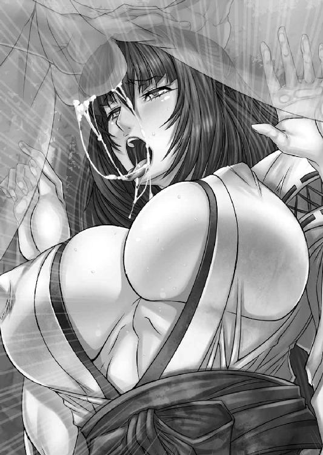
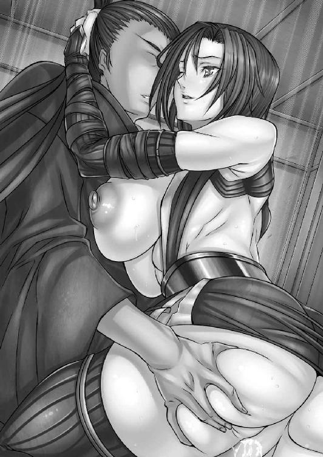
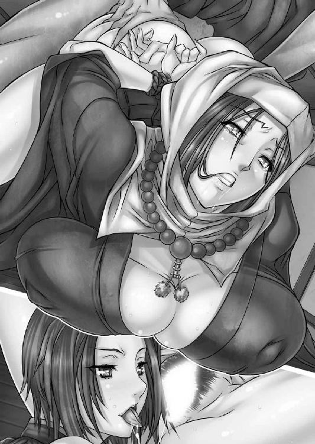

| 艶めき剣戯 秘宝巡りと蜜色の巫女 (リアルドリーム文庫) | |
| 天草白 | |
| (2014) | |
艶めき剣戯
秘宝巡りと蜜色の巫女
小説：天草白
挿絵：asagiri
リアルドリーム文庫
※本作品の全部あるいは一部を無断で複製・転載・配信・送信したり、ホームページ上に転載することを禁止します。本作品の内容を無断で改変、改ざん等行うことも禁止します。また、有償・無償にかかわらず本作品を第三者に譲渡することはできません。
※本作品は電子書籍配信用に再編集しております。
脱藩浪人。仕官の口を求め、丸岡藩から加賀藩までやって来た青年。冷笑的な性格で女好き。かつて友人と想い人に苦杯を舐めさせられた過去を持つ。
陶弥が立ち寄った加賀藩住吉神社の巫女。純情な性格をした清楚な美少女。女盗賊と浪人集団に神社の秘宝を奪われ、奪回のために陶弥とともに藩内を回る。
美貌の尼僧。住吉神社の近くの寺に住んでおり、時折千花の世話をしている。かつては武家の妻だったが、夫を失い尼となった。
秘宝を盗んだ女盗賊。その素性は加賀忍軍の末裔の渡世人。妖艶な美女で変装の達人、性技にも長けている。
千花の神社を襲撃した浪人集団の頭領で、かなりの手練。
一面の銀世界に、その少女は立っていた。
折からの豪雪で視界がほとんど純白に覆われる中、不思議なことに少女の姿だけははっきりと陶弥の目に映る。
年齢はまだ二十歳前だろう、あどけなさを残しながらも大人の女へ成長する途上の相貌は、つぼみから大輪の花を咲かせようとする寸前のような可憐さを感じさせる。
目尻がわずかに垂れ下がった優しげな瞳に、桃色の唇。吹雪の中にあってさえまばゆい光沢を放つ長い黒髪は、首筋の後ろ辺りで紙紐によって縛られ、ひとつに束ねられて背中から腰元まで細く垂れていた。
小柄な身体にまとう清涼感の漂う白い襅と、対照的に目にも鮮やかな緋色の袴は楚々とした巫女衣装で、それが雪景色にたゆたうさまはなんと神秘的なことかと、陶弥は素直に感嘆する。
「ここは神の住まう聖域。浪人の方がいったい何用でしょうか」
鈴の音の鳴るような声で尋ねた巫女に対し、陶弥は単刀直入に用件を告げた。
「この通りの雪だ。すまぬが一夜の宿を借りたい」
──酒巻陶弥がここ加賀の地にやって来たのは二日ほど前のことだ。
越前から加賀に向かって北国街道（上街道）を進む途中、安宅の関に差し掛かったところで突然の豪雪に見舞われたため、山間の神社に一夜の宿を求めて立ち寄ったのだった。
陶弥は二十五歳。
眉目秀麗、涼しげな顔だちは一見して浪人というよりも舞台役者を思わせる。怜悧に整った顔だちとは裏腹に、双眸に苛烈な光を宿し、対峙するものは誰であれ圧倒されるだろう。
陣笠を目深にかぶり、半てんを羽織り、手甲と脚絆を着けた姿は典型的な旅装束だ。
「わかりました。当方にはわたしと神主様しかおりませんし。空いた部屋でよろしければお泊りくださいませ」
ぶしつけな願いに対し、巫女は可憐な笑顔でうなずいた。
「恩に着る。......申し遅れたが、俺は酒巻陶弥というもの。故あって諸国を巡っておる。怪しいものではない」
「わたしは千花と申します。見ての通り、この住吉神社で巫女をしております」
少女巫女は可憐な笑みを浮かべたまま、丁寧に一礼した。
ふいに陶弥の視界が揺れた。目の前の景色が蜃気楼のようにかすみ、巫女の笑顔が別の少女の笑顔へと重なっていく。
髪型や衣装は違うものの全体的な顔の造りや、なによりも見るものを癒し、安心させるような穏やかな微笑が、陶弥の知っている女によく似ていた。
「お花......!?」
喉の奥に棘が引っかかったような、かすれた声でうめく。
「はい？」
訝しげに首をかしげた千花の声で、陶弥はすぐに現実に引き戻された。いくら『彼女』に雰囲気が似ていても、目の前に立っているのはまったくの別人なのだ、と当たり前の事実を思い起こす。
陶弥は静かに首を振った。
（しかし似ているな）
もちろん他人の空似であることは明白だ。『彼女』がこんな場所にいるはずがないのだから。陶弥は胸の奥にこみあげてくる苦い思いを無理やりに押しこめた。
境内の離れに神主や巫女の住居があるということで、陶弥は千花の案内に従い、神社の奥へと進む。
文久三年（一八六三年）の師走（十二月）。
年の暮れも差し迫ったここ加賀の地はすでに雪化粧に彩られつつあり、山間では豪雪に埋もれているところも散見する季節となっていた。
長州藩が外国の艦隊に向かって砲撃を行い、薩摩藩と英国の間でも同じく砲撃事件が起こるなど、諸外国との政情に何かときな臭い雰囲気が漂い始めていた。
比較的落ち着いた情勢の加賀藩においてさえ、不穏な時勢を反映してか、ささいな諍いごとは後を絶たない状態だ。
「──おや、見かけぬ顔だの」
神社の奥の院に進んだところで凛とした声が響き、陶弥は足を止めた。
一人の尼僧が静謐な存在感をまとい、そこに立っていた。
整いすぎるほど整った顔だちは凍りつくほどの美貌だったが、どこか人間味が薄く、名工による彫像を連想させた。白い僧帽で頭部と耳元、首筋までを覆っている。
純白の衣の上から漆黒の袈裟をまとった身体は、衣装の上からでもむっちりと肉づきがよさそうで、女として熟れきった三十代という年齢特有の、匂い立つような色香を感じさせた。
（神社に尼、とは）
奇妙な取り合わせに陶弥は片眉を上げた。
「私は近隣の寺で尼僧をしておる葉澄と申すもの。お見知りおきを」
よく通る澄み渡った声で、尼僧が自己紹介をする。
「酒巻陶弥だ」
千花の説明によれば、葉澄はもともと武家出身で、加賀の藩士の下へ嫁いだものの、夫が病死して現在は未亡人だった。夫の病死後、葉澄は出家して尼僧となり、夫の冥福を仏に祈る毎日だという。
（未亡人か。道理で尼さんにしては色っぽいわけだ）
葉澄の全身から色濃く漂う人妻としての色香は、僧衣をまとっていても隠せるものではなかった。
諸藩で幾多の女と浮き名を流してきた陶弥だが、これほど佳い女に巡り会うことは滅多にない。ムンムンと匂い立つような女の香りが、陶弥の全身をぞわり、と粟立たせた。
ほどなくして夕餉となり、神主が鴨肉と麩を使った治部煮や焼き魚を振る舞った。初老の神主はなかなかの好人物らしく、見ず知らずの陶弥を丁寧に歓待してくれた。
陶弥は丁重に礼を述べてから、対面に座す尼僧へ視線を移す。
「ところで、なぜ尼がこのような場所にいるのだ。ここは仏閣ではなく神社であろう？」
「この神社は人手が足りぬゆえ、私が時々出向いて手伝っておる。普段は近隣の那谷寺で住職を務めているのでな」
葉澄が冷然と告げる。温かみの欠片すら感じさせない口調は、神仏に仕える人間とはとても思えないほど凍てついたものだった。並の人間ならば対峙しただけで全身がゾッと粟立ちそうな威圧を感じるだろう。
「お主こそなぜこの地に？ 武者修行でもしておるのか」
「仕官の口を探しに来た。故あって藩を抜けたのでな」
陶弥は治部煮をすすりながら言った。
「ほう、主は浪人か。藩を抜けるにはそれなりの覚悟がいるであろうに」
深い漆黒の色をした瞳が陶弥の内面を見透かすような輝きを放ち、背筋に不快感が走った。
「北陸で剣の名手として名高いのは加賀の南方、越中の占部、それに──越前の酒巻と聞くが。お主と同じ名だな、酒巻陶弥どの」
陶弥の箸がぴくりと震えた。
「剣の名手か。俺と同じ苗字とは、あやかりたいものだ。葉澄どのこそ尼僧とは思えぬほど世俗に通じておる」
平然と切り返した陶弥に、葉澄は眼光をさらに鋭くする。
「元は武家の女房だったのでな。そういった噂には聡いのだ。越前の酒巻といえば、たしか丸岡藩で色々と騒ぎを起こしたと聞くが......この神社を逃避行の隠れ家代わりにしようというのではあるまいな？」
「逃避行？ さて、人違いと申したはず」
「真に人違いであればよいが。最近は何かと物騒な世相での。胡乱なものにこの神社をうろついてもらいたくはない」
反りが合わない、とはこういった相手のことを言うのだろう。やけに他人の身の上を探り、まるで値踏みしてくるような葉澄に対し、陶弥は苛立ちを募らせ、鋭い視線をたたきつけた。
「回りくどい言い方をする。俺に立ち去れと申しておるのか、葉澄どの。得体の知れぬ男を泊めるわけにはいかぬ、と」
「なんの。たとえばの話を申したまでのこと。尼僧ゆえの老婆心といったところだ」
葉澄はそんな視線を真っ向から受け止め、睨み返す。涼しげな相貌、尼僧という職とは裏腹に存外気が強いらしい。
不穏な空気を察したのか、千花が慌てた様子で間に入った。
「も、申し訳ありませぬ、酒巻さま。詮索をする気はございませんので......葉澄さまも少しお控えいただけませぬか」
「何を申すか、千花どの。胡乱なものをこの神社に近づけるわけにはいくまい。ここには《神明鏡》もあるのだぞ」
「他者を無闇に詰問するのは葉澄さまの悪い癖です。どうかその辺りでおやめくださいませ」
「......ふん、まあ千花どのの頼みとあらばこれくらいにしておこう」
葉澄が矛先を納めたため、陶弥もそれ以上の言は避けた。
「よかった......」
千花が清楚な美貌を真っ赤に染めて安堵するさまは、年ごろの少女らしく可憐だった。そんな彼女の様子に陶弥のささくれ立った心は不思議と落ち着きを覚える。
「馳走になった」
空になった椀を無造作に置くと、陶弥は一足先にその場から立ち去った。
──雪はしばらくの間やみそうになかった。
先を急ぐというほどの旅でもなく、陶弥は神主の好意もあって、雪が弱まるまでの間この神社に逗留させてもらうこととなった。
ここ住吉神社は日本海を行き来する船の安全を祈願して建立された小さな神社だ。社も宝物館も雪化粧に覆われ、純白に染まっている。《神明鏡》と呼ばれる秘宝を祭り、小さいながらも由緒ある神社なのだという。
神主が病に臥せっていることもあり、この神社は十八歳の巫女、千花がほとんど一人で切り盛りしていた。一宿一飯の恩義を返すため、陶弥は神社の雑事を手伝うこととなった。
千花のほうは、神社に祭られている宝を掃除しに行き、ほとんどそれだけにかかりきりだったが、陶弥はその間に社の掃除から薪割りや水汲みまで一通りの雑用をほとんど一人でこなし、戻ってきた千花が驚くほどの作業量だった。
「今日の分はこれで終わりです。酒巻さまに手伝っていただいたおかげですね」
千花がにこやかな笑顔で礼を言った。
「二晩も泊めてもらっておる。これくらいの礼はせんとな」
陶弥が鷹揚にうなずく。
「いえ、わたしたちの神社は男手が足りなくて。酒巻さまのような方がいらっしゃると本当に助かります」
「酒巻さま、などと堅苦しい呼び名は苦手だ。陶弥でよい」
「ですが......」
千花は彼のような浪人に対しても礼儀正しく、敬意を払った態度を示してくれる。もっとも陶弥はあまり形式ばったことが好きではなかった。
ふん、と不満げに鼻を鳴らすと、千花は丁寧に一礼した。
「では、陶弥さま......と、お呼びさせていただきます」
「短い付き合いだがよろしく頼む」
陶弥が言ったそのとき、みしり、と何かが軋むような音がした。背筋に嫌な予感が走りぬけ、陶弥は考えるよりも早く動いていた。
「危ない！」
叫びつつ、千花に向かって突進する。年若い巫女は訝しげに首をひねり、驚いたように陶弥を見ている。
次の瞬間、陶弥の嫌な予感はものの見事に的中した。折からの大雪で地盤が緩くなっていたのであろう、崖の斜面に生えていた大木が根元から崩れ、滑り落ちた。
「えっ......!?」
突然の事態に反応できないのか、千花はその場に立ち尽くしている。華奢な巫女の身体など大木の下敷きになればひとたまりもないだろう。
（間に合え──）
心の中で叫びながら、陶弥は両足に渾身の力をこめて地面を蹴った。千花の身体を横抱きにし、前方に向かって身体を投げ出す。
ほぼ同時に、背中越しに重々しい落下音が響いた。
「大丈夫だったか、千花」
「あ......あ......」
恐怖で身がすくんでいるのか、千花は青ざめた顔のまま声も出ない様子だ。
二人はもつれ合って地面に倒れ、ちょうど陶弥が千花を押し倒したような格好になっている。落下した大木と地面の隙間にうまく入りこめたため、二人ともどうにか無事だった。
息が触れそうなほど間近に美しい少女の相貌が息づく。ふわり、と甘い乙女の香りが漂ってきた。
巫女衣装を内側から若々しく押し上げる胸の双丘が、陶弥のたくましい胸板によって押しつぶされ、痙攣しながらわずかに弾んだ。勢いよく押し倒したためか、巫女衣装の小袖の合わせ目が乱れ、周囲の雪よりもなお白く滑らかな肌が陶弥の眼下で息づいていた。
陶弥は思わず呼吸を詰めた。
（ほう、清純な生娘でありながらこれほどの身体を──）
華奢な身体つきからは想像もつかないほど豊かな胸の膨らみは、乳房の球形の半ばくらいまでがあらわになっている。小袖の合わせ目の端からのぞく薄桃の色彩は乳輪がわずかに見えているのだろうか。
男としての情動を十分に刺激する光景に、陶弥は半ば無意識のうちに、ごくり、と喉を鳴らした。
蕾からまさに今花開こうとしている、可憐な乙女の柔肌を目にしては、男として何も感じないほうが無理というものだ。
千花もまた固唾を呑んだように、黒い睫と瞳を震わせながら陶弥を見上げている。かすかに上気した頬は可愛らしい林檎色にきらめき、ほんの少しだけ隙間が開いた薄赤色の唇からは弾んだ息がもれている。
俗人から隔絶された巫女としての雰囲気をまといながらも、どこか年齢相応の乙女らしさも同時にかもし出していた。
「あ......！」
千花の表情がみるみるこわばった。
陶弥の股間でどう猛な衝動そのままに、男としての象徴が充血を増し、石のような硬度を備えて袴を押し上げる。
陶弥と千花はちょうど腰と腰とを密着させた体勢だ。勢いよくそそりたった肉茎が千花の下腹部を覆う緋袴を強く圧迫した。欲情で煮えたぎる先端部が巫女の下腹をこすり、まろやかな太ももの肉を大きく窪ませる。
「な......!? えっ!?」
生娘である千花には男の生理についてあまり知識がないらしく、何が起きているかわからない、といった様子で目をしばたかせ、呆然と陶弥を見上げた。欲情のこもった視線と性に無知な処女の視線とが二人の中間点で衝突した。
「も、もう大丈夫です、さか......陶弥さま」
千花がほっそりとした身体を左右によじらせるのを見て、陶弥はもう少し今の体勢のままでいたい、という気持ちを押し殺し、身体を起こした。
いきりたつ男根は袴の下でいまだ力を失っておらず、陶弥は少しだけばつの悪い思いとともに、千花の視線から袴を遠ざけた。
「......ありがとうございました」
千花のほうも立ち上がると、いまだ頬を赤く染めたまま、うつむき加減にため息をもらし、乱れてしまった白小袖の合わせ目を元に戻す。
明らかに陶弥の視線を意識し、羞じらいをあらわにする様子は、いかにも十八歳の少女らしく、千花はまだ男を知らないのではないか、と思わせた。
実際、こんな山奥の神社で巫女を続けているのであれば、千花が類まれなる美少女とはいえ、男の手がついていないことは十分に考えられた。
「わ、わたし、神社に戻りますね。まだ所用がありますから」
千花は頬を桃色に上気させ、陶弥から逃げるようにして走り去っていった。
珍しく寝付けなかった陶弥は気晴らしに神社の境内を散策していた
陶弥がこの神社に逗留してからすでに四日が過ぎている。雪が弱まり、いよいよ明日には出立できそうだった。
「それにしても似ている......」
陶弥の脳裏に浮かんだのは美しい巫女の姿だった。
以前に在籍していた丸岡藩で懇意にしていた少女──お花に容貌がよく似ているせいか、千花に対しては初めて会った気がせず、親しみを感じているのは事実だった。
また先日大木の落下から千花を救った際、清純な容姿に似合わぬ豊満な肉体を感じ取り、男としての欲情を禁じえなかったのも事実だ。あのときのことを思い返すと、腰の奥で妖しい疼きが生じてしまう。
（俺はまだ忘れられないのか──）
陶弥の顔に苦渋の色が浮かんだ。
穢れを知らない楚々とした美貌に、穏やかな微笑。陶弥がかつて失ってしまったかけがえのないものが、別の少女の姿を取ってふたたび現れたような、不思議な心地だ。
とっくに吹っ切れたと思っていた過去が心を騒がせる。陶弥が未練がましい己が心に苦笑したそのときだった。
陶弥は足を止めた。背筋がぞわりとするような妙な気配を感じ、身体のほうが即座に反応して腰のものに手をかけた。
「何奴！」
茂みの向こうで、がさり、と小さな音がした。常人ならば聞き逃すようなかすかな擦過音を、しかし陶弥はしっかりと捉えていた。
腰の長刀を抜き放ち、物音がした方向に油断なくかまえる。
ぴん、とその場の空気が緊張感で張り詰めた瞬間、茂みを割って黒い速影が飛び出した。
（盗賊か？ こんな寂れた神社に）
訝りつつも相手が盗人の類だと検討をつける。
黒装束の曲者の動きは存外に素早かった。陶弥は地面を蹴りつけ、爆発的な加速で追いすがるが、相手との差はなかなか縮まらない。
「ええい、止まらぬか」
脇差しを抜き放ち、盗賊の背に投げつけた。後方から迫る白刃を、盗賊はまるで背中に目があるかのように避けてみせる。
しかし、さすがに相手の速度は減じた。その機を逃さずに加速した陶弥が前方に回りこむ。
「ここまでだ、神妙にいたせ」
月光に反射して凶悪に輝く長刀の切っ先を、覆面をした鼻先に突きつける。
「くっ」
黒い影はゆっくりと後ずさり、おもむろに後方へと跳び下がった。
「逃がさぬ！」
その動きを読んでいた陶弥が長刀を一閃させる。夜闇を裂いた白刃を、身をひねってかわした曲者は、そのままトンボを切って三間（約五メートル半）ほど後方へと着地した。
と、盗賊の顔を隠す覆面が中央から二つに裂けて、はらり、と落ちた。続いて身体を覆う黒装束もまた、胸元の辺りが大きく裂ける。
先ほどの斬撃を完全にはかわしきれなかったらしい。
「むっ!?」
陶弥の表情が変わった。
青白い月明かりに照らされた顔は、陰影に富んだ彫りの深い美貌。短く切りそろえられた髪の毛は色素が薄く、月光を透かして栗色に輝いている。
そして──裂けた衣装からのぞく胸元は、よく熟れた果実のように豊かに膨らみ、盗賊の呼吸に合わせて躍動的に弾んでいた。
「女......か!?」
「女だからどうしたというの？」
女盗賊は見事な美乳を隠そうともせず、それどころか胸を大きく逸らし、豊満な二つの膨らみを挑発的に揺らしてみせた。ふくよかに盛り上がった双丘は、その動きによって衣装の裂け目からこぼれだし、淡い月光の下で完全に露出する。
漆黒の装束とは好対照の、美しい純白に彩られた乳房。朱鷺色の乳首や乳輪も豊乳に比しておおぶりで、綺麗な真円を描いている。
「まるで獣ね。飢えたような荒々しい目」
「知った風な口を」
「ふふ、けなしたわけじゃないのよ。あなたみたいな男、嫌いじゃないわ」
謎めいた美女はどこか欲情したようなヌラリとした目つきで陶弥を見つめた。全身を舐め上げるような粘着質な視線は、むき出しの牝性を感じさせる。
女はおもむろに胸元へ手をやり、丸く大きな乳房を下から持ち上げるようにして、陶弥の眼前で躍動的に揺らしてみせた。指先を赤い乳首の上に乗せると、コリコリと扱く。
「あ......んっ」
陶弥に見せつけるようにして自慰まがいの行為を始めた女盗賊の妖しい姿に、さすがの陶弥も一瞬理性を揺さぶられ、目の前の光景に釘付けとなる。しなやかな指と指の間で挟まれた乳首は月光の下でもわかるほどに硬く尖っていた。
「ああ......！」
明らかに興奮し、欲情している様子の黒装束の女を目にして、陶弥は動けなかった。多くの女と浮き名を流してきた陶弥からしても、これほど色香をたたえた艶めいた美女と相対するのは初めてだ。
「むぅっ......」
極上の女が見せる媚態に、ほんのわずかに意識が乱れる。
刹那、女が地を蹴り、大きく跳んだ。懐からなにかを取り出して地面にたたきつける。もうもうたる白煙が陶弥と盗賊との間をさえぎった。
「おのれっ！」
色仕掛けにまんまといっぱい食わされた自分自身に苛立つ。
と、本殿のほうから鬨の声が聞こえた。同時に、かすかに焦げ臭い匂いが漂う。
「まさか今のは」
賊は先ほどの女一人ではない、と気づき、陶弥は苦々しく顔を歪めた。
先ほど女盗賊が煙玉を使ったのは陶弥から逃れるためだけではなく、別に潜んでいたものたちへの突入の合図でもあったのだ。
「くそっ、賊の本当の狙いは──」
陶弥は長刀を腰の鞘に納めると、すでに火の手が上がり、黒煙が噴き上がった本殿に向かって走り出した。
炎の向こうに、千花の可憐な顔が浮かび、そして消えた。
時折舞い散る粉雪と、頭上を照らす美麗な月光。常ならば風流を存分に感じられる景色なのだろうが、今は殺戮の場所でしかなかった。
陶弥が本殿に到着すると、すでにあたりは炎に包まれており、十数人の荒くれ者たちが跋扈している状態だった。粗末な身なりからしていずれも浪人らしい。
「貴様ら、何者だ」
誰何しつつ、抜き身の刀を掲げた陶弥がその場に到着した。
「何者だ、と問うておる！ 答えぬかっ」
陶弥の問いかけに対する返事は、真っ向からの斬撃だった。
闇夜を切り裂く白刃に対し、陶弥は身体をひねるようにして避け、反転しつつ抜き打ちの一撃をたたきつける。
「が、はっ」
短い苦鳴とともに血しぶきがはじけ、その浪人は倒れ伏した。
陶弥はもう一度周囲を見渡したが、千花や神主の姿が見当たらない。今日は葉澄が神社の雑事を手伝いに来ているはずだが、彼女の姿も同じく見当たらなかった。
すでに避難したのか、それとも神社の中に取り残されているのか。あるいは──。
最悪の事態を想像し、陶弥はかすかに眉をひそめた。
と、新たな浪人が抜き身の刀を手に斬りかかる。
「遅いっ」
陶弥は振り向きざまに長刀を一閃させ、浪人の左肩から右腰にかけて袈裟斬りにする。浪人は断末魔すらあげられず、赤黒く濁った血を噴き上げながら倒れた。
たちまち他の浪人たちが色めき立つ。手に手に刀や槍をかまえ、陶弥の周りをぐるりと包囲する。
「問答無用というわけか。ならば俺も口ではなく剣で応えてやろう」
陶弥は双眸に危険な光を宿すと、手にした長刀を上段に掲げた。たちのぼる剣気に浪人集団が気圧されたように後ずさる。
「さがっておれ。貴様らでは手に負えまい」
浪人たちの列を割って進み出たのは、赤銅色の肌をした一人の偉丈夫だった。
陶弥よりも頭二つ分ほど高い巨躯は、六尺（約百八十センチ）をゆうに超える。
厳しい顔に隻眼、そして全身から放つすさまじいまでの剣気は、この男が他の有象無象とは一線を画していることを示していた。
「......使えるらしいな」
陶弥は長刀のかまえを、隙の多い上段から青眼へと移行した。
「占部武久だ」
聞き覚えがある名前だった。たしか越中において剣の名手と名高い男の苗字が占部──尼僧の葉澄がそう言っていたはずだ。
占部のかまえも陶弥と同じ青眼だが、こちらは剣先をまっすぐ地面に向け、下段に近いかまえ──いわゆる『地摺り青眼』である。
「酒巻陶弥」
互いに最小限度の口数で語りつつ、相手の隙をうかがう。
「......あの越前の酒巻か？ 流派は？」
「本条一刀流。多分に我流が混じっておるが、な」
陶弥は最初の質問には答えず、流派名だけを名乗ると、口の端を笑みの形に吊り上げた。
「俺の剣術は古流よ。お互い世俗の流行からは外れた流派のようだが......くく、久々に楽しめそうだ」
占部もまた楽しげに笑う。
地を蹴ったのは同時、電光閃く斬撃もまた同時だった。
腹の底に響く金属音とともに、陶弥の剣と占部の剣がぶつかりあい、同じだけの力で弾かれる。二人の剣は白銀の弧を描き、まぶしい火花を散らして漆黒の闇に瞬く。
渾身の力で打ちこみ、相手に捌かれると即座に態勢を入れ替えて反撃に備える。互いの隙を探りあい、わずかな緩みでもあらばそこに食いつこうというかまえ。
張り詰めた空気がぴりぴりと肌に痛い。
（こいつ──できるな）
内心舌を巻きながら陶弥は長刀を旋回させ、下段から迫る相手の斬撃を跳ね上げた。
柄を握る両手に鈍い衝撃が走る。まともに正面から受け止めれば、刀を折られかねないほど重く、鋭い一撃。
（受けに回れば、一気に押し切られる！）
ふたたび下段からの斬撃が襲いくる。陶弥はその場に踏ん張り、渾身の力で占部の一撃を弾いた。地を蹴り、相手の背後を取ろうと疾走する。
しかし占部の身のこなしは、その巨躯とは裏腹に敏捷だった。陶弥に見劣りしない速度で併走しつつ、みたび下段からの斬撃を放つ。
「ちいっ」
陶弥は舌打ち交じりに飛び退り、占部との距離を取った。
──と、そのときだった。
「う、ぐっ」
背後からくぐもった悲鳴が響くのと同時に、先ほどの女盗賊が飛び出してきた。陶弥が切り裂いた黒い衣装に代わって、いつの間にか新しい衣装をまとい、小脇になにかを抱えながら疾走する。
「ま、待って──」
それを追って飛び出したのは千花だ。巫女衣装のまま、快足を飛ばして逃げる女盗賊を追おうとする。
「うかつに飛び出すな、千花っ」
陶弥は慌てて彼女の下へ駆け寄り、一喝した。この乱戦状態で千花のような素人が飛び出せば、巻き添えを食いかねない。
「秘宝が！ 神明鏡が......！」
「秘宝？」
千花の言葉に陶弥は眉をひそめた。たしかこの神社には戦国期からつたわる宝を祭具として祭ってある、と聞いたような気がする。とはいえ、人命を懸けてまで守るほどのものなのかどうか、信心の薄い陶弥にはわからなかった。
「ええい、退くぞ！」
抜き身の剣をだらりと下げたまま占部が叫んだ。
「し、しかしお頭」
「牢吉や仁兵衛たちはこいつに斬られたんですぜ。仇を！」
「貴様らでは束になったところで、その男にかなわぬ」
部下たちの抗弁を占部は一言で切って捨てた。
「無駄に命を捨てるな。いかにあの方のためとはいえ......俺はこれ以上貴様らを無駄死にさせたくはない。酒巻陶弥、といったな。この借りはいずれ──」
苦渋の表情でうめくと、占部は憎々しげに陶弥をにらみ、きびすを返した。
「あれはこの神社伝来の宝です。何があっても取り戻さなければなりません」
半ば焼け落ちた境内で、千花は開口一番に言い放った。
不幸中の幸いというべきか、神主と尼僧の葉澄は無事であり、陶弥も安堵したが、奪われた《神明鏡》というのはこの神社に代々つたわる秘宝ということで、大切に祭られていたらしい。
その秘宝を奪われたことで、千花は血の気の引いた顔でうなだれている。
騒ぎの中で軽傷を負った神主を手当てするため、葉澄は神主とともに神社の奥の間へと引っこんだ。境内には陶弥と千花だけが残され、寒々とした夜気が身に染みた。
「奴らはかなりの手練だった。お前のような小娘一人では到底手に負えまい」
陶弥は先ほど剣を合わせた浪人たち、特に頭領を務める占部の手並みを思い出し、顔をしかめた。諸藩を巡ってきた陶弥だが、あれほどの使い手に会うのは久しぶりだ。剣術道場の稽古ではけっして培うことのできない本物の殺人剣の使い手だった。
（実戦で鍛えられた剣か。この俺と同じだな）
内心でひとりごちる陶弥に対し、
「──お願いがございます、陶弥さま」
千花が姿勢を正して深々と頭を下げた。
「何の真似だ」
「どうか、この千花にお力をお貸しくださいませ。この通りでございます」
額を床に擦りつけ、巫女少女は切なげな声音で陶弥に懇願する。
「陶弥さまの仰る通り、彼らから秘宝を奪い返すのは容易ではないでしょう。わたし一人の手に余ります。ですが、陶弥さまのお力があれば」
「俺はしがない浪人に過ぎぬよ。買いかぶり過ぎだ」
「いいえ！ 昨日のお手並みは見事でした。あれだけの数の浪人たちを相手に一歩も引かぬ戦いぶり......貴方様の剣ならば、彼らにも立ち向かえましょう」
「......俺は」
陶弥は奥歯をかみ締めてうなった。
黒瞳に大粒の涙を浮かべ、悲嘆に暮れる巫女を見ていると、つい情にほだされそうになってしまう。
純粋な善意で依頼を受けてもよいのではないか、と心の内側でもう一人の自分がささやいた。実際かつての陶弥であればそうしていただろう。
ぎりっ、と強くかみ締めた奥歯が軋んだ。
「お前は世間というものを知らなさすぎる。情や他人の善意など信じるものではない」
裏切り者、という絶叫が陶弥の頭の中で幾重にも反響した。かつて陶弥が所属していた藩での出来事が脳裏に鮮やかによみがえる。親友と信じた男の嘲笑と最愛の女の冷笑を、同時に幻視する。
「そんなもので人は動かぬよ」
陶弥は双眸に激情の炎を燃やして無垢な巫女をにらみつけた。世の中の裏側や醜いものなどとは一切無縁な、清純無垢を体現したかのような美貌。
実際、この期に及んでも千花はまだ陶弥の『善意』に期待しているのかもしれない。穏やかな表情をかすかにこわばらせながらも、邪気のない瞳を陶弥に向けている。
「出会ってから日は浅いですが、わたしは陶弥さまのことを信ずるに足るお方だと思っております。あなた様の目はまっすぐで、曇りのない光をたたえています。窮地にある人間を放っておくはずがありませぬ」
千花はつぶらな瞳を輝かせ、滔々と語った。まるでこの世の中は善人だらけで、優しさや希望に満ちていると信じきっているかのような目だ。
陶弥にはそれがどこか苦々しく思えた。世の中にはもっと醜くどろどろとした妄執が渦巻いているのだと、この少女は理解していない。
胸の奥でドス黒いなにかが立ち上がるのを、陶弥は感じた。
「こちらは命を懸けるのだ。お前からもそれなりの対価をもらわねば釣り合わぬ」
「それなりの対価、と申されますと」
訝しげに首を傾けた千花に対し、陶弥は傲岸な態度で顎をしゃくった。
心の内側から荒々しい衝動が湧き上がり、自分でも到底制御できないほどに荒れ狂う。陶弥はその衝動に逆らわず、むしろ積極的にその虜となって、千花に対してどう猛にうなった。
「......脱げ」
自分でも驚くほどしわがれた声で命令する。人が動くための動機は、信頼などであってはならない。人を信じてもいずれは裏切られる──それが陶弥の信念であり哲学だった。
千花は相手が何を言っているのかわからない、といった様子で首をかしげた。
「脱げ、と申されますと......？」
「俺は命がけで依頼に応じるのだ、お前もそれに見合うものを懸けてもらおう」
陶弥の意図がつたわったのだろう、戸惑った表情を浮かべていた千花の顔色がサッと青ざめた。処女特有の防衛本能なのか、両腕で己の身体を抱き、おびえた表情をあらわに陶弥から後ずさる。
「わ、わたしに、身体を差し出せと申されるのですかっ？」
「俺は情や善意では動かぬ。動くとすれば利だ。お前の美しい身体を俺に差し出し、純潔を捧げるのならば、命がけの依頼にもいくらかは釣り合いが取れよう」
「わたしは、その、まだ......」
「やはり生娘か」
可憐な外見や清楚な雰囲気からまず間違いなく処女であろうと見当をつけていたが、予想どおり千花は男を知らない身体らしい。
「俺が相手では、嫌か」
「そんなっ！ そのような言い方」
千花がハッと表情を引きつらせ、小さく息を飲むのがわかった。彼女が陶弥のことを憎からず思っているのは感じていた。
とはいえ、さすがに今すぐに肌を許せと命じて、承諾するほど蓮っ葉な娘ではないだろう。
「わ、わたしは巫女なのです。神に仕えるものとして、殿方と淫らな行為をするなど......あまりにも罰当たりなこと」
「あくまでも巫女として拒絶するか。ならば俺が嫌というわけではないのだな？」
陶弥が前に出た。互いの顔が近づき、息が触れ合いそうだ。
鼻先に、十代の少女に特有の甘酸っぱくも清涼感のある爽やかな匂いが漂ってきて、陶弥の胸を湧かせた。心臓が鼓動を速め、男としてのどう猛なたぎりがこみあげる。
「お許しくださいませ、陶弥さま」
千花が切なげに顔を伏せてあえぐ。
「せめて金子をお払いするというわけには参りませぬか......？ 今は無理ですが、必ず用意しますゆえ、どうか」
「他言はせぬ」
躊躇の色が濃い巫女に対し、陶弥が重ねて言い放った。
「どうしても、他のことではいけませぬか」
千花が弱々しく首を振った。無論、彼女が心の底から嫌悪しているようならば、陶弥とて無理強いするつもりはなかった。
嫌がる女を力ずくで犯すほど、陶弥は落ちぶれてはいない。まして千花のように純真な少女を──。
しかしこうして薄暗い室内で、二人きりで向かい合い、男として何も感じないほど陶弥は枯れてはいない。千花が欲しい、という直截的な欲求に揺り動かされ、陶弥はさらに一歩前に出た。
「どうかお許しくださいませ。千花は......千花は、巫女にございます。この身は神に捧げしもの。どうか......！」
躊躇をあらわに首を左右に振る千花に対し、陶弥はますますじれったさを感じ、白い小袖に手をかけて押し倒した。
「ああっ！」
千花の抵抗は思ったほど強くはなかった。体重をかけてのしかかると、四肢をばたつかせながらも、戸惑いとも諦めともつかないため息とともに、やがて動きを弱めておとなしくなる。
血の気を失って青ざめた顔の中で、巫女の黒瞳だけが異様なほど爛々と輝いていた。恐れやおののきのためか、それとも妖しい興奮のためかは、陶弥にもわからなかった。
ふたたび千花の顔が、かつての知己と重なり合う。
「なおのこと奪いたくなる。ええい」
陶弥は猛々しく叫び、巫女の緋袴をめくり上げると、間断なく震える華奢な両足を左右に広げて、その奥にたたずむ処女の秘所へ顔を近づけた。
「んっ......そ、そんな場所をっ!?」
千花が羞恥の声をあげたが、陶弥はかまわずに襦袢の裾を割り、不可侵の秘園をむき出しにする。甘酸っぱい汗の匂いとかすかな尿臭とが混じりあった生娘独特の香りが漂い、陶弥の鼻腔をくすぐった。
（これが巫女の女陰か）
股間の付け根で、驚くほど小さな秘穴が細かく痙攣していた。陶弥とて、生娘を抱いた経験は一度や二度ではないが、これほど楚々として慎ましく、秘めやかな膣孔を目にしたのは初めてのことだ。
「どうしても許してはいただけないのですね──」
消え入りそうな声で嘆願されるが、陶弥は視線を逸らさなかった。いや、逸らせなかった。あまりにも美しい性器に、魂を奪われた心地で見惚れていた。
淡く生えそろった恥毛が陶弥の呼気によってわずかにそよぎ、綺麗な桃色をした肉裂がひく、ひく、と小刻みに痙攣していた。
舌先を丸め、淡い陰毛の森をかきわけながら進むと、その向こうには桃色に輝く肉裂が息づいていた。
舌を勢いよくくねらせ、まだ誰の手も触れたことのない処女器官をゆっくりと舐め上げる。舌の上にかすかな刺激が走り、塩辛い汗の味が沁みて、陶弥はこれこそ無垢なる乙女の汁だと舌鼓を打った。
「なるほど。生娘の味がするぞ」
「やぁぁっ!? そ、そんなところ、だめぇ」
ぞろり、と舌を這わせ、すっきりとした造りの秘唇を肉裂に沿って上下に舐め上げると、千花はふたたび羞じらいの悲鳴をあげた。
肉づきが薄く柔らかな溝はぴったりと閉じており、舌先を内部へこじ入れようとしたものの、容易に侵入できない。陶弥は唾液をたっぷりとまぶしつつ少しずつ二枚の花弁を蕩かせていく。
粘ついた唾液が粘膜に浸透していくとともに、じゅく、じゅく、と水っぽい感触が増し、生硬だった花びらもまたわずかに柔らかみを増した。舌先や舌腹でなぞって肉の花弁を溶かす。
入り口を閉ざしている縦長の肉唇を十分にほぐしたところで、陶弥は舌の先端を丸め、ふたたび膣内への侵入を試みた。処女の抵抗感をかきわけながら奥へと押し入る。
「ああっ！」
千花の反応は思いのほか鮮烈だったが、しかしけっして苦痛を示しているわけではなかった。秘孔の内部へ舌先をこじ入れたとたん、下肢を軽く跳ね上げ、腰を揺らしながらも、乙女の喉からもれたのはどこか心地よさげな声だ。
「生娘だというのに随分と反応がよいではないか」
訝しく思った陶弥は巫女の秘所から顔をあげた。
「っ......!?」
千花の顔がわずかにこわばるのを見逃さず、たたみかけるように問いかける。
「ここを自分で弄ったことがあるのか？」
「......あ、ありません」
千花が返答するのに要した一瞬の躊躇を陶弥は聞き逃さなかった。やはり、と内心で得心しながらさらに質問を重ねた。
「俺たちは秘宝奪取のために手を組む同志ぞ。仲間に嘘を申すつもりではあるまいな？」
「ああ、そんな。お許しくださいませ、陶弥さま」
真面目な千花は動揺もあらわにか細い声で懇願するが、陶弥はどうしても彼女の言葉が真実なのかどうかを聞き出さなければ気がすまなかった。
「どうなのだ、千花」
「わ、わたしは」
長い沈黙が流れる。陶弥はなおも舌先を走らせ、鋭敏な肉裂やその上部にたたずむ肉莢にまで標的を伸ばしていく。
「んっ、くぅっ。ど、どうして、陶弥さまは、そう意地悪をなさるのですか......？ 千花は......千花は、恥ずかしゅうございます」
「ふん、正直に言う気がないのなら、お前の身体に直接聞くとしよう」
そんな千花に愛おしささえ感じながら、陶弥は緋袴の裾をからげ、楚々としたたたずまいの秘処へふたたび顔を寄せた。
鼻先に汗とかすかな尿臭と、そしてそのどちらでもない甘美な液体の混じりあった、馥郁たる香りが漂ってきた。
「あっ、おやめくださいませ」
千花の悲鳴も意に介さない。
先ほどよりも格段に牝臭の増した秘所はトロトロに濡れそぼっており、陶弥が唇を軽く触れただけで甘酸っぱい蜜液の味が口の中に広がった。
「こっちの感度はどうだ？」
肉裂に沿い、下から上に向かって舌を這わせると、ぷっくりと膨らんだ小豆のような器官に行き当たった。肉裂に比べてもひときわ火照ったそれは、千花の淫核だった。
包皮に包まれた肉の豆を、陶弥は舌腹を使い、舌の裏面で押しつぶすようにして圧迫した。最初は弱く、徐々に強く......圧力を増していくたびに、薄赤色の宝玉を思わせる肉豆は脈動し、少しずつ大きさを増していく。
「んっ、ふあっ！」
千花がほっそりとした腰を上下にしならせた。
包皮の上から舌で触れるだけでは飽き足らず、陶弥は舌先を使って、淫核を包む莢を器用に剥いていく。ずるり、と完全に露出した肉豆はすでに十分充血しており、おまけに一回り以上肥大化していた。
「ああっ、だめぇ」
千花は細長い両足をしきりに震わせ、それ以上淫核や秘裂を弄られないよう抵抗を見せる。処女らしい羞じらいは、しかし、陶弥にとって興奮を高める役目しか果たさなかった。
「も、申しますっ！ 申します......から。お許しくださいませっ」
さすがに千花も観念したのか、切なげな悲鳴まじりに懇願し、腰を左右によじりながら、股間を陶弥の顔から引き離した。
「その、実は......」
千花は口ごもりながらも、恥ずかしげにつぶやく。
「なかなか、寝付けない夜に......と、時折」
陶弥のにらんだ通り、やはり自涜の経験があるらしい。
清純であることを求められる巫女にとって、それは罪深い行為に違いなかった。千花のあどけない相貌には哀れなほどはっきりと朱が差し、小刻みに震え続ける唇からはひっきりなしにため息がもれている。
「いつからだ」
陶弥が重ねて問うと、千花は青ざめた顔で弱々しく首を左右に振った。
「ああ、許して」
「答えよ、千花」
陶弥は千花の秘唇に唇をぴったりとつけると、荒い息を吹きこみながら、舌を付け根まで潜りこませた。
深々とした挿入を受けると、処女の膣洞は粘膜全体を細かく震わせ、おののいた。千花はほっそりとした両足を勢いよく跳ね上げて叫ぶ。
「きゃぁっ!? も、申しますから。まずはおやめくださいませ、陶弥さまっ......千花は、もうっ......ああん！ あんっ、やぁぁっ」
「本当に申すのだな、千花」
陶弥が舌をくねらせ、狭苦しい膣壺をかき回すと、ぐちゅっ、とあふれだした蜜が畳を濡らし、陶弥の顔にまで飛び散って、ぷん、と乙女の匂いを発散した。
羞じらいの悲鳴とは裏腹に、巫女の秘所はますます潤いを増し、いまや陶弥が内部で舌をくねらせるたびに、ぴちゃり、ぴちゃり、と蜜液の音を強く響かせ、粘膜全体がしっとりと水気を含んでいた。
「ふん、清純そうな顔をしている割にはなかなかに早熟よ」
陶弥がうなった。
「お願いです、陶弥さま。もうお許しくださいませ。意地悪は......」
ほとんど洪水に近い状態となっている秘処から顔をあげると、はあ、はあ、と荒い呼吸を繰り返す巫女少女に視線を向ける。
「五年ほど前から、です」
千花は観念したように消え入りそうな声で告げると、両手で顔を覆い、嗚咽をもらした。
巫女の身体がこれほどの感度を備えているのは、幾度も行った自慰行為によって自然と秘処が開発されていたからなのだろう。とはいえ、千花が類まれなる豊かな性感を備えていることに変わりはない。
陶弥は白い小袖の上から胸元へ手を這わせると、華奢な身体つきからは信じられないほどたっぷりと柔肉の詰まった乳房を荒々しく握り締めた。
「んっ！」
千花は瞳を閉じたまま鼻にかかったような嬌声をこぼす。
陶弥の指先を避けようと身体をよじらせているが、千花の表情に嫌悪の色はなかった。性悦に染まり始めている自分自身への戸惑い──白い相貌には、初めて性に触れた生娘独特の表情が浮かんでいた。
「千花......」
陶弥は千花の顎に手をかけて、可愛らしい相貌を上向かせた。かすかに濡れた唇は半ば開いていて、綺麗な歯列と赤々とした舌とがのぞいていた。
陶弥が唇を寄せると、千花はハッと目を見開いて顔を逸らした。
「だ、だめ」
唇を真一文字に引き結び、垂れ目がちの瞳を揺らしながらも、その奥に輝く光は断固たる拒絶の意志を示していた。
「互いに恋焦がれあう関係ではないゆえ、唇だけは許さぬというわけか。ならばこちらはどうかな？」
陶弥が千花の秘処へ手を伸ばした。
ヌルヌルとした秘唇に指先が触れたとたん、ぐちゅり、と濁った水音が響き、肉層の奥からはトロリとした粘液が後から後からこぼれ落ちる。
卑猥な音と感触とが、十八歳の少女の身も心もすでに十二分に高ぶりきっていることを知らせていた。
「これほどの女を見過ごすことなどできぬ。お前が欲しいのだ、千花」
陶弥は正面から美しい巫女少女の顔をのぞきこんだ。
涙に濡れた黒い瞳がゆっくりと閉じ、形のよい唇からは諦めたような、深い吐息がこぼれた。
「いけないお方。強引に......。ああ、千花は......千花は神に背きます。どうか、お許しを......」
千花は切なげにあえぐと、陶弥の肩から離した手を床の上へ静かに置く。
陶弥がゆっくりと上体を起こしたところで、二人の視線が正面からぶつかりあった。
「や、優しくしてくださいませ」
消え入りそうな声で懇願した十八歳の少女の儚げな美貌は眉間が険しく寄り、頬が小刻みに震え、唇は血の気を失って青ざめ......不安げな表情が色濃く浮かんでいた。
「俺に任せておれ。きっちりと濡らしておけば、処女とはいえそれほど痛くはない」
陶弥は千花の頬や耳朶に優しく何度も口づけした。相手を落ち着かせるために、滑らかな背中を何度も撫でる。
今までの強引な責めとは一転、千花の肌のいたるところに口づけを繰り返しながら、畳の上へそっと巫女の肢体を横たえる。
「や、優しくしてくださいませ。初めて、ですから」
かすかなため息をもらす千花を見下ろし、陶弥はすらりと長い両足を押し開いた。開脚の角度が大きくなるにつれ、肉づきの薄い太ももの間に隠れていた神秘の花園が徐々に明らかになっていく。
処女の秘処が完全にあらわになった瞬間、陶弥は我知らず感嘆のため息をもらした。
ぐん、と肉根が今以上の勃起反応を示し、高角度に反り上がると、先端部が臍にくっついた。陶弥の欲望器官はまるでそれ自体が意志を持つかのように、眼前でたたずむ未通の秘処に入りたがっている。
「入れるぞ」
短く宣言して、陶弥は千花の両足の間に腰を進めた。張り詰めた切っ先を巫女の中心部にあてがうと、互いの性器粘膜が接触し、人の身体の一部とは思えないほど高い熱を孕んだ感触が亀頭部につたわった。
グッと力を入れて沈める。ぴったりと口を閉じた花弁を、力をこめて押し開きながら、先走りの液を滴らせる先端がわずかに千花の内部へと潜りこんだ。
「あんっ......はぁ、ぁぁぁっ......！」
ほんの数寸押しこんだだけで、すさまじいまでの抵抗感が亀頭全体を押し返そうとするのは処女ならではの感触だ。
「っ......ぁぁぁっ......！」
千花が断続的な悲鳴をもらし、しなやかな身体を弓なりに反らせた。
わずかにめりこんだ亀頭部を体外にはじき出されそうになり、陶弥は腰にグッと力を入れて踏ん張ると、さらに前へと押し進めた。反発の強い粘膜をねじ伏せるように体重をかけて、たぎりきった逸物を埋めこんでいく。
「さすがに、硬いな」
久しぶりに味わう処女肉の生硬さに陶弥はうめいた。
処女の膣粘膜は四方から陶弥の肉根を食い締め、頑強に抵抗する。入り口をこじ開けた肉棒を、奥に向かって一寸進めるだけでも一苦労だ。ぎゅうぎゅうに詰まった膣肉を強引に広げるようにして、陶弥は肉棒を押し進めた。
「お、大きすぎます、陶弥さまっ......こんなのっ......ああんっ......！」
千花は眉間に深く皺を寄せ、可愛らしい顔を険しく歪ませた。
「もう一息だ。気張れよ、千花っ」
清らかな巫女の処女を今まさに奪おうとしているのだ、と思うと、経験豊富な陶弥といえども荒々しい衝動を抑えきれず、強引に腰を押しこみながら吼えた。
膣孔の中途で、肉棒が引っかかるような感覚があった。充血した亀頭部で、行く手を塞ぐように迫り出している出っ張りの存在を確認すると、
「が、あっ！」
陶弥はひときわ大きな雄たけびをあげて、全体重を下腹部にこめた。
みち、と羅紗が裂けるような感触がして、同時に一番狭いところを突破した陶弥はそのまま千花の最奥にまで己の剛棒を突き入れた。
「きゃぁ......ぁぁ......ぁっ」
切れ切れの悲鳴とともに、千花が少女から女になった産声をあげた。
キツキツの膣内に陶弥の剛棒が付け根まで嵌まっていた。貫通した感触は心地よく、同時に清純無垢な巫女の初めてを奪ったのだ、という征服感がこみあげる。
類まれな可憐さを備えた少女の、最初の男になれた──極上の感慨が陶弥の胸を陶酔させる。
朧に差しこむ月明かりに照らされ、千花の太ももの辺りが青白い輝きを宿した。両足の付け根には陶弥の巨根が深々と嵌まり、大きく押し広げられた膣穴の端から、薄桃色の鮮血がひと筋こぼれ落ちていた。
「大丈夫か、千花」
陶弥が処女の身体を気遣うと、千花は上体をわずかに上げて弱々しくうなずいた。前戯の段階で散々濡らしておいたためか、あるいは千花の身体が思った以上に成熟していたのか、破瓜の痛みはそこまでひどくはないらしい。
陶弥は千花の細くくびれた腰を両手でつかみ、己の腰に向かって引き寄せた。ずん、ずん、と肉刀の切っ先で膣底を突き上げるようにして挿送を開始する。
「うっ、く、んっ!? やぁぁっ......！」
痛みというよりは驚きのほうが強いのだろう、胎内を浅くえぐる肉棒の動きに千花がやるせない悲鳴をこぼした。
最初はゆっくりと、開通したばかりの膣洞の感触を探るようにして腰を繰り入れる。
陶弥の男根はただでさえ並の男よりもはるかに長大だ。繊細な処女膣を傷つけないよう、奥深くまで入れず、浅瀬から中腹までを軽くこする程度の強さで抽送を続ける。
「あ......」
千花がかすかにうめきながら細いおとがいを上向けた。
「これが男ぞ。どうだ、千花」
「なんだか不思議......です。わたしの中に、陶弥さまがいるのですね」
かすれた声で感慨深げにつぶやく巫女は、まるで神に舞の奉納でもしているかのように神秘的な表情をたたえていた。
陶弥は少しずつ動きを速め、膣内全体に肉柱の感触を馴染ませていった。ぐちゅり、ぐちゅり、と千花の胎内で濁った水音がこだまする。
「はっ、あ、あんっ」
陶弥の分身器官を千花の内部に刻み、形を覚えこませる。無垢だった処女の身体を、一突きごとに陶弥の色に染めて女の器官へと変貌させる。
生硬さを感じる膣内粘膜が徐々に柔らかくほぐれてきたのを確認したところで、陶弥は腰の律動を一気に加速させた。ゆったりとした抽送運動から一転して、動きを速めた出し入れへと切り替える。
「は、ぁぁぁぁぁっ！ そ、そんなっ！ は、激しすぎますっ！」
千花はかすれた声であえぎ、黒々とした瞳を揺らしながら陶弥を見上げた。
生まれて初めての肉の交わりに戸惑い続けの巫女を見下ろし、陶弥は口の端を吊り上げて笑う。まぐわいの基本を一つ一つ身体に覚えこませていくのは、処女を奪ったものの特権だ。
まして千花のような極上の美少女を相手に、それができるのは男にとって至福というほかはない。
「お前の身体をよく見せよ、千花。もっとだ」
陶弥は身体を前傾させると、白小袖の合わせ目を左右に押し開き、なだらかな両肩がむき出しになるまで雪肌を露出させた。まだ誰も手をつけていなかった肌は輝くばかりに美しく、陶弥は思わず呼吸を詰まらせた。
「えっ、陶弥、さまっ!?」
華奢な身体つきとは裏腹に、胸の双丘は豊かに実り、発育途上でありながらも十分に成熟した十八歳という年齢ならではの色香を感じさせる。
突然裸の胸を露出させられた千花は、慌てた様子で上体をよじらせ、陶弥に向かって声を張り上げた。
「あっ、駄目です。見ないでくださ......ふわぁぁぁっ」
陶弥はさらに身体を折り曲げ、千花のふくよかな胸の谷間に顔を埋める。少女の乳房は瑞々しい弾力で陶弥の顔を包みこみ、ぷるん、ぷるん、と弾みながら、勢いよく押し返してくる。
眼前で躍動的に揺れる薄赤色の乳首を口に含むと、軽く歯を立てた。
「んっ！ はぁ......んっ」
敏感な箇所への攻撃に、千花の肢体が大きく震えた。長い黒髪を振り乱し、処女を失ったばかりの少女は上ずったあえぎ声をこぼした。
「だ、駄目、ですっ。そんなところ、ああぁっ......！」
上下の歯で乳首をすり潰すようにして甘噛みしながら、薄桃色の先端部を舌先ではじく。柔らかな乳首は内部に芯が通ったように硬化し、同時に膨らみを増しながら立ち上がっていく。
初心な少女がたしかな性的興奮を覚えている証だった。同時に、ぐちゅっ、と腰の下で粘液が跳ね飛ぶ音が響き、結合部を見下ろすとドロリとした蜜液がにじんでくるのが見えた。
「むうっ。よいぞ、千花っ！」
陶弥の太竿を包む肉壁全体がヌルヌルとした触感を増し、膣粘膜を湿す愛液が急速に漏出しているのがわかる。たっぷりとした量の愛蜜で内部が十分に満たされたため、千花の膣内は柔らかくこなれていた。
軽く腰を揺すると、一分の隙間もないほどぴったりと埋まっている肉根が滑らかに動く。これならば、そろそろ本気で責めてもよさそうだ。
陶弥は今までよりも腰を深く遣い、段差の高い雁首で処女粘膜を強くこすりたてた。抽送の拍子が単調にならないよう、緩急をつけて未開発な女体に責めこむ。
深く差しこんで肉の切っ先で子宮を強くたたいたかと思えば、今度は浅く挿入した状態で膣の入り口付近を上下左右にこすり上げる。ゆったりとした抽送で性感帯を探った。
「どこだ、千花。どこがよいのだ？」
女体の中でより強く快楽を覚える箇所というのは、女によって千差万別だと陶弥は豊富な女性経験から熟知していた。余裕たっぷりに十八歳の処女の身体を賞味しながら、千花のわずかな反応の変化も見逃すまいと欲情の視線を注ぎ続ける。
「そ、そんな。恥ずかしい、です」
自分の反応を逐一男に観察される羞恥からか、千花は頬を可憐に染めて、陶弥の視線から顔を逸らした。わずかに開いた唇から熱いため息をもらす。白小袖をはだけられ、むき出しになっている左右の肩が、乳房が、細かく痙攣する。
そんな仕草の一つ一つが愛らしく、意地らしく、陶弥の情念をますます燃え立たせる。たぎる欲情のままに、陶弥はひときわ強く、子宮の入り口にまで届くほど深く、己の剛棒を繰りこんだ。
「あっ......！」
ごつっ、と肉刀の切っ先が膣底に当たる感触がした瞬間、千花が短く、甲高い声をあげた。
そこが肉悦を強く感じるところだ、と見当をつけた陶弥は、肉棒を深く埋めたまま先ほどと同じ箇所を集中的にこすりたてた。
下腹部全体を右へ左へと回しながら、硬い切っ先で膣の奥を小突く。腰を深く入れて子宮口を打ち抜かんばかりの勢いで突き上げる。
「ああああああっ」
千花は雪白の肌にびっしりと珠の汗を浮かべ、華奢な手足をひっきりなしに痙攣させながらあえいだ。細い喉を震わせ、小鼻をひくつかせて愉悦の声をあげる。つい先ほどまで男を知らない生娘だったとは到底信じられないほど艶かしく、情感のこもった声だ。
「こんなっ!? ど、どうしてなの。いったい、わたしは？」
戸惑いをあらわにした千花はつぶらな瞳を見開いて陶弥を見つめた。
「それが女の悦びというものだ。俺が一つ一つ教えてやる」
清らかな少女巫女がこれほど性感豊かな肉体を隠していたとは、陶弥にとっても嬉しい誤算だった。
陶弥はゆったりとした律動で千花の内部をこすり上げ、出し入れのたびに微妙に腰の位置をずらす。そそりたった肉棒の切っ先を跳ね上げるようにして、膣の入り口から中腹、最奥にいたるまであらゆる場所を摩擦し、性感帯を探っていく。
「も、もうおやめくださいませっ、陶弥さま......！ 千花は、お、おかしくなってしまいますぅっ......ああんっ！」
千花が無我夢中といった様相で陶弥の背中に両腕を回し、筋肉質な肉体にしがみついた。ほっそりとした腕からは信じられないほど強い力で、たくましい背中に爪を立てながらあえぐ。
「ああっ、はぅっ。あんっ、駄目ぇぇっ」
十八歳の輝かんばかりに美しい肢体が、びくん、びくん、と躍動的に痙攣し、陸に打ち上げられた若鮎を思わせる動きで跳ね回る。
ふっくらと盛り上がった胸の双丘が、折れそうなほど細い腰や、魅惑的な曲線を描く引き締まった美尻が、すらりとした四肢が──ばらばらに動き、波打った。
さすがの陶弥も両腕に力をこめて、千花の身体を全力でねじ伏せなければ結合が解けてしまいそうなほどの勢いだ。
「もっと激しくしてもよいか、千花？」
「は、はい......大丈夫、です」
陶弥は千花に確認を取ると、腰に全体重をかけるようにして繰りこみ、肉棒の出し入れを速めた。じゅぽっ、じゅぽっ、と濡れそぼった膣孔を肉棒でえぐるたびに、卑猥な水音が夜闇に木霊する。
「やぁぁっ......あ、あんっ！ 身体が、あつい......はぁぁっ！」
「イッてよいぞ、千花。処女でそこまで感じるとはかなりの素養だ！ そらっ！」
陶弥もまた気持ちを火照らせながら、眼下で乱れる巫女を突き続ける。さすがの陶弥も、清楚でありながら妖艶に乱れる巫女の姿を目の当たりにしては、これ以上持たせることは不可能だった。
「やぁっ、ん!? い、いくっ！ いくうぅぅっ！」
がくん、と身体をひときわ強くのけぞらせた刹那、無垢な巫女が絶頂を告げた。ただでさえ狭苦しい膣孔は、千花の絶頂感に連動してさらにきつく締まり、陶弥の分身を食い絞った。
「ぐうっ、俺も出すぞ！」
付け根まで埋めこみ、『の』の字を書くように腰を動かして膣の中をかき回すと、陶弥はそこで欲望のたぎりを開放した。睾丸の中に溜まったものをすべて吐き出す勢いで、おびただしい量の精液を千花の無垢な蜜壺にぶちまける。
どくっ、どくっ、と猛々しく脈を打つ肉棒はもう一回り膨れ上がり、処女膣をさらに拡張しながら、清らかな子宮に向かって雄の樹液を存分に浴びせかけた。
「はぁぁっ、熱い......！ なんて熱いの......！」
生まれて初めて胎内で男の精を受け止めた巫女は、驚きの声をあげながらしなやかな肢体をのけぞらせていた。
「ふう......初めてとは思えぬほどよかったぞ、千花」
陶弥はすっかり満足しきって、千花の秘孔から男根を引き抜いた。あれだけの抽送を浴びせてもなお締まりの強さを保っている処女膣は、陶弥の分身器官を強く食い締めている。
陶弥は思いきり腰を引き、深々と千花の内部に埋まった逸物をどうにか抜き取ることができた。
「なんという女だ、お前は」
百戦錬磨の陶弥もさすがに感嘆の念を禁じえない。
「これが、男女の交わりなのですね」
はあ、はあ、と千花は両肩で息をしながら、陶弥を見つめた。
まだ幼女のようなあどけなさを残す相貌は、男を知ったばかりだというのに、早くも妖艶な色香の片鱗をのぞかせているように思えた。
充血した唇から吐く吐息が、涙で潤む黒瞳が、汗で濡れる白い肌が、そして濃厚な精汁を垂れ流す破瓜したばかりの秘唇が──身体中のあらゆる場所が、男を誘っているかのようだ。
「俺を憎むか、千花」
千花の太ももにこびりついた破瓜の血を見つめ、陶弥がわずかに表情を歪めた。
「にく......む？」
千花は戸惑いの気持ちを隠そうともせず、黒い瞳を揺らしながら陶弥を見つめた。身体中を貪るようなまぐわいによって長い黒髪はすっかり乱れ、ほつれて首筋や背中にまでべったりと張りついていた。
「これは取り引きなのでしょう？ 陶弥さまが命を懸けてくださる以上、千花も命と同等のものを懸けるだけにございます」
千花は顔を上げると強い語調で宣言し、まっすぐに陶弥を見つめた。
まだ十八歳の乙女の、意外なほどの芯の強さに驚く。処女を失い、純潔な身体ではなくなってもなお──千花の聖性がいささかも穢れていなかった。
「いいだろう。これは契約だ。お前は言葉どおりに身を捧げてくれた。今度は俺がお前に捧げようぞ」
陶弥が真摯な声で誓う。
「奪われた秘宝は、この俺が必ず取り戻してみせよう」
中空から降り注ぐ太陽の光がいやにまぶしく、千花の目に沁みた。
たった一晩で世界が違って見えるような錯覚。
千花は数日ぶりに晴れ渡った空を振り仰ぎながら、爽やかな晴天とは裏腹の、艶めかしくもねっとりとした吐息をもらした。
「ふうっ」
千花は一糸まとわぬ丸裸になって、神社の裏手にある泉で沐浴をしているところだった。透明な清流が無垢な肌の上をつたい、水滴の糸を引きながら流れていく。
（身体の奥にまだ陶弥さまを感じる）
股間に太い杭が挟まっているような感触が残っていて、両足を閉じ合わせることができない。千花はよろめきながら神社の石畳に腰をおろした。
「わたしはどうして、あんなことを」
昨晩の記憶を幾度反芻しても、自分の行動が自分で理解できなかった。
神にその身を捧げた巫女でありながら、男の身体を知ってしまった──禁忌を犯した背徳感が重苦しく肌にまとわりつく。
「あれが殿方に抱かれるということなのね......」
生まれて初めてたくましい男の胸元に抱かれ、荒々しい吐息が、身体の奥深くにまで突き立てられた野太い剛棒が、脳裏に焼きついて離れなかった。
清らかな巫女の一番深い場所に刻まれた淫らな記憶は、子宮の表面を柔らかな舌で撫でられるような感覚を伴って腰骨をゾクリと震わせた。陶弥に貫かれ、開通されて間もない秘孔が熱を発し、甘く火照る。
（望んで捧げたわけではないわ）
巫女の禁忌を犯してしまった千花にとって、それは自分自身を律するための呪言に等しかった。ただ、なかば強制的に交わらされたはずなのに、不快感がまったく湧いてこないのが、千花自身にも不思議だった。
ぱしゃっ、と水の跳ねる音がして、己の思考に没頭していた千花は現実に立ち返った。反射的に両手で胸と腰を覆い、慌てて振り返ると、一人の青年が泉に足を踏み入れたところだった。
「陶弥さま......！」
心臓が自然と高鳴り、相手をまともに見ることができなかった。頬が熱く火照っていくのが自分でもわかる。ちらり、と横目を走らせ、褌を締めただけで後は素裸という格好をした陶弥を見つめた。
陶弥も沐浴目的らしく、泉の水面に腰まで浸かりながら千花の下へ近づいてきた。
しなやかで筋肉質な裸身はよく鍛えられており、昨日の夜は薄暗い行灯の下で気づかなかったが、陶弥の全身には無数の刀傷が刻まれていた。
陶弥は脱藩した浪人で、仕官のために加賀藩までやって来たという話だった。流浪の道中で荒事にでも巻きこまれたのか、あるいは前の藩にいたときからそうした荒事が日常茶飯事だったのか。
「よく眠れたか、千花。しばらくは慣れない土地で過ごすことになるやもしれぬ。睡眠は十分に取っておけ」
初体験を済ませた感慨や混乱が頭の中から抜けきっていない千花とは裏腹に、陶弥のほうは飄々とした態度だった。
浅黒い肌に精悍な顔だちの陶弥は男ぶりもよく、女などいくらでも寄ってきそうな雰囲気がある。実際、今までに数限りない女を抱いてきたのではないだろうか。
（わたし以外にも色々な方と──）
そんな想像をすると、千花の胸の奥にちくり、と錐で刺されたような痛みが走り、思わず乳房と乳房の間を手で押さえてしまう。心音の高鳴りが手のひらにまでつたわってきた。
「どうした、千花。俺の顔になにかついておるか？」
「い、いえ、なにも」
千花は緊張感がこみあげてきて声を上ずらせた。こうして当人を前にすると、あらためて昨夜の出来事を強く意識する。
（わたしは、この人に抱かれて女にされたんだわ）
心臓の鼓動がさらに加速し、胸の内側が痛くなるほどの勢いで早鐘を打った。
けっして相思相愛の間柄などではなく、ほとんど取り引きのような格好で千花は陶弥に処女を捧げた。
にもかかわらず、彼に対して嫌悪感が湧いてこないのが不思議だった。背徳感と、自分自身でも正体不明の気持ちの高揚とが、初心な少女の胸をかき乱す。
みずから積極的に望んで身体を開いたわけではないし、半ば強引に純潔を奪われたとはいえ、けっして粗暴に求められたわけでもない。男女の秘め事をまったく知らなかった千花から見ても、陶弥の技巧は繊細で、女に対する気遣いにあふれたものだった。
（陶弥さまはなぜ、わたしを求められたのかしら......？）
自分の魅力にまるで気づいていない清楚な巫女は訝しい思いを抱き、あらためて陶弥を見つめ直した。
彼ならば、千花のような田舎娘を相手にしなくても、他にいくらでも相手がいるはずだ。このような田舎で巫女をしている自分を選んだ理由がわからなかった。
「どうした、人の顔をじろじろと見て」
「な、なんでもありませんっ」
訝しげな陶弥ににらまれ、千花は呼吸が苦しくなるのを感じながら顔を背けた。胸の奥がほんのりと火照っている。同時に甘く疼いてもいる。
この胸のざわめきが何を意味するのか、千花にはまるでわからなかった。
翌日。久しぶりに見た加賀藩の城下町は、陶弥が数年前に訪れたときよりもさらに人の数が増えているように思えた。
北国街道の上街道を通って、ほとんど一日がかりの道程で加賀藩の城下町までたどり着いた陶弥と千花は、多くの町屋が軒を連ねる中、並んで歩いていた。
ここは、北陸でも指折りの繁華街と名高い香林坊と呼ばれる場所だ。いくつもの藩内を渡り歩いてきた陶弥から見ても、この付近は商家の数は桁違いに多く、大勢の町人が往来を忙しそうに行きかう。
「さて、と。さっそく情報を集めるとするか」
「あ、あの、わたしはどうすれば......？」
人込みで混雑する町並みを歩くのに慣れていないためか、千花は落ち着かない様子で陶弥に尋ねた。不安げに陶弥の着物の裾をギュッとつかむ様子は、まるで迷子にならないよう母親にしがみつく子供のようだ。
「引っこんでおれ。ここは俺一人で十分だ」
「ですが、わたしもなにかの役に立ちたいのです」
千花が張り詰めた表情で抗弁した。
「もともとこれはわたしの使命です。陶弥さまだけにお任せするわけには参りません」
絶対に譲れないとばかりに千花がまくしたてるが、彼女が加わったところで役に立たないどころか、むしろ足手まといになることは明白だった。
陶弥はうんざりしてため息をつくと、真実を告げることにした。そのほうがこの生真面目な巫女には効果的だろう。
「おとなしく旅籠に戻っておれ。お前がいても邪魔なだけだ」
「なっ......!?」
「はっきり申すと、千花は足手まといだ」
「そんな......」
千花の目にみるみる涙が浮かんでいき、大粒の珠となって瞳の端に溜まる。今にも決壊しそうなほど潤んだ瞳を見つめ、陶弥はもう一つため息をついた。
「よいから先に旅籠で休め。旅の疲れもあろう」
子供に言い聞かせるように千花に言い含める。年齢の割にしっかりしているとはいえ、やはり千花は十八歳の乙女だ。二十五歳の陶弥とは違う。
「まあ後で見返りはもらうが、秘宝奪取に力を貸すと約束したであろう」
「見返り......ですか。わかりました。わたしにできることがあれば、いずれこの埋め合わせをいたします」
千花は渋々といった様子でうなずき、半ば嗚咽をもらしながら陶弥の下から去っていった。その後ろ姿を見つめ、陶弥は三度目のため息をつく。
──一刻（約二時間）あまりの間、秘宝の手がかりを求めて香林坊の周辺を中心として聞きこみをおこなった。加賀に住んでいたころの伝手を頼り、懇意にしていた何件かの商家を訪ねたり、故買屋を回ってみたもののさしたる情報はつかめなかった。
さすがに加賀の城下町は人が多い。おまけにこの辺りは北陸でもっとも商人が多く集まる場所であり、秘宝を探すのは容易ではないと思われた。
（厄介な仕事を引き受けてしまったものだ）
陶弥は物憂い気持ちになりながら、内心でつぶやいた。
冬とはいえ、この辺りは山間部に比べれば日差しも強く、犀川のほとりはすでに雪が溶けていた。ひやりとした冷気が河原全体からたちのぼり、千花の身体をぞくりと震わせた。
「......色々とありがとうございました」
結局、陶弥一人で情報収集をおこない、千花はその間旅籠でじっと待っていただけだった。秘宝の奪取はあくまでも自分の使命であって、彼はその手助けをしてくれているだけだというのに、あまりにも自分が情けない。
夕刻になり、陶弥が旅籠に戻ってくると、二人は散歩がてらに旅籠の裏にある犀川のほとりにやってきたのだが、千花の気持ちは一向に晴れなかった。
「礼には及ばん」
「ですが......」
千花としてもなにか陶弥のためにできることをしなければ気が済まなかった。だが、彼に対して何ができるのだろうか、と考えると、あらためて自分ひとりでは何もできないのだという現実に気づかされる。
（わたしは、本当にただ陶弥さまに付いて回るだけなのね。まるで役に立っていないわ）
「いや、待て。礼なら別のもので払ってもらってもよいぞ」
肩を落とした千花に、陶弥がにやりと口の端を吊り上げた。
「別のもの......と申されますと」
千花は鸚鵡返しに問いかけた。
涼しい風がそよぎ、長い黒髪をたなびかせる。
ふいに、理由のわからない怖気とも緊張ともつかない感覚が背筋を凍らせた。本能的な乙女の危機感を覚えながら、千花は逃げ出そうとはしなかった。
「別のもの、と言えばひとつしかあるまい」
陶弥の声がやけに遠く響く。足が地面に根を生やしたかのように動かない。
（まさか、陶弥さま......また、わたしと）
目前に迫る危機から逃げなければ、という本能と、その危機に身を委ねてしまいたい、という一種背徳的な享楽感とが心の中でぶつかりあっていて、千花は混乱しきりに陶弥を見つめた。
（わたしは、陶弥さまと）
その先の思考をはっきりと形にすることははばかられた。たとえ処女を失ったとはいえ、千花は清純無垢の誓いを立てた巫女なのだ。
と、そのとき、陶弥が一歩前に出たかと思うと、千花の手をつかみ、そのまま強引に引き寄せた。
体勢が崩れ、千花がよろめく。
「あぁっ」
指先に硬い肉の感触が当たり、千花は驚きの声をあげた。袴の上から触れてもはっきりとわかるほど、陶弥の股間は灼熱した火照りを見せ、昨晩同様に猛々しく屹立していた。
「これを鎮めてもらいたい。なに、やり方は昨日教えてやった通りだ」
「あ、あれは一度だけではなかったのですか!?」
千花はたちまち狼狽して陶弥の手を振りほどいた。
「回数を指定した覚えはないぞ」
「ですが」
千花としては、秘宝奪取に協力してもらう代償として純潔を捧げたつもりだった。これから先も彼に抱かれることなど想像もしていなかった。
「無理強いはせん。だがお前もなにかひとつくらい役に立ちたかろう？」
「っ......！」
精力的に動き、情報を集め回った陶弥に比べ、千花が何一つ役に立っていないことは事実だった。秘宝の奪取を依頼したのは千花のほうだというのに、肝心の彼女は何もしていないに等しい。
その負い目が、千花にそれ以上の抗弁を封じさせた。
酒巻陶弥は──剣の腕は言うに及ばず、情報収集などの手並みも見事で、秘宝の奪取には彼の力が不可欠だということを、千花はよく理解していた。また、すでに処女を捧げてしまった弱みもある。
「わ、わたしなどにできることであれば......」
千花は深いため息をまじえ、陶弥の提案に従うことを表明した。
「なに、この間まで生娘だったとはいえ、お前はなかなか素養がある。仕込みがいがあるわ」
陶弥は嬉しそうに笑って袴の紐を解き始めた。
夕刻の犀川はひと気がまったくなく、河原にいるのは千花と陶弥の二人だけだ。とはいえ、いつ誰が通りかかるともわからない状況で躊躇のそぶりも見せないところは、やはり並の豪胆さではなかった。
筋骨たくましい下半身がむき出しとなった瞬間、千花は小さく息を飲んだ。
「これが、殿方の」
破瓜のときには薄暗い部屋の中での行為だったし、また初めての経験で千花自身が平常心からは程遠い緊張状態だったこともあり、陶弥の逸物をまともに目にすることができなかった。
身体の内部で男根の感触を十分に味わったものの、男の分身器官が果たしてどのような外見をしているのか、仔細にたしかめることはできなかったのである。
（なんて大きくて、たくましいの）
生まれて初めてじっくりと目にした雄の器官は、全体的に赤黒く鈍い光沢を放っており、先端部はわずかにヌラヌラと濡れている。明るい陽光の下で強烈な存在感を放つ肉塊は、見ているだけで気持ちを妖しく揺さぶられてしまい、千花は目を離すことができなかった。
「さ、奉仕せよ」
「ほ、奉仕、ですか」
戸惑う千花に陶弥が言葉を重ねる。
「まずは口でくわえてもらおうか」
「殿方のものを......く、口で!?」
先日まで生娘で、性知識もほとんどない千花にとって、それは信じられないほど破廉恥な性技だった。
「わ、わたしは──」
「何でもすると約束したではないか。さあ、しゃぶるのだ。千花」
眼前で信じられないほど巨大な肉の器官が、その威容を誇らしげに見せつけていた。赤黒い亀頭が緩やかな弧を描きながら千花の前でゆったりと上下に動く。
亀頭の頂上部には小さな口が開いており、ひく、ひく、と震えながら開閉し、ぷん、と男臭い、獣のような性臭を放っていた。
「ですが」
一度決心したこととはいえ、やはり潔癖な千花は躊躇してしまう。
そんな彼女をうながすように、陶弥が轟然と腰を突き出し、反り返った男根の先っぽを千花の前で上下に躍動させた。ムッと鼻先にまで漂ってくる生臭い男の香りが、千花の意識を妖しく染める。
千花はためらいながらも陶弥の視線に圧され、決意が固まらないままに前へ進み出た。頭の中がぼうっとかすんでいて理性的な判断が薄れていく。
「......わかりました。く、口で、すればよいのですね？」
おずおずと乾いた土の上にひざまずいた千花は、陶弥の下腹部に正対すると、いきりたった器官へ顔を寄せた。亀頭から漂う獣じみた匂いが強まり、鼻腔をツンと刺激した。
（ああ、わたしは何ていやらしいことをしようとしているの......。世の中の女はみんな、殿方を悦ばせるためにこのようなことをするのかしら？）
戦慄に身体をこわばらせながらも、千花は意を決してさらに顔を寄せる。今は陶弥に従うしかなかった。硬く膨らんだ亀頭部にそっと口づけし、さらに思いきって口に含むと、舌の先にぴりっとした苦味が走り、千花はわずかに眉をひそめた。
「んっ!?」
狼狽でつぶらな黒瞳を見開く。
（これが殿方の......！）
初めて口の中に含んだ男性器は、人間の身体の一部とは思えないほど熱を孕んでいて、同時に、鉄のような硬さと鞠のような弾力性が同居した不思議な感触だった。
「口の中でこすりたてるのだ。ゆっくりとな。男の魔羅は繊細ゆえ、歯を立ててはならぬぞ」
陶弥の指示が頭上から飛ぶ。口の中いっぱいに肉茎を頬張っていて言葉を発することができないため、千花はこくり、とうなずいて返事をした。
（こう......かしら？）
陶弥の教えに従い、おっかなびっくりで顔を上下させる。
「んっ......ぢゅぽっ......ぐ、むぅっ......」
染みだした唾液が口腔を満たし、それが潤滑油となって滑らかな抽送が可能となっていた。上唇と下唇で野太いものを挟みこんで頬張り、舌を亀頭部に巻きつけながら、肉棒全体に摩擦を与えていく。
「ほう、いいぞ。なかなかいい」
陶弥の声がわずかに裏返った。
「そうだ、千花。もっと舌を動かせ。怠けてはならぬぞ」
頭上からふたたび陶弥の指示が飛び、千花は思案に揺れていた気持ちを現実へと引き戻すと、顔を上下に振って陶弥の肉棒を口と舌で責めたてた。
陶弥の指示は的確で、また千花自身の素養もあって口奉仕の要領をだんだんとつかめてきた。頬を窄めて竿の中央部を挟み、強い摩擦を加えつつ、先走り液をひっきりなしに垂れ流す亀頭部に舌をねっとりと巻きつける。
「んぐっ、んっ......ちゅ、うっ......じゅ、ぽっ......んんんっ......！」
肉棒の先から付け根までを柔らかな口腔で締め上げ、鈴口や雁首などを舌でこすり上げる。唇の端から勢いよく飛び散った唾液が、周囲の雑草を淫らに濡らした。
必死で動いているうちに、ここが野外だということも、誰かが通りかかるかもしれないという警戒心も薄れ、消えていった。
千花はただ目の前の肉棒に対して無我夢中で舌を這わせ、唇で奉仕する。動きが早まるたびに陶弥の肉棒が脈を打ち、さらに一回り膨張した。
（ああ、まだ大きくなるというの？）
十八年間まったく知らなかった男の生理に驚きながら、千花は口唇奉仕を続行する。
「いいぞ。なかなか覚えが早い」
頭上から陶弥が賞賛の声をかけてきて、千花の胸に誇らしげな陶酔感が灯った。口の中で脈動する肉根にどこか愛おしささえ感じてしまうのが不思議だった。
（どうしてなのかしら。わたし、こんなふうに強制されているのに）
訝りながら上目遣いに陶弥を見上げる。
こちらを見下ろす浪人の瞳には、意外なほど優しげな光が浮かんでいた。女を道具として扱うような野卑な雰囲気は一片たりともない。
千花を慈しみながら、それでいてどう猛な欲望を遠慮なくぶつけてくるような......奇妙な眼光だった。
（ああ！ 陶弥さまは、わたしをどのようにしたいのかしら）
十代の瑞々しい女体を貪りたいだけなのか、それとも千花そのものを求めているのか。
男としての獣欲に過ぎないのか、それとも恋慕の情をひとかけらでも抱いてくれているのか。
（陶弥さまの心がわからない）
恋すら知らなかった乙女の心は、答えの出ない問いかけに揺らぎ続け、乱れ続けるのだった。
揺れる心のままに、女としての本能は半ば無意識に舌や口を動かし続け、口内に含んだ肉塊へ快楽刺激を与えていく。ねちゃっ、ねちゃっ、と唾液にまみれた舌先を亀頭に巻きつけてギュッと縛った。
鈴口がびくっ、と震え、塩辛い先走りをさらに多量にあふれさせた。
「く、ぅっ、そろそろイカせてもらうぞ」
陶弥の声が急に苦しげになった。
（イ......ク？ ああ、陶弥さまがわたしの口で気持ちよくなってくれているのね──来てくださいませ、陶弥さま）
自分の口の中で相手が性悦を高ぶらせてくれたことに、なんともいえない喜びと達成感を覚えながら、千花はつぶらな瞳で陶弥を見上げた。
それが合図になったのか、陶弥が両手を伸ばし、分厚く大きな手のひらで千花の頭を強引に押さえこむ。
今までは千花が能動的に顔を揺らし、口や舌を動かしていたのが一転、今度は陶弥が千花の顔をつかみ、半ば力ずくで頭部全体に上下運動を強要する。
「んんっ！ んっ!? んうっ!?」
たくましい肉棒が口中に荒々しく押し入ってきたかと思えば、そのままの勢いで硬い亀頭が喉奥を突いた。ずぶずぶっ、と口腔をこそぎ、喉元を連続してたたかれる。
「くっ......ふぅっ、んむっ」
最初はその強引さに戸惑ったものの、少しずつ陶弥の突きこみの拍子を覚え始めた千花は、やがて相手の打ちこみに合わせて舌をくねらせ、迎え撃つような動きへと変わっていった。
「ほう。もうそのような所作まで覚えたか。淫らな巫女だ」
陶弥の声には賞賛の響きが混じっていた。
口の中を抽送する肉棒の動きはさらに速度を増し、千花もそれに合わせてせわしなく舌をくねらせつつ、唇を窄めて口内を占拠する肉棒に柔らかな摩擦を与えていく。ただでさえ巨大な肉根が不規則な脈を打ちながら、さらに一回り膨らみ、もはや千花の小さな口では頬張りきれないほどだ。

（陶弥さまが、わたしの口の中で気持ちよくなっている──）
ずん、ずん、と硬くヌラヌラとした切っ先で喉奥をたたかれる感触は、快感ですらあった。
（気持ち、いい......!?）
静かに目を閉じ、頼りがいのある浪人剣士に口いっぱいを性器として扱われる感触に酔いしれる。陶弥の性欲の発散に『協力』できることに対し、どこか倒錯的な愉悦を感じ始めていた。
情報収集では役に立てなかったが、こうして女として陶弥に奉仕できることは、けっして悪い気分ではない。
無論、好意を抱けないような男が相手ならば不快感しかないはずだが、陶弥に対しては、半ば力ずくで純潔を奪われたにもかかわらず、嫌悪を感じないのが千花自身にも不思議だった。
千花が上目遣いに見上げると、こちらを見下ろす陶弥とちょうど目が合った。
自分とはまるで異なる世界に生きる浪人。
命を救ってもらった恩人。
今まで千花の周りにはいなかった種類の人間。
そして生まれて初めて、肉の契りを交わした相手──。
高ぶった感情が津波となってうねり、乙女の胸の中で荒れ狂った。
「っ......うぅっ、む......は、ふぅっ......！」
陶弥の腰の動きがますます加速して、一打ちごとに腰のしなりが大きくなると、千花は昨日の肉交を思い出し、射精が近いのだと悟った。
（ああ、どんどん速くなるわ......！ わたしの口の中が、陶弥さまでいっぱいに満たされて）
硬い亀頭やたくましい雁首、野太い竿によって喉や口を力強く摩擦されることに、被虐的な愉悦を覚える。同時に陶弥が自分の口の中で気持ちよくなってくれているのだと、感じ、誇らしげな思いさえ湧いてくる。
張り詰めきった肉根が付け根まで千花の口内に突き刺さった瞬間、陶弥が小刻みに腰を震動させた。
「んぐぅぅぅっ！」
ドクドクと大量の精液が熱いほとばしりとなって千花の口の中いっぱいに注ぎこまれる。粘性の強い濃厚な白濁液は千花の舌の上に苦味を残しつつ、口腔粘膜に勢いよく張りつき、さらには喉奥にまで押し寄せた。
ごくり、ごくり、と喉を鳴らしながら、千花は生まれて初めて男の樹液を味わった。塩の苦みとどこか獣じみた生臭さとが混じった不思議な味に舌を直撃され、目を白黒させながら大量に嚥下する。
「んっ......ふ、わぁぁっ......ん、ぐぅっ......！」
膣に続いて口の中も陶弥に征服されたのだ、という被虐的な思いが、少女の心に不思議な陶酔感をもたらした。口内に男臭い粘液を感じながら、千花はうっとりとした笑みを浮かべ、陶弥を見上げた。
ほの明るい月光が犀川のほとりを白く照らし出している。
「ご依頼の品はこれですね、市松さま」
女盗賊は目の前の男に対して、恭しく銅鏡を差し出した。冷たい夜の風が二人の身体を静かに撫でる。裃をまとった壮年の武士は桔梗の差し出した銅鏡を受け取ると、仔細に検分し、満足げにうなずいた。
「うむ、たしかに。見事な働きだったぞ、桔梗。褒めてつかわす」
「ふふ、では約束の謝礼をいただきましょうか」
女盗賊──桔梗は朱唇にあでやかな笑みを浮かべ、市松に告げた。
彼女は女だてらに腕利きの渡世人として、その筋では名の通った存在だ。一年ほど前まではとある剣客に仕えていたのだが、今はその男とも離れ、主を持たずに活動していた。
「謝礼か。よかろう。たっぷりと受け取るがよい」
市松の口元が笑みの形に釣り上がるのを見て、桔梗の意識にかすかな警鐘が鳴った。渡世人としての野生の勘。背筋がぞくりと粟立ち、半ば無意識に市松から半歩後ずさって距離を取る。
「占部」
呼びかけとともに、市松の背後から音もなく一人の偉丈夫が現れた。
赤銅色の巨躯に、隻眼。全身から発散する強烈な剣気と隙のない身のこなしから、かなりの手練であることが容易に想像できる。巨漢が全身からたちのぼらせたあからさまな殺気を認め、桔梗は皮肉げにつぶやいた。
「謝礼は金子でいただきたいものね」
「恨むなよ、女」
占部が背中に背負った大刀を抜き放った。
「用済みとなれば容赦なく消す？ なかなかいい商売じゃない。たかが鏡一枚のためにそこまで」
「ただの鏡などではない」
市松が重々しい口調で言い放った。
「なんですって？」
「......貴様ごときが知る必要はないことだ」
「そう言われるとますます知りたくなるわね」
「口の減らぬ女だ──ぬっ!?」
桔梗はおもむろに黒装束の帯を解くと、脱ぎ捨てた装束を占部に向かって放り投げた。一面に広がった黒装束は目隠し代わりであり、同時に邪魔なものを脱ぎ捨てて身軽になるためでもあった。
虚を突かれた占部の脇をすり抜けた桔梗が、市松の下へ向かう。
見るからに手練である占部と戦うよりも、市松を人質に取ったほうが手っ取り早いと判断したのだ。
「鈍いわね。あたしの里での異名は《疾風》の桔梗──」
「ならば《疾風》の二つ名は俺が譲り受けよう」
桔梗がほくそ笑んだ瞬間、眼前に赤銅色の巨漢が回りこんだ。すさまじい移動速度にさすがの桔梗も驚きで目を見開く。
（こいつ......！）
平静な表情こそ崩さないものの、数々の修羅場を潜り抜けてきた女盗賊は内心で戦慄していた。
ほとんど本能的に後退し、占部との距離を取る。頭上に剣を振りかぶった占部が追撃した。白い月光に照らされた河原を、桔梗と占部が併走する。
「逃がさぬ」
速力ならば大の男にも負けない自信がある桔梗だが、占部は巨躯とは裏腹に、彼女に匹敵するほどの速度で疾走する。河原から桟橋にまでたどり着いたが、それでも占部を引き離すことができない。
「この男は」
桔梗とて女だてらに己の腕一本で世を渡ってきた女である。どんな手練が相手でも遅れを取らない自信があった。
だが目の前の浪人は──。
「上には上がいるということを思い知るのだな、女」
どう猛に吼えた占部が、風車のように大刀を振り回しながら桔梗を追いこんだ。
桔梗は慌てて懐刀を振りかざし、占部の連続攻撃を弾く。鋼と鋼の衝突する甲高い金属音が桟橋の上で響きわたった。
占部は下段を主体に鋭い斬撃を打ちこんでくる。
桔梗は夜闇の中で目を凝らし、懐刀を左右に閃かせてしのぐ。簡単に殺されてたまるものかと粘る。
しかし、懐刀一本で大刀の攻撃をしのぎ続けるのは不可能に近かった。
ひときわ激しい火花が散って、桔梗の懐刀は根元から折られ、回転しながら闇の中へ消えた。
「くっ......」
「これまでか。消すには少々惜しい女だがな」
占部のはるか後方でたたずむ市松から、ねっとりとした視線を桔梗の頭から爪先にまで這わせる気配がつたわってきた。
殺される──。
ドス黒い恐怖感が背筋を貫き通し、桔梗の全身を細かに震わせた。両足の力が抜けて、その場に立っていられないほどだ。
次の瞬間、占部が猛烈な勢いで踏みこみ、白刃を逆袈裟に一閃させた。
「っ......！」
苦鳴すらあげられず、桔梗の身体が力なくよろめいた。弱々しくたたらを踏む。ぽたり、ぽたり、とその後を追って鮮血が滴り、足元の橋板を赤く染め上げる。
最後に大きくのけぞった桔梗は、桟橋の欄干から転げ落ちるようにして、眼下を流れる犀川に落下し、流れの速い水流に沈んでいった。
長屋の武者窓から活気のある掛け声と竹刀のぶつかりあう音が聞こえてきて、陶弥は千花とともに足を止めた。数年ぶりに訪れた道場の外観は、陶弥の記憶とまったく変わっていなかった。
「幼いころに俺が通っていた剣術道場だ。そこの娘が祝言をあげたと聞いたので、ちと立ち寄ろうと思ってな」
訝しげな千花に陶弥が説明する。
陶弥は加賀藩の下級武士の家で生まれ、幼いころはこの近辺で暮らしていた。十二歳のときに、丸岡藩の武家へ養子に出されたために加賀藩を去ったが、幼少時代を過ごしたこの地は、諸藩を放浪する陶弥にとって格別の想いが残る大切な故郷だ。
丸岡藩に移ってからも、旧交を温めるためこの地をたびたび訪れていた。最後にこの場所へ来たのは脱藩する少し前......三年ほど昔になる。
千花とともに道場の玄関まで進んだところで、陶弥はすらりとした人影を前方に認めた。
「久しぶりだな、沙夜」
「あなたは」
振り返った女は、年のころは二十一、二歳といったところだろうか、白い小袖に濃紺の袴を着た身長五尺六寸（約百七十センチ）ほどの女丈夫だ。切れ長の黒瞳と怜悧な美貌、そして頭頂部で結い上げた黒髪。見事なまでの凛々しい女剣士ぶりだった。
小袖の合わせ目から、むっちりと盛り上がった形のいい胸の谷間がわずかにのぞく。白いうなじにはほつれた黒髪が数本まとわりつき、なんともいえぬ芳醇な香りを漂わせていた。
陶弥の知っている沙夜はまだ十代で、花の蕾を思わせる美少女だったが、今の彼女はムンムンと成熟した色香をまとい、落ち着いたたたずまいもあいまって、他人の妻になったのだということを実感させた。
「あの跳ね返り娘だった沙夜が......女は変わるものだな」
剣にしか興味がなかった少女剣士の艶めかしい変貌に、陶弥は口の端を吊り上げてうなった。
陶弥は幼少のころ、この『本条一刀流』の道場に二年間通っており、彼の剣技の基礎的な技術はここで培われたものだ。当時、道場主の娘であった沙夜は彼にとって姉弟子に当たる。
「......酒巻どのか！」
「近くまで来たのでな、ちと祝言の祝いを兼ねて訪ねたというわけだ。たしか藤木と一緒になったとか」
「え、ええ、まあ」
沙夜は少し照れたように顔を逸らした。彼女が祝言をあげた相手──藤木悠馬とも多少の面識があった。どことなく頼りなげな武家の次男坊で、稽古のたびによく沙夜に泣かされていたことを思い出す。
沙夜が姉弟子ならば、悠馬は陶弥にとって弟弟子だ。
陶弥は感慨にふけりながらあらためて沙夜の姿を見つめた。
先ほどまで道場での稽古に精を出していたのだろう、額にびっしりと汗を浮かべ、美しい黒髪をかきあげる沙夜は、数年前とは違って人妻としての色香に満ちていた。
（あの男勝りの沙夜が。結婚とは、女をこれほどまでに変えてしまうものなのか）
初めて目にする『人妻』としての沙夜──彼女が他人の妻だとわかっていてもなお、陶弥は腰の下から突き上げるような欲情を感じずにはいられなかった。
「......陶弥さま、そのようにじろじろと見られては失礼ではありませぬか」
千花が珍しく尖った口調で陶弥を注意する。
「ん、なにを怒っておるのだ、千花」
「お、怒ってなどおりませぬ」
千花はむきになった様子で声音を高ぶらせた。
と、
「酒巻どの!?」
道場の奥から一人の少年が現れた。こちらは沙夜よりも四つほど年下で、まだあどけない容姿をしている。
とはいえ、身のこなしに隙はなく、鍛錬された一流剣士としての風格を漂わせている。優男の外見とは裏腹に、彼──藤木悠馬が優れた剣士として成長したことを陶弥は悟った。
「息災に暮らしておるか、藤木。沙夜と祝言をあげたそうだな」
「酒巻どの。お久しゅうございます」
兄弟子との再会に嬉しそうに笑った悠馬に、陶弥は鼻を鳴らし、
「少し会わぬうちに沙夜は本当に見違えたぞ。これほど佳い女になるとは思っていなかった」
「か、からかうのはやめていただきたい」
可憐に頬を染める沙夜は、男勝りだった少女時代が信じられないほど『女』の顔をしていた。ほう、と思わずため息をもらした陶弥は、どこか心配そうな顔でこちらを見ている悠馬に向かって笑う。
「案ずるな。知己の妻に手は出さぬよ。独り身ならば俺がもらってやってもよかったが......残念だ」
「と、陶弥どのっ」
慌てふためく二人に対して陶弥が哄笑する。それからあらためて千花のことを二人に紹介した。
「千花という。安宅の関にある神社の巫女をしておったが、故あって道中を共にしておる」
「神社の巫女どのがわざわざ加賀の城下町まで......？」
「いや、それは」
秘宝奪取に絡む事情をどの程度説明しようかと思案する。悠馬と沙夜を信用しないわけではなく、うかつに話して無用な騒動に巻きこむことを恐れたのだ。
しかし何も話さないというのも、それはそれで水臭い。
などと考えていると、悠馬が陶弥の機先を制した。
「詮索はしませぬ。人にはそれぞれ事情がありますゆえ」
「特に酒巻どのは、な。昔から女で失敗していたお人だ。あなたも十分に気をつけるとよい」
夫の悠馬が生真面目に微笑めば、その隣では、妻の沙夜が勝気に言い放つ。
「失敬な。俺はそこまで女誑しではないぞ」
「どうでしょうか」
「む......人妻になっても変わらぬな、沙夜。藤木もこれでは苦労が絶えまい」
「いえ、よくやってくれております。むしろ私のほうがもっと頼りがいのある男にならねば、と日々精進している次第で」
苦笑する悠馬を見て、陶弥は安堵感を覚えた。勝気な沙夜同様、悠馬も気のいいところはまるで変わっていない。
と、傍で千花が小さな笑い声をもらした。
「ん、どうした？」
「陶弥さまが、そのように穏やかな顔をしておられるところを......初めて見ましたゆえ」
振り向くと、千花が嬉しそうに微笑んでいた。
「ここしばらくの間、険しいお顔ばかりでしたが、今はとてもお優しい顔をしてらっしゃいます」
「......ふん」
内心の狼狽を押し隠し、陶弥は小さく鼻を鳴らした。
悠馬の好意で、陶弥と千花はしばらくの間、離れに泊めてもらえることとなった。
陶弥たちの目的について、悠馬と沙夜は何も尋ねなかった。込み入った事情があることを言外に悟り、あえて何も聞かないでくれたのだろう。旧友二人の気遣いが、今の陶弥にはありがたかった。
陶弥のために用意された部屋で千花と二人っきりになり、今後の予定を簡単に打ち合わせする。
「さて。明日以降どうするか、だな」
陶弥が口を開いた。部屋の中は行灯で薄暗く照らされ、二人の顔に深い陰影を作り出している。
「まあ基本的には今日と同じく、俺が街中に出て片っ端から聞きこみをおこなうという形になろう」
「わたしにも、なにか手伝わせていただけませぬか。陶弥さまにばかりご面倒をおかけするのは心苦しゅうございます」
千花が哀しげに瞳を伏せて懇願する。
「お前はその間屋敷に残っておれ。しばらく逗留させてもらうのだから、家人の手伝いくらいはせねばなるまい。そちらはお前に任せる」
「陶弥さま......わたし、頑張ります」
自分の役割を与えられたためか、千花は表情を和らげた。
その生真面目さに好感を抱きながら、陶弥が微笑する。
「では、わたしはこれで──」
話が終わると、千花は自身に用意された隣の部屋へ向かうために腰を上げた。
陶弥がその手をつかみ、己の下へ引き寄せる。欲情のまじった吐息を汚れのない巫女へ吹きかけた。
「えっ......!? と、陶弥さま、いけませぬ」
「心配は無用だ。藤木たちはもう寝ているころだからな」
狼狽した様子の千花を胸元に抱き寄せ、陶弥がうなる。着物の裾がわずかにめくれ、白いふくらはぎが薄行灯の下でやけに艶めかしい。
「だ、だからといって、他人様のお宅で、このような......」
千花は身体をよじり、必死の形相で陶弥の手から逃れようとしていた。一度男を知っても羞恥心は処女のまま......いや具体的な男女の秘め事を知ったことで、千花の無垢な羞恥心は処女のときよりも強まったかもしれない。
（愛い奴よ）
かつて恋慕の情を交わした女の面影が千花の顔に重なっていく。
羞じらいもあらわに身をよじる千花の姿は、男としての嗜虐心をそそるのに十分な儚さを備えていた。心の内側が荒く猛る。陶弥はますます彼女に対する征服欲を募らせながら、華奢な肢体を正面に向け、あらためて両腕で抱きすくめた。
「ああっ......」
切なげな吐息が陶弥の胸元をくすぐった。
羞じらいに顔から首筋にかけての雪肌をほのかな朱に染め、両腕を突っ張って陶弥の身体を押し返そうとする。
陶弥は千花の着物に手をかけて荒々しく左右に開くと、こぼれんばかりの弾力でまろびでた白い乳房に顔を寄せた。右の乳房に音を立てて口づけすると、しっとりとした肌を唇全体で吸いつけた。
「だめです、陶弥さまっ。お、おやめくださいま......はぁんっ！」
千花の声に、わずかに甘い音色が混じる。
陶弥は、薄い桃色に輝く小ぶりな乳首を上唇と下唇で挟みこみ、軽く歯を立てて擦りつぶして甘噛みした。上下の歯に微妙な力加減を加え、緩急をつけてプリプリとした乳首を噛み続ける。
「はっ......む、ぐぅっ......お、おやめ......あんっ......ください......ませ」
すでに処女を失った身体は、陶弥が想像する以上に敏感な反応を示した。背中を弓なりに逸らしてあえぐ千花の姿は、一昨日まで男を知らない無垢な身体だったとは到底信じがたいほどだ。
（やはり、な）
あらためて、神聖なる巫女の身体に隠された豊かな性の素養を感じ取り、陶弥は乳首への甘噛みを続けたまま内心でほくそ笑んだ。
さらに、右の乳房だけでは飽き足らなくなり、手を伸ばして左の乳房も着物の内側から引っ張りだすと、手のひらに収まりきらないほどたわわな肉球を鷲づかみにし、勢いよく揺さぶった。
ぐに、ぐに、と五指を力いっぱい食いこませるたびに、雄大に膨らんだ純白の乳房が縦長に、あるいは横長に、と歪に変形し、淫靡な表情を見せる。
動きを止めてしまった千花に対して、陶弥が両腕を伸ばした。
「お願いです、陶弥さま......どうか、お許しを」
ほっそりとした肢体はわずかに痙攣し、その動きに同調して豊かに盛り上がった乳房が上下に揺れる。
陶弥は、清らかな巫女には不釣合いなほどに発達した双丘に、最初から狙いを定めていた。着物と襦袢の合わせ目を完全にはだけ、滑らかな両肩を丸出しにさせると、むちむちとした肉づきの乳房を勢いよく鷲づかみにする。
「んっ......くぅっ......」
左右の五指をまるで別の生き物のようにうねらせながら、丸く膨らんだ乳房の球面に沿って指先を滑らせ、脇腹までおろしていく。指の腹でくすぐるように摩擦すると、そこから臍を通り、下腹部の淡く黒い茂みへ、さらには尻の谷間へと指先を移動させていく。
「そ、そんなに触っては」
処女を失ってからわずかに一晩しか経っていないというのに、千花の女体の肌触りは格段の変化を遂げていた。少女らしい滑らかさに満ちた肌は、指で触れると吸いついて離さない。
「俺に対して嫌悪しか感じぬのであれば、無理強いはせぬ」
陶弥はけっして巫女の性感帯を強く弄っているわけではない。触れるか触れないかくらいの指戯を繰り返し、ほんの時折、乳首を弾き、秘唇を圧迫しては、また各所の肌を撫でさすり、少しずつ千花の身体に官能の炎を灯していく。
焦らすような責めが、かえって初心な千花の全身を愉悦の火で炙る結果となったのだろう、千花は羞じらいの表情にかすかな苛立ちをまじえて首を振る。
「だめ......ぇ......あ......ぁ......」
千花が発する拒絶の声が弱々しく薄れ、代わりにかすかに甘えるような響きさえ混じりだした。
「心の底から嫌だというのであれば、ここでやめよう」
千花の動きがぴたりと止まった。
「わ、わたしは」
「言葉ではごまかせても身体まではごまかせぬぞ、千花」
すでに袴の下の男根は煮えたぎるような血流に満ちており、猛々しく突き上がった先端部が千花の腰元を強く圧迫する。
「......許してはくださらないのですね」
千花は諦めたように全身の力を抜いた。小刻みに震える身体を両腕でかき抱き、処女のときと同様、男に対する警戒心をむき出しに陶弥を見つめる。
「あ、灯りをお消しくださいませ」
千花はそれだけは譲れないとばかりに言い張った。
（男を知っても、まるで変わらぬな）
陶弥は内心でため息をつき、
「こう暗くてはお前の身体が見えぬ」
「見られるのが恥ずかしいから申しているのではありませぬか。意地悪ですね」
千花は拗ねた顔を背けた。
せっかくここまで来て、相手の興を削いでは勿体ない。渋々ながら行灯の火を吹き消すと、たちまち視界は一面の薄闇に閉ざされた。
障子戸を透かして差しこんでくるわずかな月光に照らされた室内は薄暗く、なだらかな曲線を描く肢体がぼんやりと浮かび上がっている。どうやら着物を脱いだようだ。
陶弥は袴の紐を解いて、たくましい下半身をむき出しにした。このまま押し倒し、瑞々しい裸体を存分に貪ろうと考えたところで、ふと別の趣向を思いついた。
陶弥は寝具の上で仰向けになると、千花に向かって顎をしゃくった。
「お前が上になれ、千花」
「う、上に、と申されますと......？」
千花が戸惑った様子で尋ね返す。
この分だと、男女の交わりで女のほうが上になるという体位の存在自体を理解できていないのだろう。陶弥が小さな白い手を引っ張って、いきりたった己の逸物に触れさせると、千花は稲妻に打たれたように身体を小さく痙攣させた。
「や、ぁぁっ......!?」
陶弥はさらに千花の身体全体を引き寄せ、腰の上にまたがらせた。
「と、陶弥さまっ......？」
さすがに千花も、陶弥の言いたいことを理解したのだろう、小さく息を飲み、中腰の姿勢のままで完全に動きを止める。
「すごい......！ こんなに大きくてたくましいなんて」
陶弥の剛棒は天を仰いで屹立しており、先走りの液にまみれてヌラヌラと光る先端部が、千花の秘唇や淡い恥毛とわずかに触れ合って、くちゅ、と濁った粘音を鳴らす。あと少しでもどちらかが腰を近づければ、そのまま互いの性器が結合してしまいそうなほどの至近距離だ。
ただし、陶弥のほうからそれ以上動くことはしない。あくまでも最後の一押しである本格的な挿入行為は千花にやらせようという腹積もりだった。
「お、女のほうから求めるなんて。そんな」
信じられない、といった口調で陶弥を糾弾する。つい先日まで生娘だった千花にとって、それは想像だにしない破廉恥な行為なのだろう。
「だからこそ、見てみたいのだ」
いまだ何物にも染まっていない清楚可憐にして純真無垢な、花の蕾のような乙女を淫らな性悦に浸し、乱れさせ、艶めいた大輪の花を咲かせてみたい──男なら誰でも当然抱く原始的な衝動だった。
「ひどいです、陶弥さま。こんな、人をいたぶるような......！」
千花は本気で怒っているようだが、あどけない顔だちの彼女が童女のように口を尖らせて滔々と文句を並べ立てると、陶弥としては怒りよりもむしろ愛らしさを感じてしまう。
「そう申すな。お前が可愛いからこそだ」
「本当ですか、陶弥さま」
わずかに拍子を置いて、千花の声がわずかに上ずった。はあっ、と熱っぽいため息がこぼれる。二人の間で張り詰めた緊張感は一瞬にして霧散し、弛緩すると、代わってねっとりと艶めいた雰囲気が漂った。
「こんな姿勢で」
二度目の肉交ということで、千花も一度目のように生硬な態度はわずかながらも薄れ、今までの生活ではまったく馴染みのなかった男女の秘め事について、興味深げに目を潤ませる。
陶弥はそんな千花の変化を見逃さず、にやりと笑ってうながした。
「そら、お前のほうから入れてみろ」
「は、はい」
千花はおそるおそるといった様子で陶弥の下腹へ手を伸ばし、ほとんど垂直にそそりたった太棒を両手でつかむと、中腰の姿勢を取り直した。
「女のほうから──ああ」
巫女少女は小さく吐息をこぼし、ゆっくりと腰を下げた。火照った亀頭が薄い陰毛をかきわけ、楚々としたたたずまいの淫裂と接触する。すでに十分潤っていたその部分が、ねちゃり、と粘ついた感触を残して陶弥の切っ先に吸いついた。
千花が緊張した顔で黒瞳をしばたかせる。おそるおそるといった感じでさらに腰の位置を下げていくと、圧力で濡れそぼった二枚の花弁が硬い亀頭部に押されて左右に開かれた。
「ぅっ......んっ」
かすかなあえぎ声は十代の乙女とは思えないほどの色香を備えていた。その奥で複雑に入り組み、折りたたまれている桃色の粘膜を内部に巻きこみながら、陶弥の屹立が千花の胎内へと呑みこまれる。
初めてのときよりは滑らかな挿入だったが、やはり生娘とほとんど変わらない膣洞はまだ狭苦しく、粘膜が強くまとわりついて、奥へ入っていこうとする肉棒の動きを阻害する。
「さすがにキツいか。踏ん張れよ、千花」
陶弥はみずからも腰を突き上げ、千花の挿入行為を手助けした。柔肉を割り裂いていく感触とともに少しずつ野太い男根が清らかな巫女の身体の中を突き進む。ほとんど隙間もないほど肉ヒダが詰まりきった、ただ一度しか男を受け入れたことのない聖域。
途中、秘孔の内部で他の箇所よりもひときわ狭くなっている部分に行き当たった。
「むっ!?」
千花の処女膜の名残を感じ取った陶弥は、今度こそ完全に純潔のしるしを奪い取ろうと、ここぞとばかりに渾身の力をこめて下腹を打ち上げる。
みち、と何かを引き裂くような手ごたえとともに、陶弥の肉棒の一番太い部分が千花の内部を通り抜けて、最奥にまで届いた。
同時に若く引き締まった尻肉が陶弥の腰骨へ綺麗に着地する。
茶臼（騎乗位）の体勢で完全に結合を果たすと、千花は両肩を大きく上下させ、安堵とも悦びともつかないため息をこぼした。
陶弥のほうはようやく交合を果たした愉悦もあらわに、にやりとほくそ笑んでさっそく抽送を開始する。今まで散々焦らしたせいか、陶弥自身これ以上自分を抑えることが困難になっていたのだ。
力強く打ち上げると、思いのほか千花の内部は柔らかくこなれていた。先ほどから散々乳房や陰部を弄くったためか、少女の割に成熟した肢体はすでに十分潤っていたのだ。
膣の中は狭苦しいものの、内部の潤みによって滑らかな抽送が可能だ。陶弥は遠慮のない腰遣いで無垢な女体を責めたてた。
「あんっ、ふ、深い、です......っ！ そんな......はぁぁんっ!?」
「あまり声をあげると、藤木たちが起きてしまうぞ」
慌てた様子で口をつぐむ千花に、さらに一撃をお見舞いする。陶弥の身体の上で豊かな乳房を弾ませながら、千花は悲鳴まじりに白い裸身をくねらせた。
「お許しくださいませ、陶弥さま。これ以上は......ち、千花は、おかしくなってしまいます......ああ、んっ」
羞恥をあらわにしながら、白い裸身を蛇のようにのたくらせ、左右に身をよじる巫女少女を見ていると、つい意地の悪い気持ちが顔を出し、もっと強く責めたててしまう。
陶弥は膨らみきった肉根の先端部で鋭敏な子宮口をたたき、新たな刺激を無垢な女体に送りこむ。
「駄目、本当に......こ、声が出てしま......きゃあぁぁぁぁぁっ」
はあ、はあ、と甘いため息をもらしながら、千花は陶弥の胸板に両手を突き、薄紅色に瞳を潤ませた。薔薇色に火照らせた肌には珠の汗が浮かび、陶弥の身体にまで滴り落ちてかすかな蒸気をあげている。
「ふんっ」
陶弥が気合の声とともに千花の最深部──そのまた一番奥深い場所まで打ち抜かんと、渾身の力で腰を突き上げると、巫女少女の清らかな身体は躍動的に跳ねながら、むっちりと膨らんだ双丘を揺らし、長い黒髪を振り乱した。
千花の得ている快楽に連動し、深々と突き刺した肉槍を覆う秘肉がいっせいに収縮したかと思うと、力強く食い締めた。今まで以上に強烈で甘ったるい圧迫感に陶弥がうめいた瞬間、
「あああっ、いくっ......！」
千花は切なげにあえぎ、天井を仰ぎながら絶頂の声をもらした。
細い喉を震わせ、ふくよかな乳房を緩やかに揺らす。滑らかな裸身はべっとりと汗ばんで、十代の少女ならではの甘酸っぱい香りを漂わせていた。
「こ、こんな......気持ちい──はぁぁ、だめ、また来るっ......！」
絶頂の波は一度ではなく、二度三度と連鎖的な津波となって千花の体内を満遍なく押し寄せてはさらっていく。胎内で反響する愉悦を扱いかねているのか、千花は身体中をひっきりなしに揺らし、断続的な呼気をもらしていた。
「まだ二度目のまぐわいだというのに、随分とイキやすくなったものだ」
陶弥はなおも勃起を維持した肉棒で千花の最深部を縫いとめたまま、にやり、と笑った。腰の上で揺れ動くほっそりとした肢体を両手でつかみ、軽く揺すってやる。
「いやです。そんな言い方なさらないでくださいませ、陶弥さま」
千花は悩ましげな吐息をついて、陶弥に抗弁した。
「俺のほうはまだまだ満足しておらぬぞ。自分ばかりが気をやらずに、ちゃんと俺にも奉仕せんか、千花」
「陶弥さまは、意地悪です」
拗ねたように唇を尖らせた千花は、やはり十八歳という年齢相応に可愛らしく、少女らしい仕草にあふれていた。
「わたしは何も知らなかったのに。こんなことまで、教えこまれて」
「ちと、からかいが過ぎたか？」
陶弥はほくそ笑みながら、ふたたび下腹全体を揺すり、千花の身体を責めたてた。
一度絶頂に達している千花の内部は柔らかくこなれた上、大量に漏出した愛液によって蕩けきっている。
あいかわらず千花の膣は狭苦しく、肉棒を少し動かすだけでもギュウギュウに詰まった柔肉がまとわりついてくるが、それでも内壁が愛蜜に満ちているおかげで、抽送自体は滑らかにおこなえるようになっていた。
陶弥はここぞとばかりに腰の力を一気に解放すると、がつ、がつん、と入り口から奥までを勢いよく突き上げる。抽送の勢いが増せば増すだけ、凹凸のはっきりとした肉層によって陶弥の男根には今まで以上の愉悦が送りこまれてくる。
「あ、だめっ......!? まだ、身体が痺れ......やぁぁっ......!?」
千花は抵抗とも喜悦ともつかない様子で四肢をばたつかせるが、その動きはきわめて弱々しいものだった。
陶弥の腰にまたがった状態で、千花は羞じらいに震えながらも、細い腰を上下にくねらせた。その動きに合わせて陶弥が下腹を突き上げ、いきりたった逸物で無垢な子宮口を打ち据える。
「んっ......！ はぁんっ！」
すでに一度絶頂を味わった瑞々しい女体は、快楽に対してより鋭敏になっており、陶弥がただまっすぐに打ちこむだけで、乳房や腰まわりに手を触れるだけでも、びくん、びくん、と水揚げされた若鮎のような痙攣を示した。
「はっ、ああっ！ あんっ、陶弥さま......そんな、場所っ......やぁぁっ、き、気持ちいいっ......！」
羞じらいながらも、先ほど以上に勢いよく快楽の階段を駆け上がっていく千花を目にしていると、陶弥の興奮もまた同様に昂り、肉棒を中心として焼けるような快楽が下腹部全体に広がってくる。
全身の筋肉を震わせながら、陶弥はひたすらに腰を跳ね上げ続けた。ときには直線的な打ちこみで千花の裸身を上下に揺さぶり、ときにはゆったりとした出し入れで膣内の入り口から奥までを膨らみきった雁首で満遍なくこすりたてる。
「あっ、ああっ、陶弥さま、もう、お、お許しくださいませっ......！」
純白の肌はいまや薔薇色に染まりきり、千花は息も絶え絶えに懇願する。腰の上で、引き締まった裸身が不安定に揺れた。
「ああんっ！ そ、そんなに強くされたら、千花はっ......あ、くふぅっ」
口元を手で押さえながら、千花はほっそりとした肢体をひっきりなしに揺らし、許しを請うような視線で陶弥を見下ろした。
処女を失ってなお、処女以上に羞じらいを見せる千花が愛おしく、陶弥は巫女の細腰をあらためて両手で鷲づかみにして固定しなおすと、今まで以上に強く突き上げ始めた。
「だ、だめです、そんな、わたし......きゃぁぁぁっ！」
たわわに実った左右の乳房を上下に弾ませながら、千花の白い肌が陶弥の腰の上で躍動した。
「い、いく......！ いき、そう......だめ、ぇっ......！」
家人が近くにいれば、確実に目を覚ましてしまうほどの声量で発せられた絶頂の声が四方の壁を震わせた。無論、陶弥も千花ももはや他人の目や耳など気にならないほどに、灼熱の性悦に没頭している。
今はただ互いの身体を貪りあい、焼けるような愉悦に浸りたい──。
陶弥と千花の衝動はひとつに溶け合っていた。
「あああっ、いくぅっ！」
先に愉悦の頂上にまで登りきったのは千花のほうだった。陶弥の腰の上にまたがったまま弓なりにした背中の曲線が最大限に達した瞬間、びくん、と上体ののけぞる角度がひときわ大きくなった。
長い黒髪を振り乱し、家中に響きわたるのではないかというほどの嬌声を発しながら初心な巫女少女は二度目のアクメに達し、白い裸身はそのまま動きを止めた。
同時に千花の内部がキュウッと収縮する。膣内の柔肉がさらに密度を増したかのように錯覚し、ぎゅうぎゅうに詰まったヒダに圧迫されながら、陶弥もまた性悦のきわみへと駆け上がる。
「ぐうっ、俺も出すぞ！」
腰を浮かせ気味にして高く突き上げ、陶弥は膨れ上がった肉茎を根元まで深々とねじ入れる。
下腹の奥から迫りあがった情動が稲妻のような勢いで男根を駆け抜けたかと思うと、蕩けるような愉悦とともに亀頭の先端口を内側からこじ開け、熱いものを勢いよくほとばしらせた。
「はぁぁぁぁぁっ......イ、クぅ、ぅっ......！」
全身の力を失ったかのように上体を傾けた千花が、陶弥の胸板の上に崩れ落ちた。
見下ろせば千花の顔がすぐ傍にある。甘い息が陶弥の顔をくすぐっている。清らかな巫女の顔は赤く上気し、清楚な少女とは思えないほど荒く息を弾ませているのが陶弥にもわかった。
「陶弥、さま」
まるで吸い寄せられるように、少女の顔が近づいてきた。陶弥は正面から濡れた視線を受け止め、薄く目を閉じる。
ゆっくりと二人の唇が重なった。十代の少女特有の、甘く柔らかな唇の感触が心地よかった。
「んっ......ちゅ、うっ」
千花はつぶらな瞳を真ん丸に見開いて、陶弥を見つめた。
よほど驚いたのだろう、唇を離した後も微動だにせず陶弥を見つめ続けている。
「口吸いは初めてのようだな。俺のような男が相手でよかったのか」
頬を淡い桜色に染め、千花がほう、とため息をついた。
「つい夢中で......。自分でも......ああ、申し訳ありませぬ」
千花はため息まじりに首を左右に振った。
目尻を赤く潤ませ、今にも泣きだしそうな顔でありながら、その表情に嫌悪感の類はなく、どこかうっとりと蕩けるような笑みさえ浮かべている。
「陶弥さまは......なぜ、千花をお求めになられたのですか？」
「ただの欲望だと申したらどうする？」
「こ、これは取り引きだと陶弥さまは仰いました。私の身体をご所望であれば......」
声音を震わせながらも、千花はかすかな笑みを浮かべていた。野に咲く一輪の花を思わせるその笑顔が、別の、よく似た女の幻影に重なった。
「......やはり似ているな」
陶弥が苦々しい気持ちでうめいた。
──千花は一言も発さずに、陶弥の話を聞いていた。
陶弥は今でこそ浪人として諸藩をさすらっているが、かつては丸岡藩の下級武士だった。類まれなる剣技は藩内でも広く知れ渡っており、竹馬の友である親友と切磋琢磨しながら剣の腕を競い合っていたという。
三年ほど前、藩主からの覚えもよかった陶弥はとある地位に抜擢されることとなった。また許婚であった幼馴染──同じ藩の武家の娘、お花との祝言も決まり、陶弥はまさに幸せの絶頂にいたといってよい。
しかし、幸せは続かなかった。
出世争いの好敵手でもあったその親友が、陶弥にあらぬ罪を着せ、おかげで陶弥は投獄される羽目となった。
幸いにもほどなくして濡れ衣は解けたが、その間に陶弥が着くはずだったはずの役職は親友のものとなり、許婚だったお花もまた陶弥を見限り、その親友の下へ嫁いだのだという。
友と恋人──かけがえのない二人を同時に失った陶弥は、以来他人を信じることをやめた。失意のままに丸岡藩を去り、諸国をさすらう旅に出たのだ。
（陶弥さまに、そんな過去がおありだったなんて）
千花は内心でため息をついた。初めて出会ったときから感じていた、陶弥の顔に浮かぶ暗い翳......その理由の一端を垣間見た思いだった。
「俺は妻となるべき女を失い、友を失い、藩士としての身分も捨てた。いくつかの藩を流れ......今はここにいる」
そこにいるのは無数の浪人たちを斬り伏せた手練の剣士ではなく、哀しい過去を背負った一人の寂しげな男だった。
「くだらぬ話をしたな。もう寝るぞ」
千花は息もつけず、背を向けた陶弥の、たくましい後ろ姿を見つめていた。
粗暴で野卑。千花の処女を半ば強引に奪った男。
しかし今の彼は──まるで今にも泣きだしそうな幼子のようだった。
「陶弥さま......」
千花は火照った胸元を両手で押さえ、切ない吐息をついた。
人里離れた山間にひっそりとたたずむ廃寺の一室。粗末な部屋の中の調度は薄汚れた畳と破れた障子戸だけだった。狭い室内に幾人かの人間がひしめいている。
「脅しのつもりですか。お言葉が過ぎますぞ、畑中どの」
水上康秀はキッとまなじりを吊り上げ、御簾の向こう側にうっすらと見える人影に向かって怒声を張り上げた。
御簾一枚を隔てて相手の嘲笑が吹きつけてくる気がして、なんとも不快だった。自分は仮にも加賀藩の有力派閥、黒羽織党に所属し、藩内でも重臣を務めているのだ、という気概が水上にはある。
対して、取り引き相手は得体の知れない人物だ。どちらの立場が上か、この辺りではっきりと教えてやる必要があるのかもしれない。
「我ら黒羽織党に対して、そのような......口の利き方をわきまえよ」
黒羽織党とは加賀藩内に結成された政治結社であり、会合の際に黒い羽織を着用していたことなどから『黒羽織』党の名が生まれた。いわゆる改革派であり、いまや藩内でも大きな実権を握る一団となっている。
「貴方がたが過去におこなった所業が明るみに出れば、藩主がどうお思いになるでしょうな」
御簾の向こうで冷笑が響いた。
水上は唇をかみ締め、御簾越しに不気味な人影をにらみつける。
たしかに、向こうが握っている『情報』は黒羽織党の命運をも左右しかねないもの。うかつに相手を刺激すれば、水上のみならず党自体が手ひどい傷を受けかねない。
（おのれ！ できるものならこの場で斬って捨てたいが）
水上の頬からぬるい汗がひと筋流れ落ちた。まさか自分たちが脅される立場に追いこまれようとは夢にも思わなかった。
（うかつな行動は禁物。しかし、この者の態度はあまりにも癇に障る！ このような場所に隠匿している小物が、我ら黒羽織党にたいそうな口を）
ぎりっ、と奥歯をかみ締める音が、いやに大きく響きわたった。
「これが貴方がたにとってどれほどの価値と危険性があるのかをご勘案の上で返答をお聞きしたいが、いかがか」
「わ、わかり申した。再度検討いたすゆえ──」
言葉面では下手に出つつ、重臣が後方に向かって目配せをした。
がさがさと茂みをかきわける音とともに、黒い影が疾走した。万が一のことを考えて、腕の立つものを選りすぐって連れてきていたのだ。
（やれ）
重臣が視線で合図を送り、配下の武士は無言で飛び出した。
「御免！」
短く叫んで大刀を振りかぶる。御簾に向かって白刃が奔る。
次の瞬間、盛大な血しぶきが舞った。
「なっ......!?」
重臣は目の前の光景を唖然と見つめた。
御簾の向こう側から飛び出した影が、目にも留まらぬ速さで抜刀したかと思うと、一太刀のもとに配下を斬り伏せたのだ。
「ご苦労だった、占部」
畑中の声音には命を狙われたことへの恐怖心も、目の前で人がひとり惨殺されたことへのおののきも、まったく感じられない。大した胆力だった。
「いえ」
占部と呼ばれた浪人は平然とした態度で懐紙を取り出し、血の滴る刀身を拭いている。
「これがそちらの返答と考えてよろしいか」
御簾の向こうの人物が冷然とした口調で誰何した。
「は、ははあっ、ご無礼をっ......！」
重臣はその場で畳の上に額を擦りつけて平伏した。
いまや両者の立場は完全に主従関係へと変わっていた。
再会はあまりにも唐突だった。
二十代後半ほどの妙齢の女はどうやら悠馬たちの知己らしく、夕暮れに道場を訪ねてきた。
色素が薄く栗色がかった髪を赤い花かんざしで飾り、すらりとした身体には、これまた鮮やかな緋色の着物を身に着けている。
異人の血が混じっているのでは、と思わせるほど彫りの深い顔だちは、栗色の髪もあいまって、典型的な大和撫子である千花とは異なる妖美な魅力をまとっていた。
町娘のような格好をしているが、彼女はあの晩、秘宝を奪いに現れた女盗賊に間違いない。
「久方ぶりです、桔梗どの」
「祝言のとき以来だから......半年振りかしら。悠馬さまもお変わりなく」
桔梗と呼ばれた美女は、悠馬に向かって優しく微笑んだ。あの晩陶弥と相対したときの苛烈な表情とはまったく違う、女らしくあでやかな笑顔。
「その折にはお世話になりました。息災そうでなによりです、桔梗どの」
「ふふ、そうですね。色々と......何でしたら、またご奉仕させていただいてもかまいませんわよ、悠馬さま」
「待て、他人の亭主に色目を使うとは何事か。あいかわらず節操のない女だ」
ねっとりとした視線を悠馬に向けた桔梗に対し、沙夜が切れ長の瞳を釣り上げた。人妻になって少しは落ち着いたかと思っていたが、この辺りは跳ね返り娘だったころと大差ない。
「焼き餅も程々になさいませ。悋気は女の謹むところ、と申しますわよ」
「口の減らないところもあいかわらずか......！」
「まあ落ち着け、沙夜。せっかく桔梗どのが訪ねてきてくれたことだし」
悠馬が二人の間に割って入り、仲裁する。
「油断も隙もないのだ、この女は。悠馬さまも満更ではなさそうではないか？」
「い、いや、私はっ......」
妻の反撃に悠馬は狼狽したような様子を見せた。夫婦になったとはいえ、この二人は陶弥が知っているころと何一つ変わらない。思わず微笑を浮かべながら、あらためて訪問者である美女に目を向ける。
ふとその顔が、あの夜の襲撃者のそれに重なった。
「お前──」
陶弥が顔をこわばらせると、どうやら桔梗もこちらに気づいたらしく、どこかばつの悪そうな顔で眉をひそめた。
「どうかしましたか、桔梗どの」
事情を知らない悠馬が訝しげに桔梗を見返した。
桔梗はまるで年ごろの少女のようにパッと頬を赤く染め、小さく首を振った。
「い、いえ、なんでも......悠馬さまにご心配いただくようなことでは......」
言いながらも悠馬に心配されたのが嬉しいのか、口元をかすかに緩ませる。
「これ以上、他人の旦那に色目を使うなよ。少しでも目を離すと、桔梗どのは......」
隣で沙夜が不満げに桔梗をにらんだ。
第三者である陶弥から見ても色恋沙汰の絡む匂いが濃く漂ってくる。どうやら桔梗と呼ばれたこの女と悠馬たちの関係は少々複雑なようだ。
（藤木の奴も隅に置けぬな）
陶弥は内心で苦笑する。
もっとも今考えなければならないのは、悠馬たちと桔梗の関係ではない。
「貴様、あの夜の女か」
陶弥が一歩踏み出したとたん、桔梗は意味ありげに目配せをした。他の人間の死角になるよう計算しているのか、正面にいる陶弥にしか見えないような角度での、それも一瞬の仕草だ。
（なんだ......!?）
陶弥は右足を踏み出した状態で踏みとどまる。そこを狙いすましたように、
「あっ」
桔梗が足をもつれさせたかと思うと、ちょうど陶弥の胸元に飛びこむような格好で倒れかかってきた。
「むっ!?」
胸板にしなだれかかった桔梗を見下ろした陶弥は、彼女の唇がかすかな、だがたしかな意味を持った動きをするのを目にし、うなった。
──お武家さま。
声には出さないものの、桔梗は唇の動きで明らかにそう告げていた。
（こ奴、いったい）
普通の町娘はもちろんのこと、盗賊であってもこのような技能を身に着けていることが不可解だった。
──お話があるの。
桔梗は無音の言葉で重ねて告げると、陶弥の身体から身を離した。
「どうかなさいましたか、陶弥さま」
あの晩、桔梗と出会わなかった千花は、一連の流れが理解できないらしく、訝しげな顔で尋ねる。
「いや、俺は──」
「あの女の方とお知り合いなのですか？」
千花が不機嫌そうに顔をこわばらせ、言葉を重ねる。意外なほど強い勢いで追及する少女に、陶弥は小さく鼻を鳴らし、無言で首を振った。
「知り合いのはずがなかろう。初対面だ」
「わざわざ夜更けに屋敷まで忍びこんでくるとはな。よほど他人には聞かせたくない話らしい」
薄暗い部屋の中、陶弥は黒い人影と二間（約三・六メートル）ほどの距離を置いて向き合っていた。
あのとき桔梗が無音の読唇術でつたえた言葉を思い出す。
夜に、お屋敷へ行きます──と。
まさか本当にやってくるとは、さすがに陶弥も半信半疑だった。
「他人に、というよりもあの二人によ」
落ち着いた色彩の加賀友禅をまとい、いかにも町娘といった風情の桔梗が蓮っ葉な口調でうそぶいた。
「悠馬さまには恩があるし、沙夜さまはその奥方。危険に巻きこみたくないの」
「危険と申すならば、お前の存在自体が危険なのではないか？ あの二人は俺にとっても知己だ。貴様のように胡乱な者を近づけておくのは気が進まんな」
陶弥は犬歯をむき出しにしてうなった。
「では、あたしを斬るのかしら。あの夜のように」
桔梗の双眸が剣呑な光を帯びた。悠馬たちの前では決して見せなかった、むき出しの殺気をまとい、桔梗の全身がゆっくりとたわむ。加賀友禅の帯を思いきりよくほどいてしまうと、着物の合わせ目に手をやり、左右に広げてみせた。
その下に着こんできたのは襦袢ではなく漆黒の装束だ。
各所を鎖帷子で補強してあるその衣装は、身体にぴったりと張りつき豊満な女体の曲線をあらわにしている。胸の合わせ目を大きくはだけた作りで、迫力たっぷりに盛り上がる胸の膨らみの形から深い谷間までがはっきりと見て取れる。
下半身に目をやれば、腰を覆う布の切れこみからムチムチと肉づきのよい太ももが扇情的にのぞいていた。
なかば本能的に欲情の衝動が下腹を突き上げてきて、陶弥は慌てて視線を逸らす。ここで桔梗の色香に呑まれてしまっては、相手の思う壺である。
「珍妙な格好をしおって」
陶弥がどう猛に吼えた瞬間、桔梗の姿がかすんだ。
否、そう錯覚させるほどの高速で移動したのだ。ほとんど予備動作もなく真横に跳躍し、陶弥の死角から回し蹴りを繰りだす。
「ちぃっ」
しかし陶弥もさるもの、完全に視界の外から襲いかかった蹴撃をほとんど本能的な勘だけで察知し、野太い腕を跳ね上げて頭部に襲いかかった蹴り足を弾き返す。
女の力とはとても信じられないほどの重い衝撃が腕全体に走った。
陶弥は痛みに顔をしかめながら、反撃の拳を繰りだす。
「──遅い」
桔梗はおそろしいまでの敏捷性でこれを避けると、瞬時に身を屈め、今度は陶弥の足元を刈るように回し蹴りを放つ。
「っ......!?」
死角からの一撃に陶弥は反応が遅れ──、
「舐めるなっ」
しかし、ほとんど動物的な本能だけで大きく跳び下がり、蹴りを避けた。壁に立てかけてあった刀をつかんで鉄ごしらえの鞘を乱暴に放り捨てる。
相手が丸腰とはいえ──そして女だとはいえ、これほどの格闘能力を見せつけられた後では、陶弥に油断は寸毫もなかった。
長刀を青眼にかまえる。寄らば斬る、とばかりに全身から殺気をみなぎらせる。
桔梗はゆっくりと立ち上がり、嬉しげな微笑をこぼした。
「──見かけ倒しではないようね。これだけの腕なら合格かしら」
「合格だと」
互いに鋭い視線をぶつけあい、陶弥と桔梗が同時につぶやいた。
（もしや話に聞く忍びのものか？ 本当に存在するとは）
諸藩を放浪する中で加賀忍軍残党の末裔に出くわしたことがあったが、彼女もその類だろうか。
「......話だけは聞いてやる。申せ」
さすがに桔梗の言葉を真っ向から否定することはできず、陶弥は苦虫を噛み潰したような顔で刀を納めた。
「......と、いうわけよ」
桔梗は話を終えると、不快げにため息をついた。
彼女はもともと荒事を生業とする渡世人であり、今回の事件においても単純な盗み仕事として秘宝の強奪を請け負った。しかし秘宝を雇い主に届けたところで裏切られ、危うく斬られそうになったのだ。
「おそらく秘宝の奪取を企てたのは一人の人間じゃないわ。裏にもっと大きな組織が存在しているようね」
それは陶弥も薄々と感じていたことだった。
「たしかにあの晩襲ってきた浪人たちは、野盗の類とは思えぬほど統率が取れていたな。頭領を務める占部とやらの腕前も尋常ではなかった」
「裏で糸を引くものがいてもおかしくはない、と思わない？」
「あり得る話だ」
必然の推理に陶弥も納得する。
「あたしとしては、受け取れなかった報酬の代わりに秘宝をいただくつもりよ」
「まんまと騙され、ただ働きをしたとあっては忍びのものの矜持にかかわると？ 雇い主と敵対することになるが」
「契約はとっくに破棄されているわ。それも向こうから一方的にね。あたしはもう少しで殺されるところだった......！」
桔梗の双眸に鮮やかな炎が宿った。
「俺の側に移るというわけか？ 藤木ならいざ知らず、俺はそこまでお人好しではないぞ」
「見返りがあればいいのかしら、お武家さま？」
「......俺を武家と呼ぶな。今はしがない浪人だ」
陶弥は不機嫌な気持ちを隠そうともせずにうなった。
桔梗はくすり、と妖しく微笑むと、おもむろにしなやかな手を陶弥の首筋へ伸ばした。
「むっ!?」
反射的に跳ね除けようと身構えるが、桔梗からは一片の殺気も感じられないことが陶弥の動きをとどめた。
怜悧な美貌に蠱惑的な朱が差す。切れ長の瞳はわずかに垂れ、ねっとりとした光を宿して毒蛇のように陶弥の全身に絡みついた。
陶弥の視線が桔梗の身体に釘付けとなった。
すらりとした身体つきからは信じられないほど豊かに膨らんだ胸の双丘は、瑞々しい弾力性と成熟した柔らかみを兼ね備えている。発達した腰まわりはムチムチと張っていて、忍び装束の上からでも極上の女体だと確信できた。
「藤木に惚れているのではなかったか」
「あたしはくノ一よ。男に惚れるなんてこと」
毅然とした言葉とは裏腹に、桔梗の頬はわずかに赤らんでいた。まるで年ごろの娘のように初心な羞じらいからすると、本気で悠馬に惚れているのかもしれない。
そんな女を抱き、身も心も己のものにしてしまうのもまた一興だ、と思い直す。
「藤木にくれてやるにはちと惜しい。いい女を独占するのは卑怯というものだ」
「褒めてくれたのかしら？」
桔梗はくすりと微笑み、陶弥の唇に唇を重ねる。口を吸いあい、舌を絡めあう濃厚な口づけ。触れ合う唇を通して、桔梗の情念がつたわってくる。
肉厚の唇を吸いたてながら、陶弥は両手を桔梗の胸元へ這わせた。薄布でできた装束越しにたわわに実った胸の双丘を裾野から持ち上げる。手のひらにずっしりとした乳房の重量感がつたわってきた。
「っ......あ、ふぅっ」
重ねた唇の隙間から桔梗が軽いあえぎをこぼす。
瑞々しさと豊熟さを兼ね備えた極上の乳房を、陶弥はやわやわと揉みしだいた。布が薄いため、乳房の触感はもとより乳首の形までがはっきりとわかる。指先で挟み、扱いているとみるみるうちに硬く尖っていった。
これほどまでに鋭敏な反応を示すのは、桔梗が豊富な経験を積み、性感を開発されている証だろう。
「あっ、んんっ......く、ぅっ」
すでに二人の唇は離れ、桔梗は快楽に耐えるように唇をかみ締めている。
陶弥は両手に力をこめて鉤状に曲げた五指を乱暴ともいえる手つきで柔らかな乳房に食いこませていった。薄布ごと量感豊かな双丘が変形し、鞠のような弾力性で陶弥の指を押し返しつつも、徐々につぶれていく。
極上の揉み心地だった。豊満な膨らみを握りこんだまま上下に揺さぶってやると、たぷん、たぷん、と躍動的に弾みながら、衣装から染みだした汗が陶弥の手のひらをわずかに湿らせる。
「今度は直接......ねえ、陶弥さま......」
ハアハアと息をもらす桔梗は早くも性悦に浸り、切れ長の黒瞳を潤ませていた。目的のためなら惚れてもいない男に平然と擦り寄り、身体を許す──桔梗の妖しい魅力が白い肌からたちのぼり、陶弥の理性を搦め捕る。
（忍びの女は房中術を使うというが、これが──）
艶やかな色香を漂わせる視線にぞくりと背筋を刺激され、陶弥の分身器官は袴の下で急速に怒張の兆しを見せた。腰の奥がずきん、ずきん、と脈を打つ快さに痺れながら、陶弥は忍び装束の合わせ目に手を入れて丸い乳房を直接つかみ取った。
衣装越しに触ったときにはわからなかった滑らかな乳肌の感触が指先につたわり、柔らかな肌は手のひらに吸いついてくるようだ。むに、むに、と揉みしだくと、桔梗は軽いあえぎを断続的にもらした。
「はあっ、あんっ......そ、そうよ、もっと強く......」
もちもちとした揉み心地に酔いしれながら先端で尖る乳首を指先で捕らえ、二本の指で挟みこむと、力を入れて左右にひねる。
「はぁぁ、んっ」
乱暴ともいえる性戯に、しかし桔梗は気持ちよさそうな声をもらし、熟れた肢体をくねらせた。両足の付け根からは装束越しでもわかるほど、ぷん、とした女の香りがたちのぼり、陶弥の鼻腔を刺激する。
「む、うっ」
眼前で艶めいた仕草を見せる美貌の女忍を前に、陶弥のほうもすでに腰奥では肉柱が膨張しきって、内側から袴を強く押し上げている状態だ。
これ以上前戯を施すのももどかしく、また桔梗からの誘うような視線を目にして、もはや理性が限界だった。
「足を開け」
傲岸に言い放った陶弥に対し、桔梗は妖艶そのものの笑みでうなずき、寝具の上に腰をおろした。命令に従ってすらりと長い両足をゆっくりと左右に開いていく。忍び装束の裾がまくれ、その奥にたたずむ股間が丸見えとなった。
「ほう」
黒々とした恥毛と鮮やかな紅色に彩られた秘唇がムッと匂い立つような女の色香を放っていて、陶弥を誘う。清楚可憐な千花とはまったく別種の、成熟しきった女の器官だった。
貪りたい──。
男として当然の欲求が腹の底からこみあげ、陶弥の股間を稲妻のように撃ち抜いた。肉棒の内部に硬い芯が通り、劣情の衝動とともに臍にくっつきそうなほどの角度でもって急激に反り返っていく。
「まあ、なんて大きくて、太い」
たちまちのうちに勃起状態となった陶弥の逸物を目にして、男に対して百戦錬磨であるはずの女忍が純粋な感嘆の声をあげた。
「くうっ、入れるぞ」
陶弥は強い呼気をもらしながら桔梗の両足の間に腰を進め、いきりたった屹立の先端部をヌメヌメと濡れそぼった秘孔へ押し当てる。
肉裂の表面は言うに及ばず、その周辺を飾る黒い陰毛に至るまでが愛液でヌルヌルに潤っており、力を入れなくてもこのまま内部に肉棒を吸いこまれてしまいそうなほどだ。
陶弥がグッと腰を前へ押し出すと、肉厚の花弁が左右に割れ、同時に、肉棒の切っ先にヌメヌメとした粘膜の感触が訪れた。
「くっ......大きい、わね。ああ......こんなにっ」
並の男をはるかにしのぐ量感を備えた肉棒に驚いたのか、桔梗は細い眉の付け根を険しく寄せてうめいた。紅い唇をわずかに開き、綺麗な歯列と長い舌をのぞかせる。
陶弥は、忍び装束の上からでも豊満さを確認できるほどムチムチとした肢体を見下ろし、さらに腰を押し進めた。
野太く膨らんだ肉柱を女忍の胎内へと潜りこませる。いくら相手が経験豊富な女体とはいえ、人並みはずれて巨大な陶弥の剛棒を根元まで呑みこませるのは、容易なことではない。
すりこぎを使う要領で腰に左右のひねりを加え、少しずつねじこみながら、陶弥はとうとう根元まで桔梗の胎内に肉刀を納めることに成功した。
「ううっ......」
苦悶にも似た表情で眉をひそめる桔梗に対し、陶弥は満足感たっぷりに言い放った。
「最初から、俺の逸物を根元までくわえこんだ女は久しぶりだぞ」
「......当たり前よ。あたしを誰だと思っているの」
桔梗はさすがに頬を引きつらせながらも、勝気に言い放ち、それどころかみずから腰を波打たせて、逆に陶弥を責めたてようとした。
「......ほう」
陶弥はにやり、と笑みを深めると、深くくびれた蜂腰を両手でしっかりとつかみなおし、最初から渾身の力で抽送を浴びせかけた。
「むぅっ......これは」
軟体生物さながらに波打ち、うねる膣肉によって男根を食い締められる感触に、陶弥は下腹が痺れるような快感を覚え、うなった。
水気の多いねっとりとした膣粘膜が陶弥の肉棒を包むようにしてまとわりつく。ぐちゅっ、ぐちゅっ、と抽送の拍子に合わせ、ヒダ肉全体がうねり、男根を受け止めてくれる。
締めつけの強さでは千花に及ばないものの、男の急所を知り尽くしたかのような変幻自在の動きを見せる桔梗の膣肉は、十分に名器といえた。
「ああ、もっと突いてっ......！」
なおも桔梗は貪欲に腰をうごめかせ、陶弥にさらなる律動をせがんだ。
むっちりと張りのある乳房が抽送に合わせて、ぷるん、ぷるん、と迫力たっぷりに弾む様子を見下ろしながら、陶弥は突き続けた。
「あんっ、深い──いいわ、陶弥さまっ！」
思いを交わしたわけでもなく、ただ取り引き材料として身体を差し出しながら──いや、だからこそなのか、女忍の反応はこの上もなく享楽的だった。
桔梗の膣肉が自在にうごめき、複雑に入り組んだ柔襞の一本一本を絡ませながら陶弥の肉棒をまさぐり、精を搾り取ろうとぜん動する。
おそらくは無数の男とのまぐわいを通して身に着けた技巧なのだろう、桔梗の膣内の心地よさに陶弥は何度もうめきながら徐々に腰の律動を加速させた。
飛び抜けて美しい忍びの女の身体に、ただ溺れるのは危険だった。桔梗との交合の愉悦に溺れきってしまえば、後は骨抜きにされるだけだということを陶弥はよく理解していた。
「どう、気持ちいいでしょう、あたしの身体。今日はあなたの好きにしていいのよ、陶弥さま」
桔梗は豊満な尻肉をたぷん、たぷん、とみずから振りたくりながら、陶弥を振り仰いで挑発的に言い放った。一晩中でも貪り続けたい、と思わせる淫蕩で艶然とした微笑を目にして、陶弥は吼えた。
ただし、陶弥とて豊富な女性経験を積み重ね、並の男とは比較にならない持久力と技巧とを兼ね備えている。
「えっ!? こ、これはっ......！」
陶弥は快楽にうめきながらも、一方的に搾り取られるわけではなかった。なす術もなく無様に精を搾り取られては、男としての面目が立たぬとばかりに、たくましい巨躯を震わせながら腰の律動を加速させた。
「どうした、桔梗。くノ一の計算が狂ったか？」
陶弥はにやりと笑い、腰を大きく回しこんで蕩けそうなほど柔らかな膣内を己の剛棒で撹拌した。桔梗の内部を拡張しつつ、血流を増してより肥大化した肉茎を奥へ奥へと打ちこんでいく。
「ふ、深いっ。ああんっ」
桔梗の豊かな肢体が打ち震えた。
技巧ではなく男としての──いや『牡』としての力強さやたくましさ、精力をほとばしらせ、桔梗の最奥を貫いた。
技巧ではなく、力でねじ伏せる。陶弥の双眸は業火を思わせる熱気に彩られ、たくましい体躯は一打ちごとに重く、鋭く、桔梗の秘孔をえぐっていく。
硬く尖った亀頭で複雑に入り組んだ肉層をかきわけながら、膣孔から子宮までを一直線に突き通す。野太く張り出した雁首でヌメヌメとうごめく膣粘膜をこそぎ、激しい刺激を加えていく。
「ち、ちょっと、強すぎ──はぁ、あんっ」
さすがにこれほど強烈な抽送を連続で繰りだす男には出会ったことがなかったのか、桔梗の声に狼狽の色が混じった。
「んっ......あはぁっ」
悲鳴をあげながら、女忍もさるもの、すらりとした両足を跳ね上げて陶弥の腰に巻きつけると、そのまま下腹部全体を引き寄せ、密着させて結合を強める。
陶弥の剛棒を囲む柔肉の層が密度を強め、同時に収縮しながら男の精を搾り取ろうとうごめいた。これ以上陶弥が律動する前に、有無を言わせず放出させてしまおうという動き。
しかし陶弥とて豊富な女性経験によって、そこらの男など及びもつかない耐久力を備えている。ふん、と軽く鼻を鳴らし、抵抗を見せる桔梗の腰奥に向かって、己の腰を繰り入れていった。
ずん、ずん、ずん、と肉と肉がぶつかり、肉棒の先端と膣孔の最奥とが衝突しあう音が響く。先走りの粘液と愛液とが混じりあい、溶け合って獣じみた強烈な臭気を放った。
「こ、こんなにたくましいなんて......ああっ！ あたしの中、ぐちょぐちょになって......はぁぁぁ、あんっ......！」
短い栗色の髪を揺らしながら桔梗がかすれた声であえいだ。
経験豊富な女忍の肉壺は陶弥の剛棒を易々と受け入れており、千花を相手にするときのような遠慮はまったく無用だった。
ほとんど陵辱するような勢いで、陶弥が全体重をかけて腰をぶつけると、桔梗の膣はわずかに軋みながらも、じゅぽっ、じゅぽっ、といやらしい水音を立てつつ、入り口から奥に至るまで、無数のヒダ肉がうねり、波打ち、陶弥の肉棒にまとわりついてくる。
「ああっ、もっと......もっとぉ、陶弥さま......！ 奥まで突いてェ！」
「ぐうっ......さすがに、やるなっ......」
乱れ、よがりながらも男の精を搾り取ろうと膣肉をうごめかせるのは忍びとしての身体の隅々にまで刷りこまれた技巧ゆえか、それとも女としての本能なのか。
肉棒をギュウギュウと締め上げ、射精を誘う蜜壺の心地よさにうなりつつ、陶弥は深々と桔梗の身体を刺し貫いた。
このままでは桔梗の思うがまま、射精にまで導かれてしまう、と危惧した陶弥は桔梗の腰の後ろに手を回すと、彼女の身体を、ぐい、と引っ張りあげた。
「んっ......ああ、ん!?」
突然の体位変更に桔梗は一瞬戸惑いの表情を浮かべたものの、すぐに腰の位置を微調整して陶弥の腰にまたがると、両腕を彼の背中に回してしなだれかかった。
陶弥は丹田に力をこめて、渾身の力で下腹を突き上げる。張り詰めた切っ先で子宮の入り口を強くたたいてやると、桔梗の膣内はその衝撃に驚いたかのようにうねり、波打った。
「っ......！ く、うぅっ......！」
細い爪を陶弥の背中に突き立てながら、桔梗は断続的なうめき声をあげた。突き上げに合わせて、ぬめりの強い膣粘膜が震え、肉層が不規則にうごめきながら剛棒を絞りつける。
驚くべき吸引力で亀頭から竿に至るまでが桔梗の奥深くへと吸いこまれていく感覚に、陶弥はうなった。
柔らかく蕩けるような感触で陶弥の分身を包みこんだかと思えば、一転して締めつけを強め、痺れるような愉悦を肉棒全体に送りこんでくるのだ。それは自然な生理反応ではなく、女としての技巧なのだろう。
互いに、先に相手を絶頂へ導こうと技巧を凝らすさまは、肉交というよりも一種の果たし合いのようでさえあった。
「あ、そこ、ぉっ......！」
膣内の奥深くを思いっきり突き上げたとたん、桔梗がかすれた嬌声とともに、ひときわ強く陶弥の背中に爪を突き立てた。痛みに顔をしかめながらも、陶弥は腰の動きを緩めない。

桔梗は膣の入り口よりも奥のほうが、より感じるらしい。人並みはずれた巨根で、がつん、がつん、と子宮の入り口辺りにたたきつけると、肉づきの豊かな桔梗の肢体は面白いように跳ね踊り、あえぎを強めた。
「だ、駄目、あたしが、こんな──こんなに乱れさせ......られて......ああんっ！」
「ふむ。こうなってしまうとお前も可愛い女だな、桔梗」
無論、並の男ならばこれほど深い場所を、これほどの持久力で突き続けることなど不可能である。
陶弥だからこそ可能な、ほとんど終わりがないかと思えるほどの連続抽送によって、膣奥を強烈に責め続けられて、さすがの桔梗もなす術もなく絶頂へとのぼりつめていく。
「い、言わないで、陶弥さま......あんっ。あたしを......は、んっ......他の女......ん、くぅんっ......い、一緒にするなど──やぁぁっ!?」
陶弥は疲れ知らずな動きで、桔梗の奥深くに巨根をはめこんだまま、膣の最深部をぐりぐりと圧迫し、雁首でこそぐようにして周囲の粘膜を刺激する。
「ああーっ......イク！ イッてしま......あああっ、イクう！ イクっ！ イクっ！」
桔梗は眉根を寄せて敗北感をあらわにしながら、とうとう絶頂の雄たけびをあげて身体を弓なりにしならせた。
陶弥のほうもほぼ同時に限界が訪れた。
「くうっ、俺もイクぞ！ しっかり受け取れい！」
荒い呼吸を吐き出し、全身を心地よい疲労感で震わせながら最後に一突き、最深部まで肉棒を繰りこむと、そこで欲望の子種汁を思うさま放出した。
桔梗の膣内のあまりの心地よさに、常と比べても信じられないほど力強く脈動した肉棒は、アクメの余韻で小刻みなぜん動を繰り返す膣肉に向かって、おびただしい量の精液を注ぎこむ。
最後の一滴まで放出し、己の太ももと桔梗の尻肉を、ぱんっ、と勢いよく打ち鳴らして、陶弥は腰を離した。大量の射精を遂げた肉茎は欲望の粘液にまみれ、先端から付け根までが淫らな白濁の色に染まっていた。
そのとき、障子戸からかすかな物音が響き、陶弥は眉をひそめた。
それは千花が毎晩寝る前に捧げる祈りだった。
（お許しくださいませ......！ 千花は、神に捧げると誓ったこの身を、とある殿方に捧げてしまいました）
神事に従事する巫女としての敬虔な祈り。冬の寒気とは裏腹に千花の肌は汗ばみ、身にまとった巫女装束をうっすらと濡らす。
（陶弥さま......）
自分の処女を奪ったあの浪人のことを考えると胸が、いや身体中が甘ったるく痺れてしまう。祈りを捧げている最中だというのに、腹の底が、そして子宮の辺りがジュンと疼く。
最近は気がつくと陶弥のことばかり考えていた。
自分と陶弥とでは住む世界が違うことも、この事件が終われば離れ離れになってしまうこともわかっていた。
それでも陶弥のことが気になるのは、先日彼の過去を知ったことも大いに関係があった。
神に身も心を捧げた巫女と、陰惨な過去を背負い、剣一本を頼りに諸国をさすらう浪人──けっして惹かれあってはならない相手だと自覚すればするほどに、千花の心は散り散りに乱れてしまう。
恋すら知らない少女にとって、胸の中を渦巻く感情のうねりが何なのかはわからなかった。今までの人生で一度も味わったことのない、正体不明の衝動だった。
鼓動を速める心臓を抑えようと、千花はふくよかな胸の膨らみにそっと手のひらを押し当てた。気持ちの高ぶりそのままに、どくん、どくん、と力強い脈動が手のひらを通してつたわってくる。
（陶弥さまに、会いたい）
突然こみあげた衝動に突き動かされて、千花は腰を上げた。すでに家人は寝静まっているのだろう、物音ひとつしない廊下を、巫女装束姿の少女は月明かりだけを頼りに進んでいく。
突き当たりの部屋からかすかな灯りがもれていた。
（あれは......？）
しなやかな身体つきの女と、たくましい身体つきの男──二つの人影が重なり合っているのが見えた。
「だ、駄目、あたしが、こんな──こんなに乱れさせ......られて......ああんっ！」
「ふむ。こうなってしまうとお前も可愛い女だな、桔梗」
二人とも荒い呼気と甘ったるいあえぎ声、そして快楽をあらわにしたうめきをもらし、座った状態で腰を打ちつけ、互いの肉体を貪っている。
（陶弥さまと、昼間の女の人......!?）
やがて二人の動きは最高潮にまで達したかと思うと、次の瞬間、下半身を絡み合わせたまま同時に動きを止めた。
「ふう」
陶弥が短く息をついて、桔梗の胎内から肉柱を抜き放った。どうやら一度桔梗の身体の中に精を放ったようだが、一度くらいの射精では野太い剛棒はビクともせず、すぐにでももう一度女体を貫けそうなほど隆々とそそりたっていた。
桔梗は愛おしげに陶弥の肉棒を撫でながら、
「どうかしら、陶弥さま。あたしの依頼に協力してくれるなら──これから先、いくらでも快楽を味わわせてあげる」
「ふん、悪くない」
（依頼？ いったい何の話を......？）
訝る千花の前で、陶弥と桔梗が寝物語に話し始める。その内容を耳にして、千花は愕然と立ち尽くした。
桔梗の正体は、あの晩秘宝を奪い去った張本人であり、しかも雇い主に裏切られて、今度は陶弥の側についた。そしてその雇い主は、野盗などの類ではなく、もっと巨大な組織だという。
盗人から秘宝を取り返すことと、組織だった相手に個人で立ち向かうのとでは危険も困難の度合いも、まるで違う。
もしかしたら陶弥は、千花の依頼を降りてしまうのではないか──。
急激にこみあげた不安感で千花は息苦しさを覚え、小さな手で胸元を押さえた。
「陶弥さまはそれでいいのかしら？ 相手が予想よりも手ごわいと知って、それでもあのお嬢さんとの約束を守るの？」
桔梗がからかうような口調で陶弥に尋ねる。それは千花自身が恐れていた事実を的確に突いた問いかけだった。
（たしかに、陶弥さまはもともとこの件とは無関係。これ以上危険な目に遭わせるわけにはいかないかもしれない......）
秘宝の奪取を諦めたわけではない。
大恩ある神主の下に秘宝をふたたび持ち帰る、と旅立つときに誓ったのだ。たとえ陶弥と離れて一人きりになったとしても、最後までやり遂げるつもりだった。
「俺は千花に、必ず秘宝を取り戻すと約束した。裏にどんな事情が絡んでいようと関係ない。約束を果たすだけだ」
一度依頼を請け負った以上は命を懸けて筋を通す。言外につたわる強靭な意志。
「どんな奴が立ちふさがろうと、この剣で斬り伏せるのみ」
（陶弥さま......）
千花は感動を覚えて、陶弥の宣言に聞き入る。もはや居ても立ってもいられず、勢いよく障子戸を開いて室内に飛びこんだ。
「千花......!?」
突然障子戸を開けて室内に乗りこんできた巫女装束の少女に、陶弥は驚きの声をあげた。
「なぜあなたが陶弥さまと一緒におられるのですか？ それも、他人様のお屋敷でこのように淫らな──」
千花は普段の柔和な表情からはかけ離れた、怒気をたたえたような顔で桔梗を見据えた。
「千花、俺と桔梗は」
「わたしはこの方にお尋ねしているのです、陶弥さま」
千花の態度は頑なで、陶弥の言葉など聞く耳持たないといった様子だ。
さすがに陶弥も辟易する。
「あたしが陶弥さまと睦みあっていたら、どうだというの？ 殿方が女を求めるのは当たり前のことではなくて？」
「こ、このお方はわたしの旅の連れで、協力者です」
「あなたの許可が必要だとでも？ もしかしてこの方に惚れているのかしら」
悪戯っぽく尋ねる桔梗に対し、千花は首筋まで真っ赤になり、全身を小刻みに震わせた。
恋慕の駆け引きなど知り得ない無垢な乙女そのままの態度が、陶弥には好ましかった。自分の感情を隠そうともせず、ごまかそうともせず、まっすぐにぶつかってくる人間と接したのは久しぶりのことかもしれない。
嫉妬と裏切りにまみれたかつての暮らしが遠い夢のようだった。
「この男を相手にするのは、並大抵の女じゃ無理よ。見たところまだ子供のようだけど、あなたに陶弥さまの相手が務まるのかしら」
見下したような桔梗に対し、千花はむっと口を尖らせて陶弥を見つめた。
「と、陶弥さまはその方と恋仲になられたのですかっ？」
「......千花、お前怒っているのか」
「怒ってなどいません」
言葉とは裏腹に、千花の瞳は爛々と燃え盛っていた。
「いや、しかし──」
「と、陶弥さまはわたしとっ......あのような関係になりながら、別の女性とも──どういうことなのですかっ」
声を震わせながら叫ぶ千花の純情さが微笑ましかった。陶弥はあえて言い訳などせず、堂々と胸を張って正面から千花を見据えた。
「桔梗のようないい女は、男なら誰でも抱きたいと思うさ。無論、お前もいい女だ。まだ開花途中ではあるが、いずれは極上の女に育つだろう」
陶弥は、おもむろに手を伸ばすと、巫女少女を力任せに抱き寄せた。
「陶弥さま、わたしはそんな返答を聞きたいのでは......むぐっ!?」
強引に唇を奪われた千花が目を白黒させてあえぐ。陶弥の腕の中でしなやかな肢体が跳ね回る。
白小袖の上から胸元を鷲づかみにして千花の動きを封じると、抱き寄せる力をより強くし、密着を高めて千花の唇を吸いつけた。
「あっ......ふ、ぅっ......」
乱暴に唇を吸いたてると、千花は頬を染めてちらちらと桔梗に視線を向ける。震える黒瞳の端はかすかに涙ぐみ、赤く充血していた。他人に見られながらの口づけがよほど恥ずかしいのだろう。
陶弥はかまわず千花の唇を割り裂き、乙女の口内に舌をこじ入れた。瑞々しい唾液に満ちた口腔粘膜を舌先でこそぎ、綺麗に整った歯列に沿って舌をくねらせる。
「んんんんっ......！」
あえぎ声の音階が一段と高くなった。
千花の少女らしい嫉妬心を解消するためには、陶弥が彼女を存分に求めているのだ、ということを態度で示してやればよい。陶弥は唇を離すと、千花に対して傲岸に顎をしゃくった。
「四つん這いになれ、千花。こちらに尻を向けよ」
「は、はぁ......？」
戸惑いながらも、千花は熱烈な口づけの余韻で意識がかすんでいるのだろう、意外なほど素直にうなずいた。
自分が何をさせられようとしているのか理解が追いつかないらしく、羞じらいを見せながらも、陶弥に背を向けて床の上に両手と両足をついた。
陶弥が緋袴の裾をからげると、十八歳の引き締まった下腹部があらわになった。
「こ、こんな格好......!? だ、だめです、陶弥さま。恥ずかしい......」
今まで鈍い反応しか示さなかった千花は、今ごろになって己の格好の意味するところを悟ったらしく、羞じらいの声をもらした。
「よい眺めだぞ、千花」
眼下で揺れる真っ白な桃尻を見下ろし、陶弥は満悦のうなり声をもらした。丸い尻肉はぴちぴちとはじけそうなほど新鮮で、緊張のためか、冬だというのにかすかに汗ばんでいる。
「えっ、そんな......み、見られて──いやっ」
今さらながらに羞恥の気持ちがこみあげてきたのか、トロンと潤んでいた千花の瞳に狼狽の色が浮かんだ。
陶弥はうろたえる千花の背後に覆いかぶさると、引き締まった双臀を左右の手でつかんだ。若さにあふれた弾力を指先と手のひらで楽しみながら、ぐい、と左右に押し広げる。
「おやめくださいませ。そんな場所、見ないで......」
千花の声がかすれる。可愛らしい窄まりも、薄桃色に輝く楚々とした肉裂も、すべてがあらわになっていた。
「本当に初心な娘ね。陶弥さまを相手にするにはまるで経験不足だわ」
からかうような桔梗の言葉に、陶弥が傲岸にうなずく。
「桔梗の申す通りだ。もっと身体中で尽くさねば、この俺の心をつなぎとめることなどできぬ」
「か、身体中で......？」
千花の動きが硬直した瞬間、陶弥は少女の細腰をしっかりと固定し、猛りきった逸物を小さな膣孔にあてがうと、大きく息を吐き、腰を突き出した。硬化した切っ先で易々と肉唇を割り開き、ずぶり、と根元まで打ちこむ。
「ああ......んっ！」
千花が短くあえいだ。
肉づきの薄い花びらは柔らかく伸び広がり、その向こう側にうごめく膣粘膜もウネウネと波打ちながら、陶弥の巨根を受け入れ、包みこむ。
回数を重ねるごとに千花の処女膣は柔軟さを増し、狭苦しくキツキツの感覚はそのままに、挿入や抽送行為が容易になっていた。千花の膣が陶弥の肉棒の形状を覚え、その形のままに変化を始めている証だった。
獣の体位でねじ伏せられた千花の瑞々しい双臀を両手でつかみなおし、内側からピチピチとはじけそうなほど新鮮な尻肉の感触を指先と手のひらで存分に味わいながら、ぐい、と引き寄せた。
引き締まった太ももが陶弥の太ももにぶつかる。同時に肉柱が根元まで深々と埋まって、大きく張り出した雁首によってかきだされた愛液が膣の縁から、ぐちゅり、とにじみだした。
すでに千花の内部はあふれんばかりの蜜液で潤っており、破瓜のときとは比べものにならないほど、膣内への出し入れが容易な状態だ。これなら繊細な処女ヒダを傷つける心配もない。
陶弥は遠慮なく腰をしならせ、四つん這いの千花の尻に己の腰をたたきつけるようにして抽送した。
「ああっ、深い──！ と、陶弥さま、いつもよりも......あんっ！」
力強く繰り入れると、それだけで巫女装束をまとった細身の肢体がいやらしくくねり、往復運動の衝撃で形のよい尻が扁平に歪みながら上下に跳ねる。
「と、陶弥さまが、千花の奥にまで──」
突けば突くほどに、内部のヒダ肉の一本一本が別々にうごめきながら、陶弥の男茎に吸いついては、強くまさぐってくる。桔梗のように意識しての技巧ではなく、女としての本能的な動きなのだろう。
天然の名器ともいうべき千花の膣に、陶弥は大いに満足しつつ、なおも彼女の身体の隅々まで味わおうと腰の動きを強めていく。
「まあ、千花さんばかり可愛がって。あたしの相手もしてほしいわ」
桔梗が豊満な肢体をくねらせながら陶弥の背後に回りこみ、両腕を背中越しに回して抱きついてきた。陶弥の背中にむっちりと張った二つの乳肉が当たり、硬く尖った乳首が上下に動いて背中一面をこすりたてる。
千花よりもはるかに豊かな双丘は、二十代ならではの弾力性も備えており、桔梗が身体を揺らすたびに陶弥の背中を柔らかく圧迫しては、甘く摩擦した。
挑発的な桔梗の媚態に吸い寄せられ、背後を振り向いたとたん、陶弥の唇にぬめぬめと温かく柔らかな唇が押し当てられた。
「んっ、ちゅぅっ......う、ちゅっ」
桔梗が鼻腔から荒い息を吐き出しながら陶弥の唇を吸う。
陶弥は蕩けるように柔らかな桔梗の唇を上下に割って、己の舌を桔梗の口の中へと差し入れた。桔梗はうねる舌を歓迎するように舌を絡め返し、互いにねっとりとした唾液をすすりあった。
互いの唇を貪るような濃厚な口づけを交わしていると、四つん這いで貫かれている千花が陶弥たちを振り返り、不満げに口を尖らせた。
「ふ、二人だけで......！ わたしを仲間はずれにしないでください......」
寂しげな千花を見て、陶弥は内心で苦笑した。
「わかったわかった。ならばお前にも──そらっ」
陶弥は大きく腰をしならせ、あらためて千花の内部に強烈な律動をたたきこんだ。
「ああっ、つ、強いっ......！ もっと優しくしてくださいませ......！」
たちまち悲鳴をあげた千花は、形のよい眉を寄せ、あどけない相貌に苦悶とも愉悦ともつかない、微妙な表情を浮かべた。
純潔を奪って以来、毎晩のように抱いて開拓を重ねてきた処女地は、回数をこなすたびに膣内粘膜がこなれ、狭苦しい肉洞も陶弥の逸物の形を覚えこんで幾分か柔らかみを増してきたように思える。
「あっ......ああ、んっ！ ああっ、陶弥さまぁっ、あんっ！」
千花の悲鳴は艶を帯び、細い腰がひっきりなしに左右へ揺れて、隠しきれない快楽を表現する。
巫女らしい清らかさはそのままに、肉の愉悦を存分に味わう千花を見ていると、陶弥としても男としての欲情を燃え立たせずにはいられない。締まりの強い膣孔の深奥に向かって、猛々しく膨張した器官を矢継ぎ早に繰りこんだ。
千花の内部は抱けば抱くほどに内部の潤いやとろみが増して、具合がよくなってくる。深く突けば子宮口がざわめき、キュッと音を立てて亀頭を吸いつけるし、浅瀬をこすられれば入り口付近が震えながら竿を食い締めた。
（まさしく名器だ。山奥で巫女として朽ちさせるには、あまりに惜しい）
陶弥は全身を揺すって十八歳の乙女の身体をじっくりと賞味しながら、思案顔でうなった。
こうなると、女をよがらせるために技巧を凝らすことなど頭から吹き飛び、この素晴らしい女壺を味わい尽くしたい、とばかりに直線的な挿送を繰りだし、ただひたすらに千花の奥深くを穿ち続けた。
「あらあら、そんな初心な小娘に本気になっているのかしら。男の経験ならあたしは誰にも負けないわよ」
悪戯っぽくささやいた桔梗が、ムンムンと女の匂いを放つ下腹を陶弥に擦りつけてきた。
ちょうど陶弥の側面から股間を顔に押しつけるような格好だ。女忍の秘所は、肉裂も陰毛も雫を滴らせるほど潤っていて、口づけをすると千花とは種類の異なる、塩辛い味わいがあった。
「さ、次はあたしに──」
陶弥は名残惜しい思いを抱きつつも、たっぷりと潤った内部から肉刀を引き抜いた。粘性の強い膣粘膜は胎内から去ろうとしている肉茎を引きとめようとするかのようにうねり、表皮に絡みつきながら波打つ。
「む......うっ」
千花の中から完全に男根を抜き取るだけで、陶弥は渾身の力と鋼のごとき意志をこめなければならなかった。
二人の女を同時に相手にしている以上、千花だけではなく桔梗にも同等の愉悦を与え、絶頂にまで導かなければ男としての矜持にかかわる。
まして味方になったとはいえ、女忍である桔梗の本心はいまだ謎である。肌の重ねあいによって、桔梗の無防備な心の内側を読み取ってやろうという意図もあった。
「じゃあ交代ね、千花さん。今度はあたしが味わわせてもらうわ」
桔梗は千花に艶然と微笑むと、嬉しそうに身体をくねらせつつ、仰向けに寝そべった陶弥の腰の上にまたがった。
女忍の腰のすぐ下で、陶弥の肉茎は垂直にそそりたち、千花の内部を散々貫きながらもまったく硬度を失っていない。桔梗は、淫水にまみれて黒光りしている肉棒の先端を手のひらでさすり、愛おしげにため息をもらした。
「なんて硬くて太いの。ああ、美味しそう......！」
唇の表面を舌で舐め上げ、ごくり、と息を飲むと、桔梗は上体をしならせて乳房を躍動的に揺らしながら、中腰の姿勢から腰の位置をだんだんに下げていった。
黒々とした恥毛に飾られた秘処が勢いよく下がっていき、陶弥の亀頭部に接触する。陶弥の分身は温かな二枚の陰唇をかきわけ、侵入者を押し返そうとする桔梗の肉層からの軽い圧迫を亀頭に感じながら、内部へと潜りこんだ。
「むっ、ううっ！」
心地よい挿入感に陶弥がうめいた。
桔梗の膣は千花とはまったく異なる感触とともに肉柱を受け入れてくれる。けっしてキツくはなく、人並みはずれた剛棒を柔らかく包みこみ、なおかつ刺激的に絡みついてくる粘膜の動きは、桔梗ならではの感触だ。
千花の膣が天然の名器なら、桔梗のそれは鍛え上げられた名器だった。
根元まで埋めこむと、陶弥と桔梗はどちらからともなく、飢えたように腰を動かし始めた。
無垢な処女に男女の営みを一つ一つ手ほどきしていくような千花との肉交とは異なり、桔梗とのまぐわいは牡と牝とが互いの肉体を貪りあうような激しい交合だ。
陶弥がどう猛に腰を突き上げる。桔梗がそれを受けて双臀をくねらせる。一分の隙もなく結合した陶弥の肉茎と桔梗の肉壺は、より強い刺激を求め、より強い快楽を望んで、体液の飛沫を派手に飛び散らせながらぶつかりあった。
「あんっ、あ、ふわぁ......っ！ くるぅっ......！」
腰の上でムチムチとした豊満な肢体を躍動的にくねらせる桔梗は、先ほど達したばかりだというのに、またもや軽い絶頂を何度か迎えているらしく、気持ちよさそうに眉をしかめながら、栗色がかった髪の毛を振り乱した。
と、ふいに強い視線を感じ、陶弥が訝りながら振り向いた。
頬からうなじにかけて、白い肌を薔薇色に染めた千花が、陶弥と桔梗の交わりをジッと見つめている。まるで魂を奪われたかのような呆けた表情で、開け放たれた唇からは透明な唾液がひと筋、滴っていた。
（ふん、自分から『欲しい』とは言いづらいか）
下から桔梗を責めつつ、陶弥は内心でほくそ笑んだ。
「お前だけ仲間はずれでは寂しかろう？ 俺の顔の上にまたがるのだ」
声をかけてやると、十八歳の巫女は弾かれたように全身をすくませ、両腕を胸の前に回して、自分自身の身体を抱きしめた。おびえているようにも、これから己の身にもたらされる快楽に期待しているようにも見える仕草だ。
「えっ、顔の上？ それは、どういう......？」
千花の口から出たのは狼狽をあらわにした言葉だった。白小袖の合わせ目が乱れ、こぼれ出た乳房を揺らしながら、細身の身体をくねらせて陶弥から身を遠ざける。
処女を失い、男女の秘め事における愉悦を知ったとはいえ、千花は本質的には貞淑な少女だ。奔放な快楽に身を委ねることへの躊躇は、やはり人一倍強い。
「恥ずかしいのなら、あなたはそこで見ていなさい。あたしは陶弥さまの身体をたっぷりと楽しませてもらうわね」
桔梗が挑発的な艶笑を千花に浴びせると、むちむちとした半裸身を躍動的に揺らし、豊かに張った腰を上下にうねらせた。まるで陶弥を馬に見立て、みずからが武将になったかのごとく騎乗する動き。
「ああ、気持ちいい......。ふふ、こんなにたくましい男、あなたの手には負えないわね、千花さん」
桔梗が挑発を強め、千花はごくりと息を飲んで陶弥を見据えた。清楚な巫女にとって、女が男の上にまたがり浅ましく腰を振るなど破廉恥に過ぎるのだろう。
「わたしには......ああ、恥ずかしい」
羞じらいを抑えきれないらしく、無垢な相貌を赤く上気させているが、それでも先ほどまでよりもよほど覚悟を決めた表情で、扇情的に交わり続ける陶弥と桔梗とを見つめる。
「あんっ、もっと突いて！ 突いてェ、陶弥さまっ！」
桔梗の白い肌には汗が無数の珠となって浮かび、陶弥が腰を突き上げるたび、あるいは彼女が身体をくねらせるたびに、甘い香りを発散しながら飛沫となって辺りに飛び散る。
「わ、わたしだって、陶弥さまと」
半ばうわ言のような口調でつぶやくと、千花は全身を震わせながら立ち上がり、緋袴の紐を解き始めた。
羞じらいをあらわに無垢な下半身をむき出しにし、陶弥の頭のほうへ回りこんだ。陶弥の位置からだと、ちょうど千花の股間を見上げるような状態になる。薄い恥毛の端から透明な蜜が流れ、滴り落ちた。落下してきた愛液の飛沫は十八歳の少女らしく瑞々しい味がした。
「む、ぐっ......！」
白小袖を羽織っただけで後は全裸、という格好の巫女少女の股間を顔中で受け止めると、陶弥の口の中いっぱいに甘酸っぱい蜜の味が広がった。処女の粘膜はヌメヌメと濡れそぼり、陶弥が舌をくねらせるたびに、羞じらうように膣孔全体がぜん動する。
陶弥は千花の秘処に口唇愛撫を続行したまま、下から上に向かって腰を突き上げ、桔梗の女芯を貫いた。
「くうっ......ほ、本当に底なしなのね、あなたはっ......！ こんなの、初めて──はぁぁっ!? あんっ！ ああ、あっ、あんっ！」
次第に桔梗の声からは余裕が消えうせ、女忍としての卓越した性技を発揮することすらできなくなり、ただ純粋に快楽だけを貪る一匹の牝としての動きに変わっていった。
陶弥はたくましい腰を前後に振りたくって桔梗を貫きつつ、千花の秘唇にも舌での挿送を繰りだし続ける。鋭敏な秘処を肉槍と舌槍によって愉悦の稲妻でなぶられた美女と美少女は、いずれも甲高い嬌声をあげながら続けざまに頂点へと駆け上がっていった。
先に達したのは、性経験の少ない千花だ。
「と、陶弥さま、わたし、もうっ......ああっ、も、もっと......くださいませっ......！」
性に対しては常に控えめな態度を崩さなかった千花も、これだけねちっこく口唇愛撫を受けつづけて、さすがに愉悦の虜となっているのか、細く引き締まった腰を前後に揺らしながら、陶弥により強い舌戯を要求する。
陶弥は舌をまっすぐに伸ばして千花の内部を深くえぐった。
大量の愛液でヌラヌラと潤った秘孔内部をかき回し、舌先や舌腹を使って周囲の粘膜を思いっきり圧迫した。ぐちゅ、ぐちゅっ、と派手な水音を奏で、陶弥の舌の動きに合わせて巫女の秘唇からわずかに白く濁った蜜液が飛び散った。
「だめ、いくうぅぅっ......！ ああ、あんっ！」
もはや家人に声を聞かれる危険性すら忘れ去っているのか、千花は遠慮のない絶叫とともに最初に絶頂へと導かれた。秘処から勢いよく噴き出した、尿とは異なるサラサラの液体は、初心な少女が愉悦のきわみに達した証だった。
千花は透明な潮を派手に噴き散らしながら、両足をガクガクと震わせ、そのまま力なくその場にへたりこんだ。
はあ、はあ、と官能の余韻に浸り、両肩で息をしている千花を見下ろし、陶弥は桔梗に対してとどめの動きに移行した。勢いよく腰を突き上げると、衝撃で桔梗の豊満な身体が軽く浮き上がった。
「あたしも、もう──」
陶弥の肉杭によって垂直に縫いとめられている桔梗は、先に絶頂に達した千花を見下ろし、興奮でトロンと瞳を潤ませた。いくら性体験が豊富な桔梗でも、これほど激しく濃密な交わりは、そうそう経験していないのだろう。
陶弥は、ぱんっ、ぱんっ、と肉と肉のぶつかりあう音を派手に鳴らし、一打ちごとに勢いを強める。
むっちりと張った腰を狂おしく振りながら、桔梗もまた絶頂への階段を登り始めた。陶弥の動きに合わせて上体を揺らし、豊満な乳肉を上下に弾ませつつ、引き締まった肢体をくねらせてあえぐ。
「陶弥さま、あたしの......ふ、深っ......こんな──」
男性経験の豊富な女忍もさすがに余裕がなくなってきたらしく、桔梗の嬌声には次第に荒い呼吸が混じり、断片的で意味をなさない単語の羅列へと変わっていく。
右へ、左へ、と落ち着きなく豊満な肢体を揺さぶり、身体中から汗の飛沫を飛ばして愉悦の声をあげる。
「あんっ、ああっ、ああああっ、あっ、あっ、突いてっ！ 陶弥さま、突いてぇ！」
むっちりと張った乳房とは対照的に折れそうなほど細くくびれた桔梗の腰を両手でつかんでしっかり固定すると、陶弥は柔らかく蕩けた女壺の奥深くへと己の肉刀をたたきこんだ。
「はぁぁっ、イク！ だめぇ、イクっ！ イクわっ、あああっ......！」
ぐちゅうっ、と亀頭と子宮口とがぶつかりあい、衝撃ではじけた大量の粘液が結合部から沁みだした。ヌメヌメと濡れそぼった粘膜がうねりながら陶弥の分身を包みこみ、精を搾り取ろうとぜん動する。
陶弥はとうとう堪えきれなくなり、たくましい下肢を踏ん張ると、燃えたぎった欲望の衝動を一息に解き放ち、桔梗の胎内へと放出した。
白濁色の子種液は開放を待ち望んでいたかのように、すさまじいまでの勢いでほとばしり、桔梗の膣を満たしていく。津波の勢いで荒れ狂った精液は桔梗の膣内だけには収まりきらず、子宮口にまで注ぎこまれると、それでもなお飲みこみきれなかった一部が結合部の端からじわり、とにじみだしてきた。
陶弥は桔梗の腰を両手でつかみ、ゆっくりとひねりながら、精液と愛液でドロドロに粘ついた膣孔から男根を抜き取った。膣から離れた男根は、どろり......と欲望の樹液にまみれており、白濁の糸が膣孔の縁にまで伸びていた。
「ふう、これほどたくさん注ぎこまれたのは初めて」
さすがの桔梗も足腰が立たないらしく、形のよい下半身をふらつかせ、その場に座りこんだ。二枚の花弁は赤く充血しており、ぽっかりと口を開いた膣穴の奥からはなおも、ムッと濃密な牡臭にあふれた精汁を滴らせている。
陶弥が千花に目を向けると、絶頂の余韻でまだ動けないらしく、ほっそりとした両足をしどけなく開いたまま床の上に横たわっていた。
（さすがに、千花にはキツすぎたか）
陶弥は内心で苦笑した。経験豊富な桔梗ですら疲労をあらわにしているのだ。ましてや先日まで生娘だった千花には今日のまぐわいは荷が重かっただろう。
「すごかった......これほど乱れてしまうなんて、あたしとしたことが......」
桔梗が夢うつつといった表情を浮かべて陶弥を見つめた。
「悔しいけど、本気でイカされたわ。まだ......身体の芯が痺れてる」
「お前も大したものだ。これほどの技巧を持った女は、どんな遊郭にもいなかった」
「肝心の返事のほうはいかがかしら、浪人さん」
桔梗は官能に浸る牝としての表情から抜け目のない女忍の顔へと戻り、陶弥に尋ねた。
「......信用するかどうかはまた別の問題ぞ」
「あら、あたしだって女の端くれ。一度肌を重ねた殿方を裏切ったりはしないわよ」
くすくすと婀娜っぽく笑う桔梗を見て、陶弥はかすかに眉をひそめた。
先ほどは自分自身をすべてさらけ出すかのような激しい絶頂に浸っていたというのに、そのすぐ後で自分の本心を一寸もつかませず、腹の探りあいを仕掛けてくる。
桔梗という女が、陶弥には読めなかった。
「食えぬ女よ」
目的の地である卯辰山は金沢城から東の方角に位置する山で、繁華街からは少し離れた場所にそびえていた。
「この先よ」
目の前に続く何百段という石段を、桔梗が先導して登っていく。さすがに鍛えられた忍びのものらしく、両足をしなやかに跳ね上げて進む桔梗には、陶弥も少し気を抜くと置いていかれそうなほどだ。
桔梗の後に陶弥が続き、数歩下がって千花という組み合わせで、一行は目的地である古寺へと向かっていた。桔梗が依頼主の素性を糸口に今回の事件の黒幕の居場所を探り、卯辰山の山頂近くにある古寺がその根城となっていることを突き止めたのだ。
荒事になることを予想してか、桔梗は町娘の着物姿ではなく最初から黒い忍び装束を身につけている。
後ろから見ると忍び装束は、太ももや二の腕辺りがむき出しで、昼の陽光に照らされて白い肌が扇情的に映えていた。先日の桔梗とのまぐわいを思い返し、陶弥は腰の辺りでもぞり、と男としての衝動がこみあげてくるのを感じた。
「この仕事が無事に終わったら、もう一度相手をしてあげてもいいわよ、陶弥さま。何なら今この場で──」
まるで陶弥の内心を読み取ったかのように、桔梗が歩みを止めて振り返った。くなくなと腰を揺らしながら、わざわざ階段を降りて陶弥の傍に並ぶと、陶弥の首筋から胸元にかけて白魚のような指先を這わせていく。
「夜になってからだ。休憩も不要」
肌の上を這い回る指先の心地よさに意識を軽く陶酔させながらも、陶弥はにべもなく言い放った。桔梗の誘いを断るつもりはないが、陶弥は別に色狂いではないし、物事の優先順位というものは心得ている。
今は、さっさとこの石段を登りきり、一刻も早く黒幕の下へ乗りこみたかった。
「ふふ、気張りすぎないようにね、陶弥さま。あまり急ぐとあちらの娘さんがついていけなくなるわよ」
悪戯っぽく笑った桔梗の視線を追いかけると、陶弥たちよりも十数段下の石段で、千花が両膝に手をつき、肩で息をしていた。神社の巫女として平穏な暮らしを続けてきた千花に、陶弥や桔梗と同じ調子で石段を登るのはさすがに無理があったようだ。
「......へ、平気です。秘宝の奪取はわたしがもともと依頼したことです。わたし一人が休んでいるわけには参りません」
キッと桔梗に鋭い視線を送ると、先ほどまで疲労困憊といった態であった千花が、ふたたび力強く石段を登り始める。
「いったい何を張り合っておるのだ、千花」
「張り合ってなどおりませぬっ」
言い張る千花の口調は、普段のおとなしい性格からは考えられないほど尖ったものだった。
「......この年ごろの女子はよくわからぬな」
陶弥は小さくため息をつくと、千花の傍について石段を登りだした。
──山間の寺までたどり着くと、陶弥たちは探索のために二手に別れることにした。敵の護衛と鉢合わせする可能性が高い正面からの道は陶弥と千花で侵入し、桔梗は単身で奥の院へと向かう手筈だ。
「ご武運を、陶弥さま」
「お前もな」
悪戯っぽく微笑した桔梗が迂回路から奥の院へ向かうのを見届けると、陶弥は千花とともに寺の正門を見上げた。
浪人たちを操り、秘宝の奪取を企てた黒幕がこの先にいる。
涼しげな双眸に闘志の炎を燃やし、陶弥は千花を伴って寺の中に侵入した。予想に反して寂れた寺は無人で、何の障害もなく陶弥たちは室内を進むことができた。
最奥にある一室まで進んだところで、
「......これぞまさしく黒羽織党の密書！ よくぞ手に入れてくれた」
低い女の声が聞こえてきた。障子戸越しに気配を探ると、室内に何人かいるようだ。
「......畑中さまが藩内に食いこむための切り札となり申そう」
「......然り。奴らに対する牽制には十分過ぎるほどの代物かと」
答える声は数人の男たちだった。
「......その方らにはあらためて礼を申さねばなるまい」
ふたたび最初の女の声が響いた瞬間、隣で千花がハッと顔をこわばらせた。信じられないといった様相でうめく。
「この声はまさか」
陶弥は千花の様子に不審を覚えつつ、いきなり障子戸を蹴り開け、勢いよく室内に踏みこんだ。
「むっ!?」
室内にいた数人の男たち──おそらくは浪人だろう──がいっせいに振り向く。
「お前は!?」
陶弥は浪人たちを見据え、それから部屋の奥にたたずむ人影に気づいて絶句する。
黒い僧衣姿をした一人の尼僧だった。
白い僧帽の下で、背筋がゾッと冷たくなるほど怜悧な美貌が息づき、切れ長の瞳は苛烈な敵意をたたえて陶弥を見据えている。
「ほう、貴様はいつぞやの。それに千花も一緒か」
血の色を連想させる朱色の唇が笑みの形に釣り上がった。
以前に千花の神社で出会った尼僧──葉澄だった。
「黒幕はお前だったというわけか」
「葉澄さまが、そんな。嘘です」
千花のほうは蒼白な顔で小柄な身体を震わせている。少なからず親交があり、慕っていた相手が黒幕と知って、精神的な衝撃を抑えきれない様子だ。
「嘘だと申してくださいませ......葉澄、さま」
「世間を知らぬ小娘よな。これが現実というものぞ、千花」
葉澄は冷然と千花を見据えていた。
（またこのような光景を見ることになろうとは）
陶弥の胸の中に苦々しい思いが湧き上がり、渦巻いた。身体中が炎を発したように燃え盛る。
「千花を裏切ったのか」
裏切り──それは陶弥がこの世でもっとも忌み嫌う単語だった。
葉澄は、秘宝を奪うという目的のためだけに千花に取り入り、その信頼を踏みにじったのだ。かつて、友と信じた男に同様の仕打ちを受けた陶弥にとって、葉澄は許すべからざる相手と化した。
「下郎！ 浪人ごときがこの私と対等な口を利くでないわ」
葉澄は傲岸な口調で言い放った。
その言葉が合図であったかのように、葉澄の左右から数人の男が飛び出し、陶弥の前に立ちはだかった。
いずれも粗末な着物をまとった浪人たちであり、神社が襲撃された夜に見かけた顔が、何人もいる。
「雑魚どもに用はない。命が惜しくば去れ」
陶弥はゆっくりと長刀を引き抜きつつ、周囲をにらみつけた。全身から噴き上がった剣気は、並の人間ならば呼吸も困難になるほど強烈な威圧感に満ちている。
だが浪人たちも葉澄の身辺警護を任されるだけのことはあり、度胸が据わっていた。手に手に刀や槍を携え、陶弥を半包囲するような陣形を敷く。かまえを見る限り、全員それなりに腕が立ちそうだ。
「面白い」
陶弥は犬歯をむき出しにして笑った。もとより命のやり取りでしか生を実感できない男である。
「と、陶弥さま」
「俺から離れるなよ、千花」
正面から斬りかかってきた浪人に対し、陶弥は身体をわずかにずらして斬撃を避けた。上段からの一撃を空振り、体勢を崩した浪人の胴を、陶弥が真横に長刀を一閃させる。
鮮やかな血しぶきが散って、その浪人は、どう、と倒れ伏した。
「こ、こいつ......！」
今の攻防だけで陶弥が並々ならぬ腕前だということを再確認したのだろう、彼を包囲する浪人たちがいずれも半歩後ずさった。
とはいえ、この場から逃げ出すものは一人もいない。
「命のやり取りが望みか。存分に相手をしてやろう。──来い」
陶弥は腹の底から響くような声でうなり、長刀を振り回した。
たちまち乱戦が始まった。
囲まれないよう、まずは背後に立つ浪人だけを目標に定めた。陶弥は地を蹴り、振り向きざまに渾身の一撃を見舞う。
「ぐあっ」
短い苦鳴とともに、哀れな浪人は頭蓋を断ち割られて倒れる。陶弥は千花の手を引き、その勢いのままに突進して囲みを破った。壁を背にして千花をかばいつつ、浪人たちに長刀を向ける。
「何をしておるか。相手はたかが一人。さっさと斬り捨てい！」
苛立ったような葉澄が浪人たちに指示を下す。
陶弥が斬った二人の浪人の死骸を乗り越え、残りの浪人たちが手に手に刀や槍を携えて殺到した。
しかし、これだけ狭い空間では全員まとめて襲いかかることは不可能である。まして陶弥は壁を背にしているのだから、せいぜいが二人か三人同時に斬りかかるのが精いっぱいだ。
襲い来る浪人たちへ、陶弥が右へ左へと長刀を旋回させる。
その剣閃を見極められたものが、果たしていただろうか。一人、また一人と斬り伏せられていき、瞬く間にすべての浪人が眉間や胸元を斬られ、崩れ落ちた。
「不甲斐ない奴らよ。俺を斬りたいならあと百人は連れてくるがよい」
血に濡れた長刀の切っ先を葉澄に向け直し、陶弥が吼えた。
「......むっ!?」
ごごご、と腹の底に響くような振動音が鳴ったのは、そのときだった。
剣を青眼にかまえたまま、視線だけを音の方へ向けると、壁際に立った葉澄が天井から垂れ下がる縄紐を引っ張っていた。
次の瞬間、重々しい擦過音とともに天井から巨大な土壁が降りてくる。葉澄が引いていた縄紐は、この逃走用絡繰を起動させるための仕掛けだったのだろう。
あっという間もなく、巨大な土の壁が部屋の片隅を塞ぎ、同時に葉澄の姿を完全に覆い隠した。
「しまった」
「くくく、ぬかったな、酒巻陶弥！ いかにお前が剣技に優れようと、この壁は突破できぬ」
壁の向こうから、葉澄の哄笑が響きわたった。
陶弥は怒気を孕んだ瞳を土壁に向けるが、いかに彼が膂力に優れた剣士とはいえ、刀一本で厚さ三寸（約九センチ）はありそうな土壁を突破することは不可能だ。
（くそ、黒幕を目の前にしておりながら、おめおめと逃がすとは！）
「冥土の土産に教えておいてやろう。秘宝に隠された秘密を」
もはや完全に己の勝利を確信しているらしい葉澄が、嘲笑まじりに言い放った。
「この地で権勢を誇った大商人......銭屋五兵衛の名は知っているな、酒巻陶弥」
「噂ではな」
陶弥は悔しさをかみ殺してうなる。
銭屋五兵衛とは、加賀藩の商船を管理して商いをおこない、巨額の富を得た稀代の大商人だ。絶大な権勢を誇り、幕府からの信任も厚かった傑物。
しかし──河北潟の干拓工事を請け負ったところ、工事がなかなかはかどらず、さらには周囲に伝染病が発生したことで、それが五兵衛の流した毒薬によるものだという噂が蔓延した。
周辺に住む農民たちの猛反発を受けた五兵衛は、結果として投獄され、そのまま獄死したのである。そして銭屋自体も財産を没収された上に、家名断絶という憂き目にあったのだった。
「銭屋五兵衛が河北潟に毒薬を流したという話......もしも事実無根だとしたらどうだ。たとえば五兵衛の権勢を疎ましく思った一団が、意図的に噂話を広め、銭屋一族を失墜に追いこんだとしたら......？」
「くだらぬ。それこそ噂話に過ぎぬわ」
「証拠があれば別であろう」
葉澄の声に興奮の音色が混じった。その言葉の意味するところと、今回の事件とが頭の中で結びつき、陶弥はハッと顔をこわばらせた。
「......まさか、神社の秘宝には」
「察しがよいの、酒巻。あの銅鏡の中には密書が隠されていてな──」
葉澄が自慢げに語った内容はこうだ。
銭屋五兵衛が河北潟に毒薬を流した、という噂は、加賀藩の改革派である『黒羽織党』が五兵衛に罪を着せるために流布したものだった。銅鏡の中に隠された密書には、その計画が一部始終記されている上に、首謀者たちの血判まである。
「まさしく動かぬ証拠だ。千花の神社の神主は黒羽織党とつながりがあってな、この密書を秘宝の中に隠して保管してあったのだよ」
分厚い土壁を通して、葉澄がほくそ笑むのがわかった。
無論、密書など焼き捨ててしまえば証拠自体を隠滅できるはずだが、わざわざ残しておいた辺り、党はけっして一枚岩の結束を誇っているわけではないのだろう。
葉澄は、ふとしたきっかけで銅鏡に密書が隠されていることを知り、千花の神社に近づいた。齢三十三歳にして権力欲旺盛なこの尼僧は、密書の存在を切り札に、一気に加賀藩の中枢にまで食いこもうと考えたのだ。
そして配下の浪人衆を動員し、秘宝奪取を目論んだのだった。
「道理で。たかが鏡一枚にこれだけの組織が動くわけだ」
うなりながら、陶弥の胸に苦々しい思いが湧き上がった。どこの藩でも権力にしがみつくものたちの妄執はすさまじく、浅ましい。
「ではさらばだ、酒巻陶弥！」
高らかに告げて、葉澄の足音が去っていく。分厚い土壁に隔てられた陶弥にはなす術がなかった。
「くそっ」
罵声とともに目の前の土壁を殴りつけるが、堅牢な壁はビクともしない。拳にジンと重い痺れが残るだけだった。
「葉澄さま......」
その隣では千花が悄然とした表情で立ち尽くしている。この世には善人しかいない、と本気で信じていそうな清冽な巫女のことだ。いまだに精神的な打撃から立ち直れていないのだろう。
うなだれた千花を見ていると、陶弥はあらためて悪辣な尼僧に対する怒りを燃やした。
と、そのときだった。
「き、貴様、なぜ」
「随分と気持ちよさそうに演説していたじゃない？ 周りに注意しないと足をすくわれるわよ、尼僧さま」
「おのれぇっ......！」
狼狽の声と軽口とが同時に響き、ゆっくりと土壁の絡繰が起動していく。訝る陶弥の眼前で分厚い土壁は元通り天井へと巻き上げられた。
壁の向こう側から誰かが、この逃走用絡繰を逆に作動させたらしい。
次の瞬間、扉の向こうから現れたのは悔しげに顔を歪めた尼僧と、
「ふふ、あたしと手を組んでよかったわね、陶弥さま。危うく黒幕を逃がすところだったわ」
彼女を後ろ手に捕らえた女忍の姿だった。
「形勢逆転か。観念せよ、葉澄」
陶弥は眼前の葉澄を見下ろし、傲然と告げた。
桔梗によって捕らわれた尼僧は両手を後ろ小手に縛られ、床の上に転がされている。
「下賤の浪人と渡世人ごときが無礼な。私をどうするつもりだ」
葉澄は憎々しげに陶弥を見上げ、さらには桔梗と千花を振り返って等分ににらみつけた。
「葉澄さま、どうして」
千花にとって、葉澄は神社の神主と並んで大恩ある人物のはずだ。
その彼女が千花を裏切り、神社の宝を奪い去ったとあっては、十八歳の純真な少女が心に受けた衝撃は如何ほどだろうか。
陶弥は低くうなるような声で、葉澄に怒気をたたきつけた。
「貴様は、千花の思いを踏みにじったのだぞ」
「人と人との関係など利用するかされるか、いずれかであろう」
「仏門の人間が吐く台詞か！」
「私は現実を見据えておるだけよ」
傲岸に言い返す葉澄に対し、千花が切なげにつぶやいた。
「ああ、なぜなのですか、葉澄さま。わたしや神主さまにはあれほどよくしてくださったではありませんか」
「はっ！ この期に及んで甘い戯言をほざく、小娘が。私はお前たちを利用していたに過ぎぬ。銅鏡の場所を突き止め、密書を奪えればそれでよかったのだ」
みるみるうちに千花の双眸に大粒の涙が浮かんだ。
「ひどい」
純粋無垢な巫女は悲嘆に暮れて、その場に肩を落とす。
一方で陶弥の瞳はスーッと熱を醒まし、冷然とした視線で尼僧の全身を搦め捕った。
「ならば俺も現実を教えてやろう。お前がただの女に過ぎぬ、という現実をな」
言うなり葉澄を畳敷きの床の上へ突き飛ばし、下腹部を荒々しくつかむ。
「と、陶弥さま、葉澄さまに何を」
狼狽したような千花を無視し、陶弥は力任せに僧衣をまくった。
「浪人ごときが、この私に触れるなど──ああっ」
襦袢の裾を腰の上までたくし上げられた葉澄が、羞恥と狼狽とで声を上ずらせた。
四つん這いに倒れた葉澄の臀部がちょうど陶弥の眼下で揺れている。
陶弥は両手の指で尼僧の尻肉を容赦なく左右に割り開き、鞠のような弾力性のある肉を左右に押し広げながら、指先を不浄の窄まりにまで到達させた。周囲の白肌と比べてわずかに色彩のくすんだ菊環を、皺の一本一本を引き伸ばすようにして圧迫する。
「や、やめよっ、そのような場所はっ。くうっ」
僧帽をかぶった頭を左右に振り乱し、葉澄が拒絶の声をあげた。武家出身の誇り高き尼僧にとって、浪人である陶弥に肛門を責められるというのは、おぞましく屈辱的な行為なのだろう。
と、
「人が悪いわね、陶弥さま。二人だけで楽しむつもり？ あたしもいることをお忘れなく、尼僧どの」
桔梗が悪戯っぽく笑って、陶弥とは反対側から葉澄に指先を伸ばしていく。むっちりとした太ももに優しく触れ、白いふくらはぎをツーッと撫でると、葉澄は白磁の相貌に朱をみなぎらせて怒声を発した。
「無礼者！ 由緒正しき武家の出であるこの私を、盗賊ごときが」
「あらあら、気位が高いお方」
おどけたように身をすくめる桔梗。対照的に陶弥は憐憫の情さえまじえ、葉澄を見下ろした。
「そうやって人を見下して生きてきたのだな、お前は」
冷然とした視線を浴びせると、葉澄は細い眉を寄せて陶弥を睨み返してきた。
「当然であろう。私は畑中の家名を背負っておるのだ！」
「あいにくだが、俺は武家だの町人だのといった身分に興味はなくてね。それで人を見下すことも見上げることもせん」
傲岸不遜にうそぶいた陶弥は、葉澄の胸元を僧衣の上から鷲づかみにして、神職に就く女だとはとても信じられないほどいやらしく実った、豊かな二つの乳房を握り締める。
葉澄はかすかに眉をひそめながら、目尻をキッと上げた。
「......お前も武家ではないのか」
「だからこそ、身分なんぞにこだわることが馬鹿らしいと知った」
陶弥は苛立ちを隠そうともしない。
「落ち着いてよ、陶弥さまも葉澄さまも。二人とも殺気立ち過ぎじゃないかしら。そういうときこそ......ふふふ」
桔梗が後ろから葉澄を抱きすくめたかと思うと、僧衣の襟首から見え隠れする細いうなじに、ちゅっ、と音を立てて口づけした。赤く長い舌がうねり、首筋に沿って唾液の線を残しながら滑る。
唇と舌を使って尼僧のうなじ全体に口づけの雨を降らせ、ねっとりと舌で舐めて、赤い跡をいくつも刻んでいく。
「女同士でなんという破廉恥な......ムグッ」
振り返って怒声を発しようとした葉澄の唇に桔梗の唇が重なり、同時にぬめぬめとした桔梗の舌が、互いの唇が重なり合っている部分からチラリとのぞいたかと思うと、蛇のようにのたくりながら葉澄の口の中へ侵入した。
「ンンッ、む、ふぅっ」
静まり返った部屋の中でかすかな嘆息と、唾液の混じりあうクチュクチュという水音だけがやけに大きく、はっきりと響きわたる。
女同士の、それもいずれ劣らぬ美女二人による禁断の口づけを目にしていると、見ている陶弥までが、背筋にどことなく背徳的な気分が這い登る。
（これはまた。なんと妖しい）
桔梗によって口づけを強要されている葉澄は、僧衣をまとった身体を左右に揺らし、なんとか女忍の唇から逃れようとしている。桔梗はしなやかな両腕を尼僧のむっちりとした肢体に巻きつけ、離れないようにギュッと抱きついた。
「ンンッ!? は、離しおれ......ン、クゥッ......！」
唇が一瞬外れ、抵抗の言葉を発した葉澄だが、すぐに桔梗の顔が移動してきて、ふたたび同性間での口づけを再開する。
見かねたように、千花が横から口を出した。
「あ、あの、お二人とも、葉澄さまにそのような真似を」
「甘いことを申すな。こ奴は敵だ。おまけにお前を長年の間だまし、秘宝を奪い去った張本人ではないか」
「それはそうですが、仏道に帰依された女性を相手に」
千花にとって葉澄が恩人でもあることは、陶弥にもわかっていたが、だからといって葉澄を許すつもりはなかった。
「俺は裏切りを許せぬ。ましてこの尼は千花の心につけこんだのだ。ただで解放してやるなどあり得ぬわ」
「陶弥さま......」
千花はそれ以上の言葉を失い、おとなしげな顔を伏せてしまう。
陶弥は傲然と鼻を鳴らした。みずから袴をからげると、両足の付け根でだらりと垂れ下がった長大な肉刀を葉澄の鼻先へ突きつけた。
「け、汚らわしいッ」
葉澄はムッと眉をしかめると、陶弥の股間から顔を逸らした。陶弥は腰を前へ突き出し、勃起前だというのにすでに並の男よりも長大な肉棒の先端部を葉澄の口元へ押しつけた。
「初めてではあるまい？ 亡き旦那に散々仕こまれてきたのではないのか？」
「無礼な！」
尼僧の怜悧な相貌にサッと鮮やかな朱が差した。
と、彼女が口を開いた瞬間を見逃さず、陶弥は両手で捧げ持った男根を葉澄の口内へ突き入れた。
「ン、グゥッ!?」
完全な不意打ち状態で口の中いっぱいに男性器を頬張らされた葉澄は、切れ長の瞳を呆然と見開いてうめいた。
じゅぽっ、じゅぽっ、と口の端から唾液を飛び散らせつつ、尼僧は窪みができるほど頬を窄めて陶弥の肉根を根元まで飲みこんでは、口腔粘膜をこすりつけるようにして摩擦を加えていく。
無論、このような口奉仕は葉澄の本意ではないはずだが、陶弥ががっちりと僧帽をつかんで上下運動を強要している状況では、彼女に拒否する術はなかった。
それでも女としての本能なのか、あるいは意地なのか、口の中に出し入れされている肉棒の動きに合わせ、ぬめぬめとした舌が亀頭の先端や雁の周辺に絡みつき、時折キュッと絞ってくる。
「具合がよくなってきたぞ、葉澄。さすがに未亡人だけのことはある」
じん、じん、と男根の先端を着火点として生まれた甘痒い痺れは、葉澄の舌の動きが活発になるにしたがって、鈴口だけでなく竿や付け根にまで伝播し、陶弥の下腹に鮮烈な性感を呼び覚ました。
「ううっ！ よいぞ、葉澄。その調子で続けるのだ」
傲岸に見下ろす陶弥の視線と上目遣いに見上げる葉澄の視線がぶつかりあい、中空で火花を散らす。形こそ葉澄が陶弥に口奉仕をしている格好だが、尼僧の眼光はまったく衰えておらず、むしろ親の仇でも見るかのような憎々しげな目つきで陶弥をにらみ続けていた。
「いい目だ。それでこそ屈服させる甲斐があるというもの」
陶弥は葉澄の僧帽を片手でつかみ、指先を頭部に引っかけてしっかり固定すると、力をこめて葉澄の顔を前後に揺らし始めた。
「ウッ......ムグッ!?」
さすがに驚いたのか、葉澄は喉の奥でくぐもった苦鳴をもらした。
陶弥は、といえば尼僧の顔に無理やり加えている前後運動をますます活発化させ、葉澄の柔らかな口腔を女性器に見立てて、強烈な抽送を繰りだしていく。
今までとは比較にならないほど速く、強く、葉澄の口内へ猛った肉柱を突き立てるたびに、葉澄は鼻腔からかすかな苦息をもらし、口の端から唾液の飛沫をこぼした。
「むぐっ、は、むぅっ」
口の中に溜まった唾液が潤滑油の役目を果たし、陶弥は葉澄の口内で肉棒を滑らかに出し入れすることができた。
葉澄にとっては、こうして陶弥に強要されている奉仕行為ですらも反撃の機を窺うための演技に過ぎないのかもしれない。
（気の強い女だ。下手をすれば俺のほうが逸物を噛み切られかねんな）
陶弥が想像した以上に、美貌の尼僧は口唇奉仕の技巧に長けていた。経験豊富な桔梗と比べてもなんら遜色のない巧みな舌遣いで、男根の先端から竿の裏筋に沿ってねっとりと舌を走らせる。
陶弥はジーンと腰骨を震わせる愉悦の稲妻に撃たれ、高まる射精衝動に逆らわずに両下肢を踏ん張った。
「おおっ、出すぞ葉澄！ 出してやるぞっ！」
尼僧の口の中を内部から押し広げるように、怒涛のごとく増した血流によって、どくん、どくん、と不規則な脈動を繰り返す肉棒が鎌首をもたげた。暴れ馬を思わせる勢いで肉棒が跳ね回る。
「ンッ......ア、ハァァ......！」
勢いが強すぎて葉澄の口から飛び出した逸物は、そのまま二度、三度と上下すると頂点に達した肉悦とともにぱっくりと開いた鈴口から、おびただしい量の欲望液を噴出した。
「あ、熱ッ......！ 嫌ァ、顔にッ......！ こ、この私の顔に......浪人ごときの、汚らわしい子種が......アア！」
忌々しげに叫びながらも、尼僧の怜悧な美貌にはどこか恍惚とした表情が浮かんでいた。
すさまじい勢いで飛び出した白濁は空中で弧を描き、葉澄の美しい額や頬、スッと通った鼻梁から赤々と濡れた唇にまで、いたるところに命中し、整った顔だちを淫靡な色合いに染め上げた。
葉澄は弱々しい足取りでふらふらと立ち上がる。
疲労と屈辱であえぐ尼僧に対し、陶弥はなおも淫らな責めを敢行しようと、身を屈めた。白い襦袢の裾をまくり、股間を大きく露出させると、長らく男の目にさらされていないであろう神秘の園をまじまじとのぞきこんだ。
「くっ......！」
葉澄はわずかに身じろぎするが、素早く背後に回りこんだ桔梗が上半身を抱え、さらにむっちりとした両の太ももを陶弥が力ずくで押さえこんでいるため、それ以上の身動きが取れない状態だ。
葉澄の秘処はさすがに三十代という年齢にふさわしく、千花のような瑞々しい秘処に比べると色素が濃く、淫らがましい濃赤色に彩られていた。黒々と繁った陰毛が熟れた肉裂の上部を菱形状に覆う。
「俗世間から隔絶された尼僧といえども、ここはしっかりと女を主張しておるな。ふむ、まだまだ涸れてはおらぬようだ」
想像以上にムンムンとした色香にあふれ、濃密な牝の香りを漂わせる肉厚の秘唇を目の当たりにし、陶弥は感嘆の声をあげた。
ふっくらと豊かに盛り上がった肉裂を指の腹でそっと撫でると、むっちりとした厚みと弾力を感じた。プリプリと脂の乗った感触が心地よい。
葉澄は不快そうにまなじりを吊り上げ、陶弥をにらみ続けた。
「いくら身体を弄られようと私は屈さぬぞ」
「ふん、ここを責められるとでも思ったのか？ だとしたら甘い考えに過ぎるぞ、葉澄。俺が狙っているのは──ここだ！」
おもむろに葉澄の身体をひっくり返すと、今までとは逆に、陶弥が尼僧の背後に、桔梗が尼僧の前方に、それぞれ位置を入れ替えた。
陶弥の眼前には迫力たっぷりに左右に張り出した双臀が鎮座しており、脂の乗りきった二つの尻の丘は豊饒そのものだ。
「ほう」
数多の女を抱いてきた陶弥だが、これほど見事な尻を目にするの初めてで、思わず嘆息をもらした。深い尻の谷間に両手の指先をかけて、ぐい、と左右に割り開くと、周囲の肌に比べて幾分色彩のくすんだ菫色の窄まりが姿を現す。
いかにも熟れた女らしく皺の多い、円環部がわずかに盛り上がった菊穴は、ひく、ひく、とかすかな痙攣を繰り返していた。
陶弥が綺麗な円周に沿って指先を這わせる。
「やめよ、恥知らずめっ！ 不浄の場所を指で......アアッ!?」
葉澄の悲鳴がひときわ大きくなり、ふくよかな尻肉は小刻みに震えながら上下に揺れ弾んだ。
「やはりな。ここを他人に触れられるのは初めてと見える」
「あ、当たり前であろう！ それ以上は言うでない、酒巻陶弥！」
葉澄は首を激しく左右に振って、無頼な浪人に怒声を浴びせた。
放射状の皺の一本一本が小刻みに震え続けているのを見下ろしながら、陶弥はその震えの中心点にある小さな穴に指の腹を乗せた。ぐっ、と圧迫すると、弾力のある窄まりがわずかに窪み、葉澄が小さな悲鳴をもらした。
「触るな、と申しておるのだ！ 恥を知れぇっ！」
尼僧の悲鳴が、陶弥の耳には心地よかった。気高く、苛烈な気性の尼僧をこうして性の魔悦によって屈服させてやるのは、男として極上の征服感をあおってくれる。
陶弥は円形の窄まりを中心にして、指の腹を螺旋状の軌道に動かしながら、尻穴とその周辺の皺を撫でさすった。
いかに未亡人の葉澄といえど、排泄器官を愛撫されるのは初めての経験だ。けっして強い力はこめず、少しずつ圧力を増していく感じで、陶弥は指先を使って丹念に菊孔の表面を柔らかくほぐしていった。
「あたしも......んっ......こっちを可愛がって......む、ちゅぅっ......」
その間に、桔梗が跪いて葉澄の股間に顔を寄せ、赤い舌をうねらせながら熟れた秘唇を愛撫する。肉厚の秘裂を上下にさすったかと思えば、包皮に包まれた肉芽をコロコロと転がしている。
陶弥のほうからははっきりとその動きは見えないが、男はもちろん女の性感も心得ているであろう桔梗のことだ、的確に葉澄の秘処を口唇愛撫しているに違いない。
前の穴を桔梗に、後ろの穴を陶弥に──屈辱的な二穴責めを受ける尼僧は、次第に抵抗の声も弱まり、それどころかむっちりと豊かな腰を左右によじらせ、ひっきりなしにあえぎ始める。
「ウグッ、グゥゥッ......わ、私は......アンッ」
肉悦で白い相貌を薔薇色に染めながらも、葉澄の黒瞳は意志の光をいささかも色褪せさせず、陶弥と桔梗をにらんでいる。
「この程度で屈服するような女ではない、か」
陶弥はさらなる恥辱を与え、同時に背徳的な快楽をも味わわせようと、今度は菫色の菊穴に唇を直接触れて、口唇愛撫を始めた。ふうっ、と細く長い吐息を肛門の奥に吹きこんでは唾液を注ぎこみ、まだ生硬な腸粘膜に浸透させて柔らかく蕩かせていく。
「ンッ！ ンンッ！ やめよ、と申しておるのだ、酒巻陶弥ッ！」
葉澄が示す拒絶の態度もまた、今まで以上に頑強なものへと変わった。
（──ふん、すでにお前は堕ち始めておるのだ、葉澄）
それは陶弥にとって狙いどおりの展開だった。排泄の場所を男に舐められ、口と舌で賞味される、という女にとって最大級の屈辱的な行為は、葉澄の誇りをズタズタに引き裂いたはずだ。
「ほぐれてきたな。そろそろ頃合であろう」
「頃合、だと？」
訝しげな葉澄に対し、陶弥は傲慢な口調で言い放った。
「尻の穴に俺の逸物をくわえこませてやろうというのだ。神仏に代わって、この俺が罰を下してやろう」
「ば、馬鹿な、そのような場所を......あり得ぬっ！」
葉澄が怜悧な美貌を動揺で歪めた。
陶弥は荒んだ笑みをもらしつつ、尼僧の尻肉を抱えこみ、ムチムチと張り詰めた球形の表面にグッと指先を食いこませた。三十代前半という年齢相応に脂が乗りきった左右の尻肉は、指に力をこめればこめた分だけ、指先が柔らかく沈んでいく。
「許さぬぞ、酒巻陶弥！ お前ごときがこの私に──うぐぅぅっ」
拒絶の声も、無頼の浪人にはどこ吹く風であった。
扁平に変形させた尻肉を鷲づかみにし、尼僧の臀部を強引に引き寄せた陶弥は、力任せに引き倒し、葉澄に四つん這いの体勢を取らせる。いきりたった肉棒を菫色の窄まりにあてがい、下腹をグッと沈めた。
「んっ......ぐぅぅっ！」
未亡人尼僧の豊満な肢体が大きくしなり、震える喉から断末魔を思わせる絶叫がこぼれた。
前の穴とは違い、さすがに未通の肛穴は抵抗感が強く、陶弥の剛棒を容易には呑みこんでくれなかった。繊細な直腸粘膜を傷つけないよう細心の注意を払いながら、陶弥は寸刻みに肉棒を押し進める。
「なんという破廉恥な真似を......！」
こちらを振り向いた葉澄の顔は憤怒の朱に染まっていた。
「ふん、尻の穴で感じておるのか。神仏に仕える尼僧が随分と罰当たりなことだ。この破戒僧め」
「だ、黙らぬか！ 感じておるはずが──ああっ」
すでに肉柱の半ばまでをヌメヌメとうごめく腸洞に埋めこんでいた陶弥は、ここぞとばかりに腰の力を解放し、残り半分を一気に差しこもうとたたみかけた。挿入の衝撃で、尼僧の尻肉が鞠を思わせる弾力豊かな動きで上下に跳ねる。
次の瞬間、陶弥の太ももに葉澄の双臀がぶつかり、肉柱の先端から根元までが深々と尻の中に埋まりこんだ。
「くく。こちらの生娘は俺がもらってやったぞ、葉澄。薄汚い浪人風情に初めてを奪われた感想はどうだ」
「卑劣な......！」
葉澄は燃えるような視線を陶弥にたたきつけ、肉づきの豊かな下腹部をワナワナと震わせていた。さすがに未通の肛穴は狭く、肉棒を食い締められる感覚は膣孔とは比較にならないほどキツい。
陶弥は顔をしかめながら動き出した。
張り出した雁首で、ツルツルとした腸壁をゆっくりとこすり、ときには腰を左右にねじり、少しずつ尼僧の腸内を拡張していく。
「抜けッ、抜かぬかッ！」
肛門の処女を奪われながら、なおも葉澄は抵抗を諦めていないらしく、ひっきりなしにわめきたてては、なんとか結合を外そうと尻肉を力強く振り乱した。
せっかく未通の肛穴を貫いたというのに、そうそうにその感慨を失ってはたまらない。陶弥はあらためて尼僧の双臀をつかみなおし、しっかりと固定してから抽送を続けた。
眼下で躍動的に弾む左右の尻丘を見下ろしていると、あらためて葉澄の『初めて』を奪ったのだという征服感が胸に満ちる。
「ウッ、くう......おのれェ」
どうあがいても排泄器官から肉棒を抜いてもらえないことを悟ったのか、葉澄は肉づき豊かな上半身を床の上に突っ伏し、悔しげにうなった。
むっちりとした尻の合わせ目に腰を打ちこみ、最奥にまで肉棒を差し入れるたびに、雄大な尻肉がぷるっ、ぷるっ、と痙攣しながら揺れた。狭苦しい直腸壁は、さすがに陶弥が根気強く挿送を繰り返し、野太い男根で内部を丁寧にまさぐりながら徐々に拡張していったことで、とろみを増し始めた。
粘ついた腸液を肉棒の表皮にまとわりつかせ、陶弥は尻穴の奥深くにまで剛棒をたたきこみ、葉澄の排泄器官を第二の性器として開発していく。
「アアッ、嫌ッ！」
すでに葉澄は肛門をえぐられる苦しみを感じていないはずだが、だからこそ逆に屈辱感が増すのかもしれない。脂の乗りきった豊臀を振りたくり、苦しげな呼気まじりに、気位の高い未亡人尼僧があえいだ。
「本当に嫌なのか」
振り返った葉澄の表情は明らかなこわばりを見せた。
陶弥は、あらためて葉澄の身体の芯に到達するまで深々と己の剛棒を差しこみなおした。
「はっ......アアッ、あぁぁぁ......アアンッ」
葉澄の声から険が取れ、柔らかな女の声へと変貌するのを聞き取り、陶弥は眼光を鋭く輝かせた。
「陶弥さま、一人で楽しんでないであたしも混ぜてちょうだい。見ているだけでは生殺しも同じだわ、ふふふ」
桔梗が妖しく微笑しながら、肛門を使って獣の体位で交わる二人に身体を寄せてきた。彼女もまた葉澄の変貌に気づいたのだろう。
唾液の滴る赤い舌を、陶弥と葉澄がつながりあっている結合部に向かって伸ばし、ぬらり、と軽く舐める。
桔梗はさらに身体を屈め、陶弥の肉棒や葉澄の肛門周辺に、ちゅっ、ちゅっ、と音を立てて口づけを繰り返すと、丸く広がった肛輪に沿って指と舌を交互に使いながら圧迫した。
「ア、ンッ！」
葉澄の嬌声が一段と高くなった。肉棒で刺し貫かれてパンパンに伸び広がっている菊穴を、女のツボを知り尽くした桔梗によってさらに責められていた。
陶弥が全体重をたたきつけるような律動を立て続けに繰りだし、尼僧の尻穴をえぐる。同時に、桔梗が妖しく舌をくねらせて尼僧の尻穴をなぶる。
「な、なぜ......!? こんな薄汚い浪人に、私が......」
二人がかりの責めによって、葉澄の声色は明らかに変わり始めた。乱れた僧衣の合わせ目からのぞく白い肌はいつの間にか薔薇色に紅潮し、びっしりと珠の汗を浮かべている。
「アア、ン......なのに、どうし......て......ハアァッ!?」
白い僧帽をかぶった頭を左右に揺らし、怜悧な美貌を驚愕に歪ませながら葉澄があえぐ。
陶弥は肉づきのよい尻たぶを鷲づかみにしてユサユサと揺さぶり、尻肉全体を振動させた。一方で菊孔を貫く動きもさらに加速させ、尼僧の臀の性感帯すべてに刺激を与えていく。

「く、ううっ。許さぬぞ、酒巻陶弥」
それでもなお葉澄は豊かな双臀を振りたくり、結合を解こうと抵抗した。
陶弥はフッと力を抜き、おもむろに腰の動きを止めた。
「なっ......!?」
「陶弥さま？」
同時に戸惑いの表情を浮かべた葉澄と桔梗を尻目に、陶弥は肛門の内部に浅く肉刀を差し入れた状態で、一切の動きを静止した。
「な、なぜ動かぬ」
葉澄は眉間を寄せ、狼狽の表情を強くした。キチキチに拡張された菊穴は今も陶弥の分身器官を中腹まで呑みこんでおり、時折、葉澄の意志とは無関係に、ひく、ひく、とどこか物欲しげに内壁がうごめく。
「どうした、身体のほうが正直らしいな。これが欲しくはないか、葉澄」
陶弥は顎をしゃくり、己の下腹部を──猛々しくそそりたったまま、尼僧の尻の内部にはまりこんでいる肉根を顎で示した。
「うう......」
葉澄は朱色の唇を真一文字に引き結び、顔中に汗を浮かべながら、苦悶の表情を浮かべる。ひく、ひく、と直腸壁の痙攣はなおも続き、しかもその間隔は先ほどよりも短くなっていた。
たとえ意志の力でねじ伏せようとしても、根源的な快楽を求める肉体を完全に制御することなどできるはずもない。葉澄の裏門はすでに一個の性器と化し、初めて受け入れた男のものをもっと味わいたい、もっと貪りたい、と、葉澄の意志とは無関係に自己主張を始めていた。
「陶弥さま、それに桔梗さまも......ああ、なんて淫らな」
千花は呆然と瞳を見開き、目の前で展開される淫靡な交わりに魅入られていた。
ほんの少し前までの彼女ならば想像したことさえなかった淫らきわまりない光景は、あまりにも生々しく十八歳の少女の理性を揺さぶった。
太ももの裏側がいつの間にかじっとりと汗ばみ、両足の付け根にはズキンとした疼きを感じ、千花は思わず前かがみになる。
（熱い──）
そっと股間に触れてみると、今にも火を噴きそうなほど火照っているのが着物越しにはっきりとわかった。乙女の秘園も、その最奥にたたずむ子宮までもが、今にも蒸気を発しそうなほど煮えたぎっている。
グッと指先で秘唇を圧迫すると、軽く湿り気のある感触が指の腹に返ってきた。
陶弥によって男を知ってからはまったくおこなわなくなったが、千花はもともと数日に一度の割合で自慰にふける癖があった。
「ああ......」
悩ましげなため息をついた千花は、震える指先を妖しい熱のこもった股間部へ向かってこわごわと近づけた。
視界がひっきりなしに揺れる。眼前では汗にまみれた身体をぶつけあいながら獣同然に互いの肉体を求め合う陶弥と葉澄の姿がある。
望まぬ相手に犯されながらも、次第に愉悦を高め、ついにはまるで相手が愛する男であるかのように求めてしまう葉澄の姿を見ていると、女としての業の深さというものを感じずにはいられなかった。
（わたしは──）
犯され続ける葉澄──いや、それはすでに陵辱ではなくなっている。
表面上では陶弥を拒絶しながらも、尼僧の奥深くに燃え盛る女としての情念を、同じ女である千花は敏感に感じ取った。
（葉澄さまは、悦んでいらっしゃるの......!?）
葉澄は隠しきれない喜悦の表情を示しながら、陶弥に貫かれ、身悶えしていた。
尼僧の妖しい姿に見とれるほどに、千花の腰はじんとした痺れと内側から火が出るような火照りに襲われ、股間の奥底でうごめく柔肉がどうしようもなく疼いた。
「ああ......」
ふたたび指の腹で秘唇を軽く押すと、ぐちゅ、と先ほどよりも強い湿り気を秘唇の表面に感じ、同時に甘痒い快感が腰の芯に突き通った。
「あらあら、一人だけで随分と寂しいことをしているのね。だめよ、あなたも楽しまないと」
ふいに微笑まじりの声がしたかと思うと、陶弥たちの下から離れた桔梗が、千花の横に擦り寄ってきた。
「き、桔梗さま......ああっ!?」
声をあげかけた千花の胸元に桔梗の手が伸びた。
白魚を思わせる指先が舞うように跳ねて、千花の肢体を這い回った。瑞々しい弾力にあふれた肌を軽く圧迫しては、いたぶるように撫でさする。
首筋を、乳房を、わき腹を、臍を、尻を、そして秘処を──。
少しずつ下に移っていく指先が微妙な力加減で各所をまさぐった。
「あ......ん、っ！ 桔梗さま、いけませぬ......はぁんっ！」
同性同士だけあってその力加減は絶妙で、くすぐったいような心地よさを感じていた千花だが、気がつけばそれは肉の愉悦へと転化していた。
桔梗に乳首を弾かれ、つままれ、圧迫され、くすぐられるたびに、胸の先端部を炙る官能の炎が胸から全身に向かって燃え広がる。
「んっ......くう、ぅぅっ......」
巫女少女は無我夢中で身体をくねらせ、桔梗に向き直った。
千花の乳房も同年代の少女と比べて十分に発達しているが、桔梗の胸はさらにふた周り近く大きく、豊かだ。女の千花から見ても立派で、たわわに実った乳肉を前にため息をもらす。
乳房自体が魔性の引力を放っているかのように、千花は気がつくと桔梗の双丘をつかんでいた。手のひらにずしりと重い量感たっぷりな肉塊の感触を楽しみつつ、やわやわと揉みしだく。
「あは、ぁんっ......ふふ、生意気にも反撃するつもりなのね？ ならばあたしも容赦しないわよ」
桔梗は妖しく頬を上気させ、おもむろに千花の唇を奪った。
「ん、うぅっ!?」
陶弥以外の人間との──それも同性を相手にした初めての口づけだった。
アッと思う間もなくヌメヌメとした舌が押し入ってきて、千花の舌を搦め捕った。粘性の高い、甘ったるい唾液が注ぎこまれて口内を満たし、千花は塞がれた口の端や鼻腔からため息をこぼす。
「っ......ふ、ぅっ！」
陶弥に初めての唇を捧げたときとはまるで違う、同性同士ならではのねっとりとして濃厚な口づけだった。
「まあ、口づけだけでこんなになるなんて。純粋なのね、すごく」
唇を離した桔梗が千花の股間に指を添えると、ねちゃり、と異様なほど粘ついた音が響いた。千花自身も驚くほど、清らかな巫女の秘園は身体の内側から漏出した欲情の蜜によって濡れそぼっていた。
一方で、陶弥と葉澄の肛門性交は最高潮に達しようとしていた。
「あり得ぬ。この私が、浪人風情に」
葉澄の唇は血の気を失って、白くなっていた。こみあげる愉悦からか、切れ長の瞳は潤み、赤く充血する。
「お前に屈服などせぬぞ。いかに淫らな技を施そうとも、この私がっ......！」
それでも、武家ならではの誇り高い性格が邪魔をして、己の本心を素直にさらけ出すことができないらしい。
陶弥は腰を迫り出し、ずぶり、と音を立てて、さらに深い部分にまで太棒を突き刺した。内側から限界まで膨張し、張り詰めきった肉傘を左右にねじり、ひくひくとうごめく腸壁を強く圧迫し、さらに拡張してやる。
刺激に反応したのか、直腸内が今までよりも大きく開くと、肉棒を内部へ吸いこもうとするように、活発なぜん動を始めた。
「こ、これは......身体が、勝手に──」
葉澄は白皙の美貌をこわばらせ、呆然と瞳を見開いて陶弥を見つめる。
「身体だけは嘘をつけぬな、葉澄。さあ、そろそろ素直になったらどうだ？」
陶弥の表情は真摯そのものだった。
いまや敵に対しての憎しみよりも、女として満たされない部分を抱えた葉澄に対する哀れみのほうが強くなっていた。これほど見事に熟れた身体を、尼僧としてただ朽ちさせていくなど、あまりにも惜しく、あまりにも哀れだ。
陶弥が無言で肉棒を深く打ちこんだとたん、
「アア......！ こんなにたくましいなんて」
葉澄はむっちりと豊かに張った腰を左右にくねらせながら、悩ましげな吐息をこぼした。陶弥のほうを振り向くと、濡れた女の瞳で誘うように見つめ、半開きの唇を突き出す。
陶弥は上体を倒して尼僧のむっちりと実った身体を抱きすくめると、顔を寄せて唇を重ねた。
肉厚の唇が飢えたようにざわめき、陶弥の唇を強く吸いつける。口づけを味わうのは、おそらく数年ぶりのことなのだろう。
葉澄は小鼻を膨らませてあえぎながら、陶弥の口内へ積極的に舌を差し入れてくる。陶弥はぬめぬめとした舌を迎え撃ち、相手の舌に己の舌を巻きつけて強く吸った。
とろりとした粘性の高い唾液は甘露に似た味わいだ。尼僧の唾を思う存分飲みこむと、今度はお返しとばかりに己の唾液を葉澄の口内に注ぎこむ。
「んっ......ぐ、うぅっ!?」
他人の唾液を飲むのは初めてなのか、葉澄は一瞬瞳を揺らして抵抗感を示した。
しかし陶弥がなおも唇の密着度を強くし、続けざまに唾液を注ぐと、たちまちその抵抗も緩み、小鼻から荒い息を噴き出しつつ、ごくり、ごくり、と喉を鳴らして陶弥の唾を飲みこんでいく。
「この私がこれほどまでに......ああ、なんという......」
唇を離すと、葉澄は深々と吐息をもらして陶弥を見上げた。
そこにいるのはもはや、権力を望む尼僧ではなく、数年ぶりに女の喜びを味わった未亡人でしかなかった。
「久しく忘れておったぞ。これが......男か」
ほうっ、と深い吐息をこぼした尼僧が僧衣の合わせ目からたわわにこぼれる乳房を揺らし、みずから腰をくねらせて陶弥の抽送を迎え撃つ。
一度吹っ切ってしまえば、葉澄の動きはこれまでに出会ったどんな女よりも貪欲で、陶弥の律動を誘って上下左右に腰をうねらせる。そのたびに腸粘膜のヒダというヒダが不規則に騒ぎ、肉刀の切っ先から鍔元にまで蕩けるような刺激を加えた。
「ううっ、これは──」
さすがの百戦錬磨の陶弥も、肉茎全体に襲いかかってくるような直腸の締めつけには参ってしまう。
「ど、どうだ、私の中は──まだまだ女として枯れるつもりはないぞ、陶弥どの」
口唇奉仕のときも葉澄の巧みな性技に舌を巻いたものだが、熱い肛門の中は口以上に心地よかった。
並の男であればそれこそ三度こすれば射出させられてしまうのではないか、と思わせるほど、男根の先端や中腹、付け根に至るまでをまさぐりながら愉悦を感じる箇所を粘膜で包み、蕩けるような刺激を加えてくる。
「だ、出すぞ、葉澄！」
陶弥は声を上ずらせながら抽送の動きを加速させる。入り口から奥までをゆったりと突いて摩擦する余裕はもはやなかった。
肛門の奥に深くはめこんだ状態で小刻みな律動を繰りだし、ただただ己の快楽を高めることだけに没頭する。
「ああ、く、来るのだっ......私の中に、思う存分注ぎこめっ」
葉澄は背中が折れ曲がらんばかりにしならせ、天井を仰いで絶叫しながら雄大な尻たぶを震わせた。肛門の入り口がキュッと締まり、肉棒の根元をきつく絞る。直腸壁がざわめき、肉棒の表面を小刻みに摩擦する。
膣内とは異なる動きで男の性感を刺激する尼僧の尻穴の感触に、陶弥の肉悦は頂点にまで高まり、深々と尻穴の奥まで突き入れると、雄たけびをあげながら欲望のたぎりを解き放った。
「くっ......う、おおおおおっ！ 出るっ！」
収縮のきつい直腸内に、陶弥はありったけの精液を注ぎこんだ。腸壁がうねり、津波のようにあふれる精液をうまそうに飲みこんでいく。
最後の一滴まで出し切ると、陶弥はいまだ快楽の余韻で波打つ直腸内から肉棒を抜き取った。
「ふう、よかったぞ、葉澄」
絶頂の余韻が残っているのは葉澄だけでなく陶弥も同じで、亀頭の先端から中腹にかけて、ジンとした甘痒い痺れがまとわりついていた。
ぽっかりとだらしなく開いた濃赤色の菊穴に目をやると、あまりにも大量に注ぎこんだためか、白濁した精液と半透明の腸液が混じりあった樹液が、どろり、と細い糸を引きながら、こぼれ落ちていた。
「ああ、もっと......」
一度射出し、白濁の粘液を滴らせている陶弥の肉棒に、葉澄が物欲しそうな顔を寄せていく。肉厚の唇で精液の残滓がこびりついた鈴口に口づけし、赤黒い亀頭部全体を口の中に含んだ。
「ふぅっ......ちゅ、むっ......ああ、濃い......こんなに、こってりと......」
葉澄は長い舌で亀頭の頂点をくすぐりながら、頬を窄め、肉棒の内部に残った精液を一滴残らず吸い出していく。じゅるっ、じゅるっ、と淫靡な音が響くたびに、残った精汁が尼僧の口内へと流れ、嚥下される。
「枯れるどころではない。これほどの身体を持ちながら、孤閨に耐えておったのか、葉澄──」
「お前が散々に弄り回したせいであろう。私を、これほどまでに」
葉澄は怜悧な美貌を悔しげに歪め、うめいた。
「欲しいのならば、もう一度くれてやろう」
貪欲に求めてくる葉澄を目にした陶弥は、男としての矜持をいたく刺激された。この思いに応えてやらねば男がすたる、と自身に言い聞かせ、肉棒を両手で捧げ持つと亀頭部で尼僧の唇を軽くなぞった。
「しゃぶれ。お前の口でもう一度硬くするのだ」
柔らかな唇は驚くほど火照っており、肉刀の切っ先で触れるだけで火照りはさらに増して、火を噴きそうなほどの熱量にまで昇華する。
その熱量は、数年ぶりに呼び覚まされた葉澄の女としての情念を表していた。
「い、いちいちお前に申されるまでも......ない」
無数の男たちを足元にひざまずかせ、君臨してきた尼僧が、唯々諾々と陶弥の前に這いつくばり、だらりと垂れた肉茎を恭しく捧げ持った。ぴちゃ、ぴちゃ、と湿った音をたてながら、淫水にまみれた肉棒の球面に沿って長い舌をねっとりと這わせた。
亡き夫によって仕こまれたのか、三十路を過ぎた尼僧の舌戯はなかなかに見事で、射精を終えて痺れるような快感の残る亀頭を、粘ついた唾液をまぶしながら口づけしたかと思えば、竿に付着した精液を舌の両面を使って舐め取っていく。
「んっ......ちゅ、ぱっ......む、ふぅっ......」
葉澄の口唇奉仕は、女慣れした陶弥を十分に満足させてくれるものだった。ぱくぱくと小刻みな開閉を繰り返している鈴口を舌先でなぞり、大きく張り出した雁首の溝部分に沿って舌を這わせ、そこに溜まった白濁液の残滓を吸い出していく。
「ううっ」
陶弥は亀頭の内部を走りぬけた甘い痺れに思わずうめいた。
まだ放精の余韻でじわりと弛緩した状態の肉棒が、内部に一本の芯が通ったかのように硬度を取り戻し、たちまちのうちに血流がよくなってくる。下腹に欲望の小波を感じたかと思うと、あっという間に津波となって男根を膨張させた。
むくり、と高角度にそそりたった男の象徴を目にした葉澄が、目尻を垂れ下がらせて微笑する。
「欲しいか、葉澄」
「ああ、欲しい......このたくましいのを......私の中に......」
気持ちの高揚のためか、途切れ途切れの吐息まじりに葉澄が吐き出した言葉は、むき出しの、女としての情念に満ちていて、その声を聞くだけで陶弥の勃起はさらに角度を増して、臍の辺りにまで反り返った。
「は、早く入れぬか、酒巻。もう一度、私を貫いてくれ......」
葉澄ははあ、はあ、と息も荒く、見事な双臀を掲げると、みずからの両手で尻たぶを左右に開き、秘唇も菊穴もむき出しにして陶弥の前にさらした。
完全に服従の姿勢を見せた尼僧に対し、陶弥はほくそ笑みながら腰を近づける。
「さて、どちらから入れてやろうか」
顎に手をかけてうなる。
ぽっかりと開いた尻穴の縁には先ほど注ぎこんだ精液の残滓がまだこびりついているし、真っ赤に充血した熟れた秘唇はねっとりと蜜に濡れ、濃厚な女の香りを放って陶弥を誘いかける。
共に極上の感触を誇る二つの穴を前にして、陶弥は贅沢な選択を迫られた。
「まずはこちらだ」
陶弥は先ほども一度貫いた尼僧の肛穴に肉刀の切っ先を向けた。石のように硬化し、火照りきった亀頭を放射状の皺に彩られた菫色の裏門にあてがい、しっかりと照準を定める。
「入れるぞ、葉澄」
「い、いちいち申さずとも......アアッ！」
二度目の侵入は、肛門の処女を奪ったときに比べればはるかに容易で、滑らかだった。
ずぶり、ずぶり、と腰に力をこめるたび、猛った分身器官は葉澄の腸内へ面白いように沈みこんでいく。最奥まで埋めこむと、葉澄にとって二度目の肛門性交だということもあり、陶弥は先ほどのような遠慮を一切見せずに最初から全力で腰を打ちつけていった。
「ハァッ......つ、強い！ それに深いぞッ......くは、ァッ！」
白い僧帽をかぶった頭を振りたくり、葉澄は豊かに熟れた肢体をくねらせた。陶弥の打ちこみに合わせて、丸い尻肉が勢いよく弾んで揺れた。
すでに一度絶頂を味わった女体である。二度目の頂点まで駆け上がることは容易であったらしい。陶弥が軽く突くだけで、熟れた肢体は左右にくねったかと思えば、気持ちよさそうに全身を波打たせ、鋭敏な反応を見せる。
「アッ！ アアッ！ すご、いッ......！」
すでに肛門の性感に浸りきっているのか、葉澄はむちむちとした尻肉をこれでもかとばかりに振りたくり、愉悦の声をあげた。上下左右に揺れる双臀の動きに合わせ、内部の直腸粘膜が不規則にうねり、陶弥の肉刀を強く食い締めた。
「むうっ、たった二度でこれほど具合がよくなるとは......」
性器を強く痺れさせられる心地よさに陶弥はうなりつつ、尼僧の尻の最深部を続けざまにこすりたてた。
存分に挿送を繰りだし、まるで膣のように愛蜜を垂れ流しているのでは、と錯覚するほどヌルヌルに濡れそぼった腸内を撹拌すると、陶弥は括約筋の強い締めつけを振り払うようにして肉刀を抜き取った。
「後ろだけでは物足りなかろう。今度は前にくれてやるぞ！」
陶弥が叫んだ。腸液にまみれ、ヌラヌラと濡れ光る剛棒を鮮紅色の肉裂にあてがい、遠慮なく膣底まで貫いた。
「はぁぁぁぁっ！ ア、アンッ！」
尼僧の嬌声もまた、遠慮の欠片もない絶叫で、快楽を感じていることを余すところなく陶弥につたえる。
陶弥が深く腰を遣うと、蕩けそうなほど柔らかい粘膜が巻きつき、膣肉全体でギュッとつかんで離さない。内壁自体はヌルヌルに濡れているが、男根をくわえこむ膣の力が強く、抽送すらままならないほどだ。
腰に渾身の力をこめ、絡みつく肉層をかきわけながら陶弥は深く──さらに深く突いて、尼僧に子宮口を連続してかち上げた。
「も、もう我慢できぬ、私の中に......！」
もはや耐えきれないとばかり懇願する葉澄の顔からは、黒幕然とした冷徹さは完全に消えうせ、数年ぶりの官能をどこまでも貪欲に味わおうとする、一匹の牝の表情を浮かべていた。
「ふん、それほど俺の子種が欲しいのか。いったいどこへ出してほしいのだ、葉澄。自分の口ではっきり言ってみるがよい」
「それはッ......あ、ああンッ！ ハァァッ！」
葉澄はむっちりと脂の乗りきった裸体を躍動的に振り乱しながら、震える声音を喉の奥から搾り出した。
「なか、に......」
「ほう？」
「は、孕んでもよい......！ だから、私の中に......お、お前の精を注......アアッ！」
葉澄は完全に理性をなくした様子で絶叫した。
「よく言ったぞ、葉澄。お前の中にたっぷりと注いでやろう」
みずから膣内への射精を懇願し、完全に屈従の姿勢を示した尼僧に対し、陶弥はにやりと勝ち誇ると、とどめとばかりに最後の抽送に入った。
「駄目だ、もうイクッ！ イク、ぞ、イクうぅっ！」
葉澄の絶頂の声を聞きながら、陶弥もまた愉悦のきわみに達し、満足しきった吐息とともに、膨らみきった肉柱を付け根まで埋めこんだ。
「むうっ、出すぞ！」
表面に太い血管を波打たせた男茎は、尼僧の膣肉にしっかりとくわえこまれたまま射精の脈動を繰り返した。ドクドクと熱いものを葉澄の胎内にたっぷりと注ぎこみながら、放出による爽快感は鮮烈な稲妻と化し、陶弥の腰骨から背筋や四肢に向かって突き抜けた。
「アアッ......ア、ウグゥッ......！ イクッ......！」
ぷしゃっ、と押しつぶしたような短い音がはじけるとともに、結合部から生暖かい噴水が飛び散った。あまりの愉悦で葉澄が失禁したのだ。
──がさり、と背後から物音が響いたのは、そのときだった。
「むっ!?」
陶弥が軽く眉をひそめた。先ほどまでの性悦の余韻に浸りながらも、陶弥はすでに着替え終えており、桔梗もまた忍び装束をまといなおしていた。
唯一葉澄だけが僧衣を乱れさせたまま、白くムチムチとした下腹部をさらしている。怜悧な美貌を淫蕩な朱に染め、ハアハアと切なげな息をこぼしている。
「う、占部たちが戻ってきた......」
先ほどまで失禁するほどの快楽に浸っていた葉澄が、ハッと顔をこわばらせて上体を起こした。
「占部......あいつか！」
陶弥もまた一瞬にして剣士としての顔に戻り、辺りに脱ぎ捨ててあった着物を手早くまとった。
ほぼ同時に、障子戸が荒々しく蹴り開けられ、浪人の集団が部屋に押し入った。先ほど陶弥が斬り伏せた浪人たち以外にも、まだこれだけの手勢が残っていたらしい。
その先頭で赤銅色の巨躯を揺らす隻眼の剣士は、彼らの頭目である占部だった。秘宝が奪われた晩に対峙し、陶弥と互角の勝負を繰り広げた手練である。
「葉澄さまっ！」
占部は呆然とした顔で、しどけなく両足を開き、股間の二つの穴から白濁液を垂れ流す尼僧を見つめた。
「な、なぜ、このようなお姿を」
「ああ......」
葉澄のほうはいまだ快楽から覚めきっていないらしく、怜悧な美貌に虚脱したような表情を浮かべていた。背筋がゾクリとするほど熟れた色香を漂わせる尼僧の姿に、浪人たち全員が呆けたように立ち尽くす。
中でも占部は魂が抜けたと表現してもよいほど、表情から生気が抜けていた。百戦錬磨の剣士とはとても思えない、隙だらけの状態だ。事実もう少し距離が近ければ、陶弥は一刀のもとに占部を斬り捨てていただろう。
「葉澄さま......葉澄さま......」
（もしやこの男、葉澄に惚れておるのか）
うわ言のように繰り返す占部を見て、陶弥が訝る。
「許さんぞ、貴様！ よくも、葉澄さまを！」
占部が片目をカッと見開き、大刀を抜き放った。白刃が昼の陽光にきらめく。
「今お助け申しますぞ、葉澄さま」
忠実な配下の言葉にも、葉澄は何も答えない。絶頂の余韻でいまだに思考が混乱しているのか、どちらに肩入れしていいのかさえわからない様子だった。
「葉澄さまを汚した罪、万死に値する！ 貴様はこの俺がたたき斬る」
「面白い」
陶弥はすらりと白刃を抜き放ち、かまえた。
「今度こそ決着といこうか、占部武久」
「お前たちは手を出すな。その男は俺がやる」
浪人たちの列が左右に割れ、その向こうから一人の偉丈夫が進み出た。陶弥を超える赤銅色の巨躯に隻眼が特徴的な浪人剣士。
「占部武久──」
「覚えていてくれたとは光栄だ、酒巻陶弥」
占部が前回と同じく、剣先を地面に向けた地摺り青眼にかまえる。
対する陶弥は真っ当な青眼だ。
互いの剣気が凝縮され、その場の空気を極限まで張り詰めさせる。陶弥と占部はすり足で移動しながら、ジリジリと間合いを詰めた。
二人を中心とした円周上に、息の詰まるような闘気と剣気が張り詰め、他の人間を圧倒する。
陶弥か、占部か。
相手の剣の間合いに踏み入った瞬間に、斬撃が来る。
「よくも葉澄さまをっ！」
裂帛の気合とともに占部が先に動いた。畳を破らんばかりの勢いで踏みしめ、一足飛びに陶弥の間合いまで駆け寄る。
下段にかまえた剣を勢いよく跳ね上げた。
神速で襲いくる剣先を陶弥は寸前で見切ってかわし──、
「ぐっ!?」
大刀の切っ先に胸元をかすられ、中空に鮮血の花が散った。
胸元に走る鋭い痛みに、陶弥は顔をしかめる。致命傷というわけではないが、けっして浅い傷でもない。
「かわせなかった......!?」
陶弥は愕然とうめいた。
占部の剣の勢いが、前回の戦いよりも格段に増している。おそらくは葉澄を陵辱された怒りが、占部の斬撃に常をはるかに超える力を与えているのだろう。
「貴様だけは許さんぞ、酒巻！」
雄たけびをあげた占部が、陶弥に考える暇も与えずに斬りかかった。
「ちいっ」
占部の剣術は下段からの攻撃を主体としたもので、諸藩を渡り歩く中で剣の修行を積んできた陶弥にとっても、あまり目にしない型が多い。
膝元やふくらはぎを狙ったかと思えば、一転して胸元やみぞおちへ突きこまれる変幻自在の剣。
「どうした酒巻！ 反撃してこぬのかっ」
対応策を考える暇すら与えてくれず、占部は調子に乗ってどんどんと攻めこんでくる。
「捌きづらい攻撃をっ......！」
陶弥は舌打ちしながら、縦横無尽に撃ちこまれる刃を弾き、防ぎ続けた。
一方の桔梗と千花は──。
「くっ、次から次へとっ」
桔梗は怜悧な美貌をしかめ、周囲を取り囲む浪人たちをにらみつけた。
千花を背後に押しやると、小太刀を抜いて身構える。
並の男たちに引けを取るつもりはないが、何しろ相手は多勢。それに加え、かまえから見るに全員がそれなりの手練のようだった。
「き、桔梗さま......」
「後ろに隠れていなさい。うかつに前へ出たら死ぬわよっ」
と、背後でおびえる千花に鋭い声で注意を送る。
「あたしにだって余裕はないんだから」
小太刀を振り回し、襲いくる浪人たちを次々と斬り伏せる。常に千花の前に出て、彼女に危害が及ばないように守りながら、ゆっくりと後退する。
まさしく獅子奮迅の戦いぶりだ。
（陶弥さま......）
ちらり、と横目を走らせ、桔梗は無頼の浪人同士の戦いを見つめた。
頭目である占部が倒れれば、彼らの動揺は大きいだろう。そうなれば、数で劣るこちらにも付け入る隙が出てくるはずだ。
陶弥の腕が並ではないことは心得ているが、占部もまた尋常ならざる使い手である。
忍びの情報網によれば、占部は越中にその人ありと謳われるほどの剣豪だという。対する陶弥もまた越前でその名を轟かせた剣の名手。
共に北陸で五本の指に入るほどの実力者だ。実力は拮抗していると見ていいだろう。
桔梗の見る限り、形勢は占部に傾いていた。
下段から連続して浴びせられる神速の剣に、陶弥は防戦一方に追いこまれる。
（踏ん張ってよ、陶弥さま。あなたが倒れれば、あたしも千花さんもなぶり殺しにされる......いえ、男たちの慰み者かしら？）
そんな想像をどこか他人事のように思い浮かべながら、桔梗は油断なく小太刀をかまえなおした。
身体を道具にしてきた女忍といえど、一方的に、力ずくで大勢の男に犯されるなど、矜持が許さない。
桔梗が身体を許すのは、あくまでも任務達成のための手段としてだ。
そういった目的もなく，生半可な男に抱かれるつもりはなかった。
心の底から惚れこんだ相手か、もしくは桔梗の『女』の部分を、ただただたくましい肉体で蕩かせてくれた陶弥のような男か。
そんな相手でなければ、桔梗が自発的に身体を開くことなどあり得ない。
「残念だけど、あなたたちじゃあちょっと......ね。あたしの身体には指一本触れさせないよ」
美貌の女忍は伝法な口調で叫び、迫り来る浪人集団をにらみつけた。
すでに陶弥は壁際にまで追いこまれていた。
「ちえぇぇぇい」
独特の叫び声とともに占部が突きを繰りだした。
空気を切り裂き、地を這いながら膝元へ迫る剣先を、陶弥はかいくぐるようにして避け、そのまま長身を伸び上がらせて斬り上げる。
占部は半歩身をよじり、渾身の斬撃をあっさりと避けてみせた。
「ちいっ」
続く幹竹割りも、占部が跳ね上げた剣によって弾かれ、陶弥が体勢を崩す。すかさず打ちこまれた斬撃が、陶弥の右肩を浅く薙いだ。
「......くっ」
右肩に引きつるような痛みが走る。胸に続いて、肩。
二つもの手傷を負ってしまった不利に、陶弥は苦々しく顔をしかめた。
戦いによる高揚感ゆえにそれほど痛みは感じないが、時間を置けば出血はひどくなるし、痛みも強くなる。
占部は勝機と見たのか、ここぞとばかりに攻勢に出た。
「葉澄さまを汚しおって！ 葉澄さまをっ！ 許せぬっ！」
巨躯を利した力任せの剛剣を繰りだしてくる。下段を主体とした剣技は、占部の腕力によって著しく加重され、一撃一撃がすさまじく重い。
陶弥は受けているだけで両腕から腹の底にまで衝撃が響き、体力を削られていく。
ただでさえ浪人たちを何人も斬って体力を消耗しているのだ、長期戦になれば不利は明らかだった。
「このぉっ」
反撃に転じようと突き出した剣先は、しかし、あっさりと占部に見切られ、逆に交差法気味に繰りだされた斬撃で危うく首を飛ばされそうになる。
首筋に迫った剣をのけぞるようにして避け、続く第二撃は頭上に掲げた剣で防ぐ。
と、その瞬間──鈍い音を立てて、陶弥の刀が半ばから折れ飛んだ。
「ちぃっ」
陶弥は忌々しい思いで舌打ちした。すでに何人もの浪人を斬っていたため、刀に寿命が来ていたのだろう。
回転しながら中空に浮かぶ折れた白刃をにらむ。
腹の底が冷えたような恐怖感。
生と死が、刹那のときを刻んで交差する。
「もらった！」
この機を逃さず、腰だめに剣をかまえた占部が突進する。鋭い切っ先が陶弥の眼前へと迫り──。
甲高い金属音とともに、目の前で火花が散った。
「なっ......!?」
驚愕の声をあげたのは占部のほうだ。
陶弥はとっさに掲げた鉄ごしらえの鞘を使い、占部の突きを捌いていた。
そのまま身体ごとぶつかるようにして、折れた剣を柄まで通れとばかりに占部の腹部へ打ちこんだ。
「が、ぁっ......！」
みぞおちの辺りを深々と貫かれ、腹部に血の花を咲かせながら占部はその場に崩れ落ちた。
桔梗が軽く歓声をあげ、浪人たちが大きくどよめくのがわかった。
陶弥は折れた愛刀の代わりに占部の剣を拾うと、浪人たちに向かって切っ先を突きつける。
「ふん、なかなかいい刀だ」
血まみれの顔で、嗤う。
その姿は、まさしく剣鬼と呼ぶにふさわしいものだった。
──陶弥と桔梗の大立ち回りの末、浪人たちの大半は斬られ、残りのものもかなわぬと見たのか散り散りに逃げていった。
「もはやお前に手駒は残されていない。どうする、葉澄」
「くっ......好きにすればよかろう。私一人でお前たちに立ち向かうことなどできぬ」
葉澄は悔しげに唇を噛みながら、それでも視線だけは逸らさずにまっすぐ陶弥をにらんでいる。この辺りの態度はさすがと言うべきかもしれない。
「俺は正義の味方というわけではない。あえてお前を役人に引き渡すような真似はすまい。ただし──千花」
陶弥が千花に視線を向けた。
「お前の意向次第だ。この女はお前を裏切った。お前にはこの女を処罰する権利がある、と俺は思う」
「くっ......」
葉澄は表情を歪め、陶弥から千花へ視線を移した。
「わたしは──」
千花は哀しげに首を振った。
「処罰を望みません。《神明鏡》を返していただければ、それで十分です」
「ならばこの件は落着だ」
陶弥は銅鏡の中から密書を取り出すと、無造作に放り捨てた。懐から火打石を取り出す。
無言で火を放った。
「ああ......」
その瞬間、葉澄が切なげな悲鳴をもらした。黒羽織党の密書を切り札に加賀藩内の中枢に食いこむ、という尼僧の野心はこれで実現を封じられたのだ。
事件の発端となり、多くの人間を巻きこんだ密書は炎に包まれ、あっけないほど簡単に無数の灰となって宙に散った。
秘宝を奪還した陶弥は桔梗や葉澄と別れ、千花を伴って悠馬の屋敷へと戻った。
「いよいよ明日は出立か」
陶弥に用意された部屋の中で一人ごちる。
もともと陶弥は仕官の口を求めて加賀藩を訪れるところだった。途中で別の目的が入ったとはいえ、それも片付いた以上、明日からは仕官のために奔走する日々が始まるだろう。
加賀藩に来てから二十日足らずだが、短いようで長い日々だった。
剣を振るった。女を抱いた。千花の処女を奪い、桔梗の性技に酔い、葉澄の渇望を満たしてやった。
「......柄にもない。この俺が感傷に浸るとは」
陶弥は内心で苦笑しながら、明日の出立に備えて行李の中身を整理する。占部との死闘で刀を折られたため、新たな刀も購入しなければならない。
ふいに背後で物音がして、振り返った。
障子戸が遠慮がちに開かれ、行灯の灯を揺らしながら、ほっそりとした影が部屋に入ってくる。
「......陶弥さま」
熱っぽい口調で陶弥の名を呼んだ人影が、傍に歩み寄った。
白い小袖に緋袴という組み合わせの巫女衣装をまとった千花が、行灯の淡い光に照らされて立っていた。千花はその場に両膝を着き、陶弥に向き直る。まっすぐに彼を見つめる少女の顔は真摯な表情を浮かべていた。
「なんだ、あらたまって」
「此度は我が神社の秘宝を取り戻していただき、お礼の言葉もございませぬ」
常以上にかしこまった態度で、千花が深々と平伏した。
「見返りなら十分にもらった。俺はその分の働きをしたまでだ」
「見返りと申されましても」
「お前と一緒に過ごした十日あまり、悪くなかった。久方ぶりに人の温もりというものを感じた気がする」
陶弥が口の端に笑みを乗せてつぶやいた。
親友に裏切られ、その妹にも裏切られて以来、陶弥は虚無的な日々を過ごしていた。
しかし千花に出会い、その肌に溺れながら、陶弥はかつての情感を少しだけ取り戻せた気がした。
「感謝している」
陶弥は初めて己の本音を口に出した。
「与えていただいたのは千花も同じです」
千花がにっこりと晴れやかな微笑を浮かべ、大きくうなずいた。
たった十日ほどだというのに、出会ったときの清らかな美貌はそのままに、千花の顔にはぞくりとするほど妖艶な色香が備わっていた。
日一日と、女として開花していく千花に、陶弥は目を奪われる。
「......俺を恨んでいないのか、千花」
陶弥の口調はわずかな苦味を帯びていた。
「巫女にとって、いや女にとって一番大切なものを、俺はお前から奪ったのだぞ」
「今さら何を申されるのですか、陶弥さま」
千花は一点の曇りもない晴れやかな笑みを浮かべ、また一歩陶弥に近づいた。
「陶弥さまは千花に、女としての悦びを教えてくださったではありませんか。あなたと一緒に過ごしたこの二十日あまり......千花は幸せでした」
さらに一歩、千花が歩み寄る。美しき巫女の顔に言葉どおり幸せそうな、華やいだ笑みが浮かぶ。
陶弥はただ立ち尽くし、一歩一歩近づく千花を見つめていた。
「最後にもう一度、千花を抱いてくださいませ。わたしがお礼として差し出せるのはこの身体だけです」
清純無垢を体現したかのような巫女の衣装を身にまといながら、千花の双眸は妖しく潤み、愛おしげに陶弥だけを見つめていた。
あまりにもまっすぐで純真な思いに狼狽を隠せず、陶弥はわずかに顔を逸らした。
「巫女が自分から男を求めてもよいのか」
敵意や殺意を持って向かってくる相手にならば、それがたとえ数十数百という軍勢であろうと一歩も引かない気概を持つ陶弥だが、このように好意をまっすぐぶつけられると、どう対処してよいのかわからなくなる。
千花は正座の姿勢で膝を進め、なおも陶弥の下へにじり寄った。
「すでにわたしは禁忌を犯しております。神にこの身を捧げたはずが......殿方に思慕の情を抱いてしまいました」
「千花、お前......！」
「お慕いしております、陶弥さま。明日、離れ離れになろうとも、わたしはあなた様のものです──」
まっすぐに恋慕の情をぶつけてくる千花に、陶弥もまた感情の高ぶりを抑えきれず、清らかな巫女の身体を乱暴に抱き寄せた。瞳を潤ませてこちらを見つめる千花の唇を荒々しく吸う。
「んっ......！」
甘い口づけに浸るように、千花は静かに目を閉じ、かすかな吐息をもらす。長い艶やかな黒髪が揺れて、十代の乙女特有の馥郁たる香りが漂う。
と、そのときだった。
「なんだ、二人だけで睦みあうつもりか」
「あたしたちだっているのよ、陶弥さま」
ふいに聞こえてきた声には、炎のような怒気と、そして抑えきれない嫉妬が入りまじっていた。
慌てて振り返ると、障子戸を開けて忍び装束姿の桔梗と、僧衣姿の葉澄が部屋の中に入ってくる。
「あいもかわらず破廉恥な男よ。私だけでは飽き足りずに千花のような小娘にまで」
葉澄が切れ長の瞳に炎を灯し、陶弥を見据えた。
「千花さんばかり可愛がらずに、あたしの身体に火を点けた責任も取ってもらいたいものね、陶弥さま」
その隣で、腕組みをして立っているのは桔梗だ。
二人の美女は左右から歩み寄って陶弥の退路を塞いだ。共に熟れた色香をムンムンと放つ尼僧と女忍からはかぐわしい女の香りが漂ってきて、陶弥の劣情を刺激してくる。
自然と肌がゾクリと粟立ち、みぞおちの下に甘酸っぱい脈動が走った。
「お、お前たち」
さしもの陶弥もこうして女三人に囲まれると弱い。浪人たちと斬りあっていたときのほうが、まだしも落ち着けるくらいだ。
とはいえ、いずれ劣らぬ美女たちを前に、陶弥の下腹部には荒々しい衝動がこみあげ、袴の下では鉄同然に硬化した逸物が猛っていた。
「陶弥さま、どうか続きを......」
千花はとろん、と目を潤ませて、陶弥の胸元にしなだれかかってきた。少女らしい幼い嫉妬心からか、他の二人に見せつけるように必要以上に身体を密着させ、熱情を訴えかけるような吐息を浴びせてくる。
陶弥の背中に両腕を回し、しっかりと抱きしめると、千花はたくましい胸板に唇を寄せた。
「ああ、離したくありませぬ。どうか、このままで......」
陶弥は千花を無言で抱きしめ返し、千花の身体の感触をたしかめた。
初めて出会ってからわずか十数日──にもかかわらず、巫女衣装の狭間に見え隠れする白いうなじや鎖骨からは、生娘だったときには感じられなかった、匂い立つような芳醇な色香が漂っていた。
（千花も女ということか。これほどまでに変わるとは）
陶弥が感慨にふける間もなく、
「あらあら、独り占めは駄目よ」
「その男には借りがある。千花だけに相手をさせるわけにはいかぬな」
胸元を大きく露出させたくノ一が右側から陶弥に擦り寄り、反対側からは葉澄が豊満な身体を寄せてくる。むっちりと膨らんだ二つの肉球が首筋の辺りに押しつけられ、陶弥はその心地よい感触を存分に楽しんだ。
一方で葉澄は、量感豊かな身体を陶弥の左肩に預けてくる。いつの間にか僧帽を脱ぎ、僧衣もはだけていた。乳房の膨らみやしっとりとした肌の質感を左腕いっぱいに感じ取りながら、すぐ目の前にある尼僧の顔に己の顔を近づけ、肉厚の唇を奪う。
「むっ......ふ、あっ」
葉澄は飢えたように唇を押し返し、舌をこじ入れてきた。ぬめる舌は女とは思えないほど強い力で陶弥の口内に侵入すると、そのまま陶弥の舌に巻きついて絞りあげる。冷然とした外見とは裏腹の、情熱的な口づけ。
「う、ちゅっ......むっ、くふぅんっ」
鼻にかかったような甘いあえぎをもらしながら唇を重ね、舌を絡ませてくる葉澄の態度に、陶弥は内心で微苦笑をもらした。誇り高い尼僧の心からは、すでに陶弥に対する敵愾心は消えているらしい。
あるいは敵愾心をも覆い隠すほどの、女としての情動が燃え盛っているのか。どちらにしても、今陶弥の前にいる葉澄は敵の黒幕ではなく、熟れきった一人の女でしかない。
ならばこちらも一人の男として相手をするまで、と心得えた陶弥は思いっきり力を入れて葉澄の舌を吸い返した。互いの舌が互いの口の中を行き来し、絡み合っては離れ、また巻きつきあっては熱烈に吸い合う。
「んぐぅぅぅっ......」
濃厚な口づけを交わし続けながら、尼僧の怜悧な美貌はまるで恋する乙女のような羞じらいの桜色に染まっていた。
「あのときは抵抗したものだが......随分な変わりようだな、葉澄」
敵であった男に嬉々として肌を許すことには、やはり抵抗があるのだろう、葉澄は唇を真一文字に引き結び、眉間に険しい皺を寄せた。
「憎らしい男よ。私の身体をかようにかき回しおって」
唇を離して悔しげにため息をついた尼僧は、とろんと潤んだ目つきで陶弥を見つめ、ふたたび唇にむしゃぶりついた。
「葉澄さまばかりずるいです。陶弥さま、わたしにも......」
千花がいじらしい台詞とともに顔を寄せてくる。
「んんっ」
唇を強く吸ってやると、千花は両頬を可愛らしい薄桃色に染め、小鼻を膨らませながらあえいだ。陶弥に純潔を捧げ、幾度となく肌を重ねても、やはり彼女の本質は清純無垢な巫女だ。
豊かな性感を身体に秘めているとはいえ、羞じらいの気持ちを強く持っている千花は、こうして桔梗や葉澄に見られながら口づけを交わすだけで、羞恥の表情を色濃くする。
「あら、千花さんや葉澄さまだけを可愛がって、あたしは無視？ ひどい男ね、陶弥さまったら」
くすくすと茶目っ気のある微笑とともに、横から陶弥の頬にほっそりとした指先が添えられたかと思うと、強い力で引っ張られた。
「むっ!?」
驚く暇もなく千花から引き離された陶弥の唇に、ねっとりと唾液で潤った唇が押し当てられた。陶弥の視界に女忍の怜悧な美貌が飛びこんでくる。
桔梗はまぶたをかすかに震わせ、頬を赤く上気させながら、欲情もあらわに陶弥の唇を吸ってきた。
「ん、ちゅ......あたし......むぅっ......とっくに、準備......んんむっ......と、整っ......」
弾力性の強い唇の肉質は触れ合っているだけで心地よい。おまけに口内に侵入してきた桔梗の舌が陶弥の舌を搦め捕り、唾液をねっとりと注ぎこんでくると、陶弥はごく、ごく、と喉を鳴らして甘露を飲み干した。
お返しとばかりに、今度は陶弥がたっぷりと唾液を溜めて、桔梗の口の中に注ぎ返す。
「んっ......！」
鼻にかかったようなあえぎ声をもらした桔梗は、鼻腔をひくつかせながらうまそうに陶弥の唾を一滴も余さず飲みこんでくれた。
「さあ陶弥さま。あたしの身体、存分に......味わってくださいな」
口づけを解いた桔梗が、もどかしげに床の上に座りこんだ。
すらりと長い左右の足をみずから大胆に開き、白い指先を太ももの付け根に這わせると、親指と人差し指を使って充血した二枚の花弁を、ぐい、と丸く広げて見せた。
「ほう」
陶弥は思わず声をもらした。
二十七歳の成熟した秘孔は肉づきがよく、入り口が開いて、その奥にある折り重なった肉ヒダが行灯の淡い光に照らされて陰影を濃くしていた。
陶弥は股間の先で、今にも暴れだしそうなほど猛っている肉茎を濡れそぼった洞穴にあてがい、グッと腰を進めた。
たっぷりと内部が潤っていたこともあり、挿入感は滑らかそのものだった。
「ああっ、くるぅっ！ これよっ......！ あたしは、これが欲し──はぁんっ！」
桔梗は満面に喜悦の笑みを浮かべ、陶弥の巨根を苦もなく根元まで迎え入れた。ヌルリとした粘性の強い膣粘膜は、人並みはずれて長大な剛棒を呑みこみながら、余裕を持ってうねり、快楽のツボをまさぐってくる。
「動いて、早くぅっ......！」
待ちきれないとばかりに桔梗が懇願すると、陶弥は力強くうなずいて腰を大きくしならせた。
下腹ごとぶつける感覚で思いっきり突く。乱れた忍装束をまとうすらりとした身体が衝撃でわずかに浮き上がった。
「んっ、はぁぁぁぁっ、あんっ、あうっ」
男根の先端が膣の入り口から外れそうになるまで腰を引き、子宮口を亀頭でえぐるような勢いで打ち入れる。躍動的な挿送にも結合が外れないよう、陶弥は細くくびれた腰を両手でしっかりと持ち、渾身の力をこめて一撃一撃を打ちこんでいく。
ぱんっ、ぱんっ、ぱんっ、と肉と肉がぶつかり、恥骨と恥骨がこすれあう淫音が室内いっぱいに響きわたった。
二人がつながりあっている部分はすでにグチュグチュとした体液で満ち満ちており、抽送するたびに濃厚な性臭をまき散らしながら、辺りに飛び散っていく。
「と、陶弥さま、桔梗さま──わたしもお傍に」
妖しく顔を上気させた千花がふらふらとした足取りで近づき、二人の傍にしゃがみこむと、上体を屈めて二人がつながりあっている部分へ顔を寄せていった。
そこでは、限界まで伸び広がった桔梗の秘唇を割り開き、陶弥の剛棒が勢いよく出入りを繰り返している。
膣の縁には互いの体液が混じりあった白っぽい液がまとわりつき、ぷん、と濃密な性臭をまき散らしていた。淫猥な結合部にそっと口づけした千花は、舌を這わせながら口唇奉仕を始めた。
「む、うっ......！」
肉棒から腰骨にかけて心地のよい甘痒さが駆け抜けて、陶弥はごろごろと喉を鳴らした。千花が伸ばした細く赤い舌はまず陶弥の肉棒に巻きつき、表皮をくすぐるように舐めてきたのだ。
かと思えば、
「はぁぁっ、あんっ」
舌先で桔梗の肉芽をくすぐり、包皮の上からころころと転がすように刺激し、ある程度肉芽を愛撫したところでふたたび陶弥の肉棒へと戻り、二人の性感を高めようと舌奉仕を続ける。
「私を放ったらかしにする気ではあるまいな、陶弥どの！ こ、こちらにも」
淫靡に絡みつく三人の様子に、冷静沈着な葉澄までがあてられたのか、ごくり、と喉をひとつ鳴らすと、陶弥の前にむっちりと発達した双臀を突き出してきた。
肉厚の秘唇から女の蜜をたっぷりと垂れ流し、熟れきった下腹部は、若い千花や桔梗とはまた別種の妖しい魅惑を放っていた。
陶弥は、柔肉が内部にふんだんに詰まっているであろう二つの尻丘に手をかけ、ギュッと鷲づかみにした。乳房ほど柔らかくはないが、しかしその分重量感にあふれた左右の尻肉は揉み心地も一級品だ。
「アアッ」
葉澄がやるせない吐息をこぼした。
陶弥は、手のひらに吸いつくような滑々とした感触や両手にずっしりとつたわる重みを楽しみながら、尻を弄られるたびに軽くあえぐ葉澄を見上げ、にやり、とほくそ笑んだ。
「桔梗の相手を終えたら、次はたっぷりと相手をしてやる。くく、お前の腰が抜けるまで、たっぷりとな」
陶弥の挑発に葉澄はパッと顔を輝かせ、わずかに開いた唇から物欲しそうにチロリと真っ赤な舌をのぞかせた。
「だ、だめよ、陶弥さま......はんっ......まずは、あたしのことを......ん、くっ......ま、満足させてくれないとっ......ああんっ、ああっ！」
抽送のたびに肉茎の先端から付け根にまでまとわりつき、キュッと絞りあげてくる膣ヒダの感触の心地よさに陶弥はうめいた。軽く雄たけびをあげて、柔らかく蕩けた肉壺をかき回す。
ぐちゅっ、ぐちゅっ、と膣の中で大量の愛蜜と先走り液とが混じりあい、派手な水音を立てた。
「あんっ、もっと、もっとぉ！ 桔梗を、壊して──ああんっ！」
あられもない嬌声を遠慮なくあげながら、桔梗は眉間に険しく皺を寄せて腰を軽く打ち振り、身体の内部を入り口から奥までえぐられ、撹拌される悦びに没頭している様子だった。
「う、おおおっ！」
うねる膣肉が陶弥の剛棒をくわえこみ、ギュッと絞って離さない。付け根から搾り取られる収縮力の強さに顔をしかめながらも、その愉悦をもっと味わいたくて、陶弥は前後運動の振り幅をさらに大きくした。
どうやら桔梗は葉澄と違い、技巧を凝らされるよりも、力任せに貪られることを好むらしい。
「はぁぁぁぁぁっ......ああ、もっと激しく！ 激しくしてェ！」
野太い肉棒を最奥まで勢いよくたたきつけたほうが、より快楽の声を大きくする。陶弥は渾身の力をこめ、切っ先が子宮口に届くほどの強さで、一打ち一打ちを繰りこんでいく。
「くぅっ！ もうイク！ イクわ！」
桔梗は豊かに張った腰を上下に波打たせながら、早くも一度目の絶頂を告げた。この間のように技巧を凝らして陶弥の精を搾り取ろうとはせず、むしろみずから積極的に快楽を貪ろうという動き。
陶弥が最後に一番奥まで肉根を突きこむと、桔梗の白い肢体がびくん、びくん、と躍動感たっぷりに跳ね、やがてその動きは小刻みな痙攣へと変わった。
陶弥はぬらりと粘つく穴から男根を引き抜くと、甘美な嘆息を繰り返しながら仰向けに身体を投げ出している桔梗の肩と腰に手をやり、そのままうつ伏せの姿勢にひっくり返した。
「えっ......？」
軽く驚きの表情を浮かべる桔梗を見下ろし、陶弥がムチムチと量感たっぷりに盛り上がった二つの尻肉を鷲づかみにする。力任せに引き上げると、桔梗は四つん這いで双臀だけを高く掲げた格好となった。
「えっ、そこも──」
「お前のことだ、この穴も初めてではあるまい」
陶弥は経験豊富な女忍びの顔を見下ろし、にやりと笑った。案の定、桔梗は妖しい笑みを浮かべて肉づきのよい臀部を嬉しそうに揺する。
「お前の尻の中を味わわせてもらうぞ、桔梗」
陶弥はどう猛な征服欲に駆られ、石のような硬さを維持し続ける肉茎の先端を鮮紅色の菊環にあてがった。
腰に力を入れて、赤黒い亀頭をぐっと沈ませる。
さすがに経験済みだけあって、桔梗の肛門は放射状の皺の一本一本まで柔らかく伸び広がりながら、陶弥の野太い逸物を飲みこんでいく。
「......っ！ ふ、太い、わっ......!?」
とはいえ、これほど巨大な肉根を肛門に受け入れるのは、さすがの桔梗も初めてなのか、驚いた顔で振り返ってあえぐ。
ずぶり、ずぶり、と抵抗の硬い括約筋を少しずつ割り開いていくような挿入感。それでも、膣だけでなく肛穴でも男を受け入れた経験があるためか、桔梗の腸内は比較的滑らかに、いやむしろ陶弥の肉棒の大きさを考えれば驚くほどすんなりと内部まで受け入れていく。
「っ......くっ！」
渾身の力を吐き出して根元まで肉杭を打ちこんだ瞬間、桔梗は背中を大きくしならせ、断末魔にも似たか細い悲鳴をあげた。
「はぁぁぁ......ぁぁぁぁっ......あぁぁぁ......ぁぁんっ......！」
女忍の前の穴に続き、後ろの穴も征服したのだという感慨にふける間もなく、陶弥は力強く波打ち、異物をはじき出そうとする括約筋に対抗し、下腹に力をこめて抽送を始めた。
「あんっ、陶弥さまの、が......はぁっ......く、くるぅっ......！」
葉澄に比べると桔梗の腸内は柔らかく弾力性があり、膣の中に挿入しているのでは、と錯覚するほどだ。
肛門の入り口付近から奥に向かって一直線に突き入れると、腸壁が力強くうねりながら、肉棒の付け根を強く絞りたててくる。
奥から入り口に向かって肉棒を引き抜くと、今度は亀頭部分に腸内粘膜がまとわりついてキュッと吸われる。
「むうっ、これは──」
肉棒の先端から付け根までを緩急自在に圧迫し、摩擦する腸内の感触に陶弥は満悦のうめき声をこぼした。桔梗の直腸は排泄器官などではなく、膣同様にもう一つの性器としてしっかりと鍛えられているのだ。
軽く抽送を加えると、その分だけ直腸内がざわめき、波打ち、陶弥の剛刀にまでその波がつたわってくる。
「さすがに前も後ろも使いこまれているな、桔梗」
「ふふ、あたしの身体に屈服しない男はいないもの」
扇情的な笑みを浮かべた桔梗が張りのある腰を左右によじり、陶弥を挑発する。
「男など......あたしにとっては道具に過ぎないわ」
「藤木を除いて、だろう。あいつの前ではお前も普通の町娘に戻るのではないか？」
「なっ......!?」
陶弥は、桔梗の弱点とも言うべき部分を的確に突き、おもむろに抽送の速度を上げた。
「あっ！ ああっ！ ゆ、悠馬さまのことを......あんっ......持ち出すのは......はぁぁっ、ひ、卑怯よっ......くうぅぅっ！」
「やはり図星か。藤木の話をするだけでお前の中がグイグイと締まってきたぞ」
他の男に恋心を抱く女を四つん這いにさせ、背後から貫いているというこの状況が、陶弥の嗜虐的な気持ちに火を点けた。
ならば、その心ごと自分が奪ってやろうと渾身の力をこめて、女忍びの豊臀の合わせ目に剛棒を突きこんでいく。
「だめ、イカされて......ああっ、いや──」
忍びの修行で鍛えられて引き締まった身体をくなくなと揺らし、短く切りそろえた栗色の髪をざんばらに乱しながら、桔梗が絶叫した。
はっ、はっ、と断続的に呼気をもらし、まるで発情した犬のように開ききった唇から赤い舌をチロリとのぞかせる。
「イクっ、イクわ......っ......さまっ......！」
最後に告げた名前は、実際に桔梗を貫いている陶弥を呼んだものか、それとも彼女が恋焦がれている男の名を呼んだものか。
陶弥は胸の芯にかすかな嫉妬を感じ、そんな自分の感情に驚きを覚えながらも、みずからもまた絶頂に向かって最後の律動に入った。
「出すぞ、桔梗っ！ お前の中にたっぷりと注いでやるっ！」
桔梗に対する征服欲が炎のごとく燃え上がり、同時に彼女を自分だけの色に染め上げたいというどう猛な支配欲が陶弥の身体を荒々しく突き動かした。
ぱんっ、ぱんっ、と全体重をこめて、女忍の菊穴深くに繰りこむと、つるつるとした腸壁は今まで以上に激しく波打ちながら、括約筋の収縮によって陶弥の剛棒の付け根辺りを強く締め上げた。
「ぐうっ......出すぞっ！」
「はぁっ、イクぅぅぅっ！」
こちらを向いた桔梗が切なげに瞳を歪ませた瞬間、陶弥もまた限界に達し、深々と埋めこんだ肉柱からありったけの精液を桔梗の直腸内にしぶかせた。
陶弥は桔梗の肛門にたっぷりと精を放った上で肉根を抜き取り、軽く息をついて寝具の上で仰向けになった。
「アア、大きくて、太くて......ほ、欲しいッ」
葉澄が熱情のこもった吐息をもらす。
一度射精したとはいえ、陶弥の欲情はその程度で収まりを見せるはずもなく、たちまち以前と同様、いやそれ以上の硬度と角度でそそりたった肉柱に、今度は葉澄が挑みかかっていった。
前回とは打って変わって積極的な様相を見せる葉澄が陶弥の腰に騎乗し、天高くそそりたつ剛棒を愛おしげに両手で包みこむ。
中腰の姿勢で腰の位置を下げると、濃い茂みをかきわけた赤黒い亀頭が充血しきった肉の花弁に触れた。
ねちゃ、とすでに湿った感触があるのは、葉澄がこの異様な状況に欲情し、性蜜を垂れ流しているためだろう。
「あ、あなた......」
みずからの意志で男にまたがった上に、夫以外の男の肉棒を身体の内部へ迎え入れることに罪悪感は深いらしく、尼僧は怜悧な美貌を険しく歪ませている。
それでも眼下で屹立する男根の魅惑には打ち勝てないのか、ジリジリと腰の位置を下げていくと同時に、肉厚の花びらを左右に割って、陶弥の分身がその先端を葉澄の胎内に埋没させた。
「んっ！」
細い眉を寄せて葉澄が短くあえぐ。
逡巡も、罪悪感さえも長くは持たなかった。尼僧はぐいっ、と下腹を一気におろし、むっちりと豊かな双臀で陶弥の腰に着地した。
ウネウネとうねる粘膜の海に深々と剛刀が嵌まったとたん、先端や中腹、付け根まであらゆる箇所の表皮をヒダ肉でまさぐられ、陶弥はまだ本格的に腰を動かしていないというのに、危うく達しそうになるほどの愉悦を味わった。
「ぐぅぅぅっ。これは、また」
じん、と甘く痺れる感覚が下腹全体を満たす。
このまま呆けたように肉の愉悦に浸っていたい誘惑をなんとか断ち切り、陶弥は下から腰を突き上げ始めた。
何もせずに静止していては、あっさりと尼僧の膣に屈服し、一滴残らず精液を搾り取られてしまう気がしたのだ。
豊かに肉が乗った肢体とは裏腹に、見事なまでに細くくびれた腰を両手でつかみ、軽く前後に揺さぶりながら膣内をえぐっていく。
「葉澄、亡き夫と比べて俺のはどうだっ」
ぱんっ、ぱんっ、と派手な音を鳴らし、陶弥は勢いよく腰を打ち上げて未亡人尼僧の身体を揺さぶった。ねっとりと蕩けた膣粘膜は抽送のたびに結合部から愛蜜の飛沫を飛ばし、亀頭や竿、付け根にまで絡みついてくる。
「ああ、気持ちいい。お前のほうが、夫よりもずっと」
葉澄は流麗な黒髪を激しく振り乱し、かすれた悲鳴をあげた。
「長くて、たくましくて......ず、ずっと、よいぞ......！」
誇り高い尼僧の屈従の台詞が、陶弥の耳に心地よく響いた。
葉澄の亡夫が男女の交わりについてどの程度の技を持っていたのかはわからないが、陶弥はそれを上回る技巧で葉澄を責めたて、亡き夫とのまぐわいでは到底味わえぬほどの快楽を与えてやる自信があった。
「何もかもを忘れさせてやるぞ、葉澄。お前にとっての男は、今日からこの俺だけとなる！」
桔梗に対する征服欲とはまた少し違う方向性の、しかし女の髄まで支配してやろうというどう猛な衝動の強さは同じだった。
陶弥は全身の筋肉をたわめ、力を存分に溜めた後に、一気に解放した。
ぱんっ、ぱんっ、ぱんっ......引き締まった体躯と熟れた女体とがぶつかりあい、派手な音を鳴らしながら、陶弥は下腹を深く繰りこんでいく。
並の男ならあっという間に体力が尽き、息切れしてしまいそうな勢いの抽送を、しかし陶弥は平然とした顔で、汗ひとつ浮かべずに続行する。
「こんなッ......連続して、こんなに。はぁぁ、こ、壊れて......アンッ」
驚愕の表情を浮かべた葉澄は、下から突き上げる陶弥の動きに身体を浮き上がらせながら、やがてうっとりと頬を染めて、絶え間ない嬌声を発し始めた。
肉づきがよくたっぷりと潤みをたたえた粘膜を、大きく張り出した雁首でえぐり、空閨を囲っていた箇所を一つ一つ摩擦し、長らく味わっていなかった性感を目覚めさせていく。
「ああ、夫はこんなに気持ちのよいことを......アアッ......お、教えてくれなかった......なんてたくましいのッ」
葉澄の声に女としての柔らか味が混じり、三十路ならではの、熟れて脂の乗りきった肢体をくねらせながら、陶弥に向かって性悦の声を奏でた。
ムチムチとした胸の双丘や腰まわりから尻へと続く肉丘、さらにそこから太ももに向かって、陶弥が男根を奥まで突き入れるたびに、ぶるん、ぶるん、と迫力たっぷりに揺れ弾む。
陶弥は全身の体重をぶつけるようにして腰を打ち上げ、抽送を繰りだし、葉澄の身体中を揺らしながら、媚肉の詰まった身体を思う存分に責め抜いた。
ねっとりと蕩ける膣内は突けば突くほど粘性を増して肉棒に絡みつき、ますます味わい深くなる。
それは若い千花や桔梗にはけっして出せない、三十路の女ならではの熟れた味わいだった。
膣肉の瑞々しさや締めつけの強さでは千花たちにはかなわないが、代わりに複雑に入り組んだ柔襞の一本一本が、陶弥の打ちこみに合わせてうごめき、精を搾り取ろうと肉茎全体にまとわりついてくるのだ。
「具合がよいぞ、葉澄」
陶弥は素直に葉澄の身体を賞賛した。もちろん膣内の感触だけでなく、豊かに熟れた身体自体も一級品だ。
陶弥は下から両手を伸ばし、乱れた僧衣の合わせ目から、ぶるん、ぶるん、と挿送に合わせて躍動感たっぷりに揺れる双乳を鷲づかみにした。片手ではつかみきれないほど量感のある乳房が、手のひらにずしりと重みをつたえてきた。
「ア、ハァッ......！」
葉澄が高らかに声をあげた。
柔らかな肉質の峰乳に五本の指を順番に食いこませていくと、指先から第二関節に至るまでが豊かな乳肉の中に埋没した。
「く、ぅぅっ......も、もっと激しくっ......アアンッ」
葉澄は両膝を立て、厠で用を足すような恥ずかしい格好になって、腰を打ち振り始めた。常に上品な姿勢を崩さなかった気高い尼僧が、なりふりかまわず目の前の肉悦に没頭しているのだ。
「ハァァァッ......こんなこと、夫にも......アンッ......誰にも、されたことが......ハァァッ、と、陶弥どの、イイッ」
葉澄は胸も尻も、さらには二の腕や腹部に至るまで、全体的に肉づきが豊満な体型をしている。無論引き締まるべきところはきちんと鍛えられており、たるんでいるわけではないが、ムチムチと熟れた肢体は、陶弥の腰の上で躍動的にくねり、しなりながら性悦のきわみへと一直線に昇っていく。
「ああっ、また......くるゥ！」
葉澄は艶やかな黒髪を打ち振り、絶頂の声をあげた。西瓜を思わせる雄大な乳房が何度も弾み、朱色の乳首が複雑な軌跡を描く。
「俺も出すぞ、葉澄。ぐぅぅぅっ！」
陶弥は腰をひねりながらいきりたった肉柱をねじこむと、下腹全体を細かく震わせながら達した。
どくんっ、と脈動した肉棒が一度目と比べてもまったく遜色がないほど大量の精汁をほとばしらせ、尼僧の胎内を満たしていく。二度目の放出だというのに、勢いが衰える様子はまったくない。
「アアッ、中にたっぷり出てるッ......はぁん、もっと出してェ！」
葉澄が唇を丸く開き、かすれた嬌声を響かせた。長らく空閨の寂しさを囲っていた膣が歓喜のぜん動を繰り返し、陶弥の子種をごくり、ごくり、と飲みこんだ。
「はあ、はあ、はあ......身体の奥が、これほど......火照って。ああ」
力なく倒れた葉澄はたくましい胸板にしなだれかかり、しなやかな指先を陶弥の頬に這わせると、下半身を結合させたまま上半身を前へ伸ばし、唾液で濡れた唇を近づけてきた。
「んっ」
互いにかすかなあえぎをもらしながら、無頼な浪人と高貴な尼僧が自然に唇を重ねた。
濃厚な口づけを交わしながら、葉澄の熟れた肢体を上半身全体で受け止める。つい先日まで敵同士であった女と、今はまるで想い人同士か、あるいは積年の夫婦のような所作だ。
「んん、ん、むっ！」
触れ合っている唇を通して、葉澄の情念が熱くつたわってきた。
これほど性感豊かな身体を、何年もの間空閨で過ごし、くすぶらせ続けてきたのだ。積もり積もった情欲をようやく解放できた悦びが、濃厚な口づけを通して陶弥にも理解できた。
「わ、わたしだって......」
すぐ傍で嫉妬とも羨望ともつかない声をもらしたのは、おそらく千花だろう。横目を走らせると、十八歳の巫女が瞳を爛々とさせながら、陶弥と葉澄が口づけする光景を見入っていた。
「しゃぶるのだ、千花。俺が教えてやった通りにな」
「......はい、陶弥さま」
他の女に見られる恥ずかしさは感じているらしいが、それでも千花は嬉々とした態度で仁王立ちした陶弥の足元にひざまずき、二度の射精で白濁まみれになっている男根に唇を寄せていく。
片手では包みきれないほどの大きさを備えた亀頭部にねっとりと舌を絡みつけ、粘り気の強い唾液をたっぷりと浸透させながら丁寧に舐め上げた。鋭敏な鈴口の辺りを丸めた舌先でくすぐり、心地よく刺激する。
「んちゅ、むっ、ふぅっ......ちゅるっ、ちゅっ」
わずか十数日前まで処女だった千花も、その後の陶弥の仕こみや、彼女自身が優れた素養を秘めていたこともあって、なかなかに巧みな口唇愛撫を身につけていた。
「むっ......ううっ」
柔らかな舌の表裏を使い、亀頭の円周に沿って優しく摩擦される感触に、陶弥は思わず天井を仰いでうめいた。
千花は長い黒髪を揺らし、勢いよく顔を前後に振りながら、上唇と下唇で剛棒の表面を挟みこんで柔らかく摩擦する。犀川の河原で初めて口奉仕をしたときとは別人のように積極的な動きだ。
「う、むぅっ」
単純な技巧では桔梗や葉澄に及ばないが、情熱という点だけで言えば、陶弥が今までに相手をしてきたどんな女よりも熱く、激しく、情のこもった奉仕だった。
まるで千花の情熱によって炎を灯されたかのように──千花の舌や唇でこすられた場所が火照り、陶弥の肉柱は内部から燃え盛った。
「ど、どう......ちゅ、むっ......です、か......あ、むぅっ......陶弥、さまぁっ......」
じゅぷっ、じゅぷっ、と唾液と先走り液の混じった液体がひっきりなしに飛び散り、あどけない巫女の美貌を濡らす。上目遣いにこちらを見上げる千花の顔には、奉仕することへの幸福感を思わせる表情が浮かんでいた。
この女のすべてを奪い、貪り尽くしたい。
どう猛な欲望を抱かせるのに十分なだけの可憐さと美しさを兼ね備えた容姿。二度の射精にもかかわらず、陶弥は新たな劣情活力が腰の奥から湧き上がるのを感じた。
そんな陶弥の衝動の高まりを読み取ったかのように、千花は、ぴちゃ、ぴちゃ、と粘ついた音を立てて肉棒に這わせていた舌の動きを止め、猛々しく硬化した竿に強く口づけすると、上目遣いに陶弥を見上げた。
「こ、今度はここに......」
千花は羞じらいながらも、生き生きとした動きで寝具の上に横たわり、ほっそりとした白い両足をおずおずと左右に開いた。どこか牝鹿を連想させるしなやかな両足の付け根で、薄く生えそろった陰毛と桃色に輝くまっすぐな肉裂が息づいている。
陶弥が道をつけて『男』というものを教えこんだ、陶弥だけの場所だ。
「もらうぞ、千花」
もはや我慢のしようがないほどに男根全体が昂り、火照り、また我慢の必要もないほどに、千花のほうから身体を開き、積極的に誘いかけている。
これ以上の言葉は不要だった。
陶弥は、欲望の先走りによってテラテラと濡れ光る先っぽを、蜜液によって同じように濡れそぼっている二枚の花弁の合わせ目にあてがった。
ほんのわずかに口を開いた秘唇は、陶弥がグッと腰を押し出すと、歓迎するように左右に開きつつ、赤黒い亀頭を内部へ迎え入れてくれた。
「ふ、深いです......なんて、たくましい。ああっ、陶弥さま！」
胎内の最奥にまで陶弥を受け入れた千花は、切なげに細い腰を悶えさせた。くなくなと左右に揺れる下腹部を両手でがっしりとつかみ、陶弥は飢えたような腰遣いで挿送を開始した。
「むっ、キツいな。しかし──くぅぅっ！」
千花の内部の心地よさと、肉棒を包む甘く鮮烈な刺激に、陶弥は下腹部を強く震わせた。挿入しただけで達してしまいそうなほどの快感は、まさしく天然の名器だ。
あいかわらず処女同然の膣は狭苦しく、締めつけもきつかったが、相反して出し入れそのものは容易だった。入り口から奥に至るまで、瑞々しい処女粘膜は多量の潤みをたたえ、内部での抽送を滑らかにしている。
「吸ってくださいませ、陶弥さま」
千花は上体を起こすと、自分からはっきりと言葉に出して口づけをねだってきた。
陶弥はその積極性に軽い驚きを覚えながら、上体を前傾させて千花の上体を抱きこみ、ふっくらとした唇を力強く吸いたてた。
「んっ、んぅぅ」
舌をくねらせて千花の口腔をこすりたてると、巫女少女の相貌が赤らみ、ぷくりと膨らんだ鼻腔から愉悦の息がこぼれだす。肉茎でえぐられている膣内に続き、舌でえぐっている口内でも快感を覚えているらしい。
口づけをしたまま抽送を加速させ、陶弥は二重の性感を十八歳の少女に与え続けた。
「あ、だめ、もう、わたしっ──はぁっ、あんっ！ ああんっ！」
はじかれたように唇を離した千花が、大声であえぐ。
全身が性感帯とも言うべき敏感な女体を持つ千花だが、今日は常にも増して絶頂に達するのが早かった。
陶弥が最後に一突き、子宮にまで達する打ちこみを浴びせると同時に、だめ、だめ、と何度か口走りながら、千花はしなやかな肢体を震わせた。
「あぁぁぁぁ、いくっ！ いきますぅっ！」
艶めいた嬌声をあげて身体中を弓なりにしたまま硬直する。長い黒髪が中空に舞い、白い寝具の上でざんばらに散る。。
「っ......ぁっ......！」
後は途切れ途切れに、声にならない声をこぼすだけで、白い女体はほとんど身動きもせず、寝具の上に四肢を投げ出した。
「はあ、はあ、はあっ」
まるで死んだようにピクリとも動かず、千花は浅い呼吸を繰り返す。
「どうした、千花。もう疲れたか」
いくら経験を積んだとはいえ、やはり未成熟な十八歳の乙女に俺の相手は荷が重いか──陶弥が考えたそのとき、千花は小さくひとつうなずくと、意を決したように陶弥を見つめた。
「と、陶弥さま、わたしにもここを」
ためらいがちに背中を向けた千花は、寝床の上で四つん這いになり、震える桃尻をゆっくりと掲げた。
陶弥が欲しい──これほど積極的に、千花がみずから交わりを求めたのは初めてのことである。
十八歳の少女の瑞々しい尻丘が陶弥の眼前で揺れた。
張りのある左右の尻肉の隙間に、赤く充血した秘唇と綺麗な桃色の窄まりが息づいている。
「ど、どうかご賞味くださいませ」
千花はほっそりとした指先をみずからの排泄器官に這わせ、左右の親指と人差し指を使って、不浄の菊穴を開いてみせた。
「おお......本当によいのか、千花」
陶弥は感嘆の表情でうめいた。
未通の肛門が丸く押し広げられて、その奥にある薄赤色の直腸粘膜が陶弥の目にはっきりと見える。巫女の秘孔に続いて裏門までも征服できるのだと思うと、陶弥の下腹で剛棒が今まで以上に猛り、臍にくっつかんばかりにそそりたった。
「あなたに、もらってほしいのです」
千花は切なげに黒瞳を潤ませて陶弥に懇願した。
口も、膣も、そして今、排泄器官までも。
女のすべての穴を陶弥に捧げようとしてくれている千花の気持ちを、陶弥が気づかないはずはない。
無言でうなずいた陶弥は、張り詰めきった肉棒の切っ先を千花の尻の谷間にある、もう一つの処女口へとあてがった。
腰を押し出すと、そのままの力で跳ね返されそうになった。想像をはるかに超えるほどきつい。未通の肛穴の頑強さは膣孔以上で、亀頭を一寸沈めるだけで括約筋が猛烈な抵抗を示す。
「くうっ、きついな」
陶弥は眉間に皺を寄せてうめくと、下腹部に体重をかけて肉刀をねじり入れた。ずぶり、と肛穴の縁が丸く伸び広がり、放射状の皺が張り詰め、平均よりもはるかに太い雁首が直腸の内部へと潜っていく。
「あっ、ああんっ!? お尻が、あつい」
千花にとって初めて味わう肛門への侵入行為は、背中一面にびっしりと汗の珠を浮かべ、ほっそりとした身体をおののかせた。
「むうっ......！ お前の尻穴は柔らかくて心地いいぞ、千花。女陰だけではなく尻の中までも──なんという女なのだ、お前は」
全身が名器と言ってよい千花の身体の感触に、陶弥は歓喜のうめき声をあげた。
膣孔の締まりのよさやヒダ肉の絡み具合も絶品だったが、千花の肛門もまた強烈な締めつけとつるりと滑らかな直腸粘膜の触感が絶妙の取り合わせで、陶弥の肉棒を刺激し、膣とはまったく異なる性感を送りこんでくる。
「奥まで入ったぞ、千花」
引き締まった尻の間に付け根まで肉刀を差しこむと、陶弥は全身で息をついて脱力した。
初めて征服した千花の腸内は、同じように肛門の処女を奪った葉澄と比べても一段と締まりが強く、経験豊富な陶弥を十分に満足させてくれるだけの弾力と心地よさを備えていた。
膣ヒダのような複雑な動きはしないが、締めつけ具合は膣とは比較にならないほど強烈で、このまま腸内に肉棒を埋めこんでいるだけで、経験豊富な陶弥が下手をすると精を放ちそうなほどだ。
「す、すごい......お尻......ああっ、陶弥さまに、捧げ......」
後穴の処女を奪われたばかりの少女は、息も絶え絶えに陶弥を振り返った。丸く見開かれた黒い瞳には大粒の涙が浮かび、潤んだ双眸に陶弥の姿を映しこんでいる。
「嬉しい......陶弥さまに、捧げられて」
千花が浮かべているのは歓喜の涙だと確認し、陶弥は俄然燃えた。
これで千花の膣も、口も、肛門も──三つの穴の処女すべてを陶弥が奪ったことになる。男としての極上に征服感に酔いしれながら、
「動いてもよいか、千花」
十八歳の少女の繊細な身体を気遣い、陶弥が声をかける。
千花は可憐な美貌を涙で歪ませ、健気にうなずいた。
「と、陶弥さまに気持ちよくなっていただきたいのです。わたしの身体で」
それは、十八歳の乙女らしい可愛らしい嫉妬と、桔梗や葉澄への対抗心の混じりあった感情なのかもしれない。
巫女少女は清らかな相貌を凛と引き締め、小さくうなずいて陶弥に抽送をうながす。
陶弥は繊細な少女の身体を気遣いながら、ゆっくりと腰を律動させ始めた。
未通の直腸壁に己の肉棒の形を覚えこませるよう、出し入れの幅を小さくし、一番太い雁首で肛門の入り口付近に浅く嵌めこんでは、少しずつ腸内を拡張させていく。
「キツいな。これほどの締めつけは初めてだっ」
さすがの陶弥も少女の括約筋の抵抗力には苦戦を強いられた。
直腸粘膜は四方から強い収縮で陶弥の男茎を締め上げ、まともに抽送することさえ困難なほどだ。
かといって強引に出し入れを繰り返せば、繊細な腸壁を傷つけてしまう。
陶弥は細心の注意を払いながら、腰の速度を上げないよう根気強く、丁寧な挿送を心がけた。
そのとき左右から尼僧と女忍が同時に立ち上がった。共に先ほどの絶頂の余韻で、まだトロンと瞳を潤ませており、妖しく息を上気させながら、禁断の場所で交わる陶弥と千花に向かって進み出る。
「これでは手持ち無沙汰ね。あたしはここを責めてあげる」
淫蕩に微笑んだ桔梗が陶弥の傍にひざまずき、尻肉の狭間に顔を埋めると、不浄の排泄器官に舌を這わせ始める。
「く、むっ、うぅっ......！」
陶弥が腰を遣っているため、あまり深くまで舌が入ってくることはないが、それでも勝気な女忍に己のもっとも不浄な場所を舐めさせ、愛撫させているという事実が、陶弥の征服感を心地よく炙ってくれた。
「と、陶弥さま、どう？ 感じて......ん、ぐぅっ......くれている、かしら」
背後を振り向けば、桔梗は這いつくばって陶弥の尻を舌で撫でながら、みずからの秘処に指先を這わせている。自慰による快楽をそのまま陶弥にもつたえようと言わんばかりに、秘処を弄る指の動きが速くなるにつれ、肛門を穿つ舌の勢いも強くなる。
尻穴をくすぐる甘い愉悦に息をもらしながら、陶弥は千花への抽送を強めた。
と、今度は、
「初めてだというのに、これほど濡らしおって......。千花め、初心な顔をして身体のほうは随分といやらしいではないか」
四つん這いで肛門を貫かれている千花の傍に、同じように四つん這いになって身を添わせた葉澄が手を伸ばし、下向きになりながらも十八歳らしい張りを失わない瑞々しい乳房を手のひら全体でつかみ取った。
「あぁっ」
柔らかな乳肌に指先を食いこませつつ、やわやわと揉みしだく。可憐な桃色の乳輪に沿って指の腹で撫でたかと思えば、おもむろに強い力で乳首をつまみ、右へ、左へとひねり上げる。
「やぁぁっ......お、おかしくなってしまいますっ......！ そんなに、色々な......とこ......ろ......あんっ！」
緩急自在、同性ならではの女のツボを心得た動きに、千花は背後からの抽送もあいまって、たちまち白い肌に大量の珠汗を浮かべながら、甘ったるいあえぎをこぼした。
陶弥は千花の直腸に深々と埋めこみながら、早くも肉棒を通して感じる腸壁の感触が変化しつつあることに気づいていた。
初めての裏門性交だというのに、千花の身体は抽送のたびにその感覚に馴染み、肉の愉悦を開花させ始めている。驚くべき順応性の高さこそ、この清らかな巫女が生来備えた性感の豊かさにほかならない。
「んっ......く、はぁぁっ！」
多少の疼痛はあるらしいが、それにも増して排泄感にも似た愉悦を味わっているらしい。苦鳴交じりだった千花の声は、すぐに嬌声一色に染まった。
「はぁぁぁっ、そ、そこっ......そこが、いいですぅっ......やぁぁっ！」
腸内の中腹辺りを張り出した雁首で強くこすりたてると、千花の声に甘ったるい響きが混じった。
「なるほど、ここか」
陶弥は得心してほくそ笑むと、腰を下から上へ跳ね上げるような感覚で抽送を繰りだし、背中側の直腸粘膜を集中的に摩擦した。
複雑に入り組んだ膣襞に比べると、腸内粘膜のほうが起伏も少なく、つるりとした平面的な感触がある。
陶弥の剛棒の大きさに腸孔全体が慣れてきたのか、挿入したときよりも腸壁が柔らかくこなれてきた。
（前だけでなく後ろでも。初めてとは思えぬ順応性よ）
少女とはいえ、性感豊かな千花は早くも肛門性交の快楽を全身で覚え始めている。
思えば、初めて出会った十数日前には、千花はまだ処女だった。それから幾度となく肌を重ね、女としての悦びを教え、今では後ろの穴で陶弥を受け入れるまでに成熟した千花──。
そんな千花との日々も今宵が最後だと思うと、なおさら愛おしさが募り、陶弥は情熱をこめて千花の唇に己の唇を押しつけた。
「んっ、ちゅ」
千花は可愛らしく頬を染め、嬉しそうにあえぎながら陶弥の口づけを柔らかな唇全体で受け止めた。瑞々しい弾力を備えた唇が表面全体で陶弥の唇を包み、しっとりと濡れた感触を返してくる。
「ああ、陶弥さま」
千花は堪えきれない様子で嗚咽まじりに告白した。
「お慕いしております。ずっと......！」
「千花、俺は」
陶弥はその先の言葉をグッと飲みこんだ。
愛らしく可憐な巫女に対して己の思いの丈を打ち明けてしまえば、もう二度と戻れない気がした。
陶弥は続きの言葉を発する代わりに、あふれんばかりの想いをこめて腰をたたきつけた。初めての肛交であろうと容赦も遠慮もなく、ただただ千花という一匹の牝を貪ろうと、雄たけびをあげて排泄器官をえぐる。
「あっ、あっ、こんな......!? お尻で、わたし......ああ、お許しくださいませ、陶弥さまっ」
千花の悲鳴は次第に切迫したものへと変わっていき、それにつれて真ん丸な雪尻に浮かぶ汗も増大する。
陶弥がしっとりと濡れた尻肉を鷲づかみにし、ぐい、と左右に押し広げると、可憐な色彩の窄まりと、そこに付け根まで埋まりこんだ己の分身器官とがよく見えた。
ずぽっ、ずぽっ、と卑猥な音を立てながら、陶弥の腰使いに合わせて千花の肛門がぜん動する。
「だめ、いくっ......い、いってしまいますっ......お許しを、陶弥さまぁぁっ！」
長い黒髪を振り乱しながら可憐な巫女が絶叫する。初めての肛門性交ながらも少女らしからぬ豊かな性感によって、絶頂にまで達しそうなのだろう。ひく、ひく、と肛門の周辺が小刻みに震え、陶弥を食い締めている括約筋が収縮を強めた。
「よし、出すぞ。しっかり受け取れぇっ、千花！」
陶弥はとどめとばかりに最後の力を振り絞って、強烈な抽送を無垢な腸内に浴びせかけた。甘ったるい衝動が、背筋から腰骨を通り抜け、下腹から肉棒にまで螺旋状に駆け抜けた。
どくんっ......！ 今日一番の脈動を発した肉棒を無垢な腸内の一番奥にまで打ちこむと、四方から亀頭部や竿を押しつぶしてくる腸粘膜の感触にうめきながら陶弥は煮えたぎる精を放った。
「ああぁぁぁっ、出て......熱、いぃぃっ......！」
千花はか細い断末魔のような声をもらしながら、小さく可愛らしい美尻を痙攣させ、肛門性交による絶頂を迎えた。
その傍では、陶弥の肛門を舐めながら自慰を続けていた桔梗が同じように絶頂の声をあげ、千花の全身を指先で弄っていた葉澄もまた、二人の女の絶頂感が伝播したかのように、熟れた肢体を心地よさそうにくねらせる。
場の全員が快楽の声をあげながら、艶めいた饗宴は一向に終わる気配を見せなかった──。
こうして長いようで短い、二十日あまりの道程は終わった。
陶弥が幾度となく濃密に肌を重ねた三人の女たちとも、これでお別れだ。
千花は奪還した秘宝を神社に持ち帰るために北国街道を進み、桔梗はその護衛として付いていく。その後は、千花は住吉神社の巫女として、桔梗は元通りの渡世人としてそれぞれの人生を歩んでいくはずだ。
そして葉澄は......いったんは仏門のものとして隠居するようだが、別れの際、目だけが妙にぎらぎらしていたことを覚えている。けっして鋭さを失っていない目つきに、陶弥は一抹の不安を覚えた。
今のところ無頼の浪人に過ぎない陶弥は、あえて葉澄を止めようとはしなかった。一度ならず肌を重ね、情が移ったこともある。無論、自分の前に立ちはだかったときは容赦なく斬り伏せるつもりだが。
「陶弥さま」
千花の声がして、陶弥は意識を回想から現実に戻した。十日あまりの間世話になった悠馬の屋敷の裏手で、陶弥と千花は向かい合っていた。
──この場は二人きりだ。一足先に葉澄が屋敷から去り、桔梗もまたひとつ向こうの門で千花が来るのを待っている。
「もう行くがよい。桔梗が待っているはずだ」
降りしきる粉雪が二人の姿をうっすらと白く煙らせる。
「ええ、もう少しだけ。このままで」
「千花......？」
千花はうつむいたまま身体を震わせていたが、やがてなにかを決意したかのようにゆっくりと顔を上げた。
「──陶弥さま」
「なんだ」
尋ねる陶弥の前で千花の言葉が止まる。旅装束の巫女は口ごもったまま、垂れ目がちの瞳を恥ずかしそうに伏せていた。
だがやがて意を決したように顔を上げると、
「いつか......千花を迎えに来てくださいませ」
千花は頬から首筋までを真っ赤に染めて、陶弥を見つめた。内気で晩生な彼女にとって、それは一世一代の告白に違いない。
恋慕に輝く瞳を、陶弥はまっすぐに受け止めて見つめ返す。
今はまだ、陶弥にも千花にもなすべきことがあった。
だがそれが終わったら。
いつか。いつの日か──。
青年と少女は視線と視線で互いの意志を交わしあう。言葉よりもはっきりと、身体をぶつけあうよりも激しく、互いの心をたしかめあう。
「考えておく。お前がもっといい女になったらな」
「......嬉しい」
千花はその名の通り、花がほころぶような笑顔を見せた。
こうして浪人と巫女は一時の間、心と身体を重ねあい、また別れゆく。
いつかの再会を誓い、それぞれの道を歩んでいく──。
リアルドリーム文庫
艶めき剣戯
秘宝巡りと蜜色の巫女
著者 天草白
装丁 キルタイムコミュニケーション制作部
発行 株式会社キルタイムコミュニケーション
〒１０４-００４１ 東京都中央区新富１-３-７ヨドコウビル１Ｆ
著作権 ©Shiro Amakusa 2010-2014
当ファイルは、リアルドリーム文庫『艶めき剣戯 秘宝巡りと蜜色の巫女』（２０１０年12月１日 初版発行）に基づいて作成しております。
※本作品の全部あるいは一部を無断で複製・転載・配信・送信したり、ホームページ上に転載することを禁止します。本作品の内容を無断で改変、改ざん等行うことも禁止します。また、有償・無償にかかわらず本作品を第三者に譲渡することはできません。
※本作品は電子書籍配信用に再編集しております。